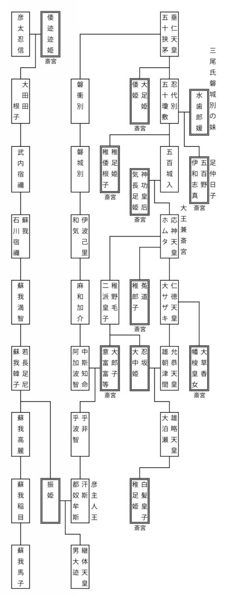
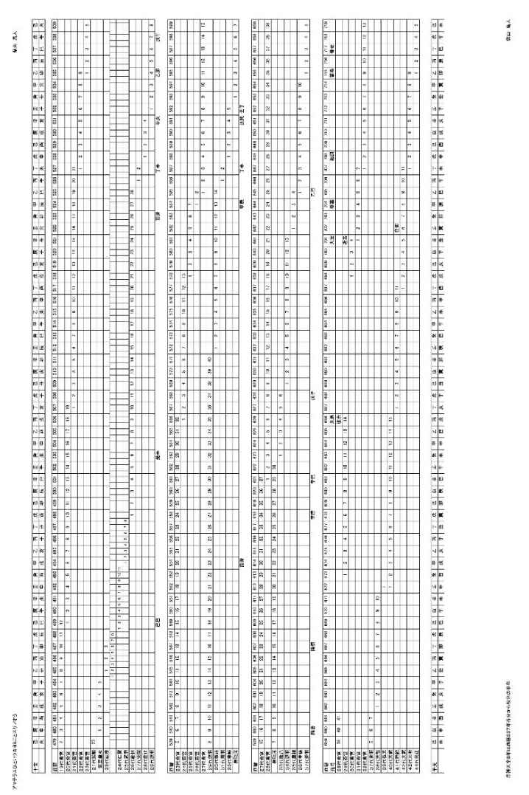

| アマテラスひといツキヨミことスサノオう | |
| 柴山 鳥人 | |
| pubfull (2018) | |
アマテラスひ と いツキヨミこ と スサノオう
柴山 鳥人
－目次－
８の１３ 明神倭根子天皇（あきつみかみやまとねこのすめらみこと）
国生み神話を知っていますか。
イザナキとイザナミの男女二柱の神が、淡路、四国、隠岐、九州、壱岐、対馬、佐渡、本州の順に八つの島を生み成す話です。この話には規則性や法則性はなく、美しさがありません。
この話は本物なのでしょうか。
明らかに疑わしいのは二番目に生まれる四国です。
伊予の二名島が四国と解釈されていますが、四国ならば伊予の四名島になるはずです。伊予の二名島は、四国である伊予島と淡路島を指す伊予の二島からの誤りではないかと想像してみました。
そうだとすると、初めに生まれる淡路島と解釈されている淡道の穂の狭別島は淡路島ではないことになります。
本物の淡道の穂の狭別島を探してみます。
四国が讃岐島でも阿波島でも土佐島でもなく、伊予島とされています。国生みの話は伊予の国に向かいあっている九州北部か中国西部でつくられているのではないでしょうか。漢字の意味のとおり「淡」をかすかな、「穂」をやり・刀などの先として解釈してみます。そうすると、かすかな道の先の狭く別れた島との意味になります。かすかな道を存在が確かでなく無くなってしまうこともある満潮時には海中に沈み干潮時には現れる道と、そして狭く別れた島を少しだけ離れた島としてみましょう。
九州北部か中国西部の満潮時には海中に沈み、干潮時には現れる道の先から少しだけ離れた島として見つけたのは九州北部、博多湾、海の中道の先から少し離れた島、志賀島（しかのしま）です。淡道は海（わた）道だったのかもしれません。少しだけ離れた島との意味の狭別島（さわけしま）から近島（ちかのしま）となり志賀島になったのかもしれません。
最初に生まれた島が志賀島だとすると、次に生まれる島が伊予の二島である四国と淡路島では離れすぎで大きすぎです。
志賀島の近くで相応しい島を探してみます。志賀島の近くにある能古島に注目しました。能古島は筑前国伊都郡（いとのこおり）の近くにあります。
能古島を含む伊都郡の二つの島が伊都の二島で、これを伊予の二島に誤ってしまったのではないでしょうか。
次に生む隠岐三つ子島も志賀島、能古島に近い場所で探してみます。
海の正倉院として有名な沖ノ島があります。
沖ノ島を含む三つの島が沖ノ三つの島ではないでしょうか。
次に四面の筑紫島である九州、その次に壱岐、対馬、佐渡、本州、最後に六小島が生まれます。
ここまで一島、二島、三島、四面の筑紫島ときて壱岐、対馬、佐渡、本州の四島になります。また、四面の筑紫島と六小島の間に四島があります。四島は五島だったのではないでしょうか。神話創造のときには認知されていなかったと思われる佐渡を外して、その代わりに二番目に生まれた島を伊都の二島としたことで無くなってしまった伊予の二島を加えます。
そうすると、壱岐、対馬、伊予の二島、本州の五島となります。
本物の国生みの神話は、海の中道の先から少しだけ離れた「志賀島」から始まり、伊都郡の能古島を含む「伊都の二島」、沖ノ島を含む「沖ノ三つの島」、「四面の筑紫島」である九州、「壱岐、対馬、伊予の二島、本州の五島」、そして最後に「六小島」が生まれる、波紋のように広がってゆく美しい話だったのではないでしょうか。
規則性と法則性を持ち波紋のように広がってゆく美しい神話が、なぜ偽の話、オカシナ話にすり替えられてしまったのでしょうか。
原因として考えられるのは東征です。
東征が実際にあって海の中道や伊都郡を知らない後世の畿内の人により九州北部から畿内へ、国生み神話の起点が替えられてしまったのではないでしょうか。
私は今まで古事記は美的な感覚も合理的な思考も持ち合わせていない古代の人の作り話だと思い込んでいました。
しかし、このような美しい国生み神話を古代の人が創造していたのなら、この先入観は改めざるをえません。古事記は、古代の人から語り継がれてきた物語を後世の人が理解できずに改変してしまった歴史書なのかもしれません。
まずは、東征前の古事記上巻を、九州北部を舞台とする史実を反映した話だとして解読してみます。
『イザナキとイザナミの二柱の神は、ミトノマグワヒをして国を生もうとします。
イザナミが主導してうまく事が運ばず、イザナキが主導してようやく国を生み終えます。
その後さらに神々を生み、火の神を生んだためイザナミは死んでしまい、出雲の国と伯伎の国との境の比婆の山に葬られます。
イザナキはイザナミをひと目見ようと黄泉の国へと行きます。
しかし、見ないでと言われたにもかかわらずイザナキはイザナミの姿を見てしまい、その醜い姿におそろしくなり逃げ出します。
恥をかかされイザナミは追いかけますが、イザナキは大岩で道を塞いで逃げ切り、やっとのことで葦原の中つ国に戻ります。』
イザナミを祀る神社が九州北部にあります。筑前国早良郡（さわらのこおり）飯盛山の飯盛神社です。
神社の東に吉武高木遺跡があります。吉武高木遺跡は、早良平野を北へ流れる室見川の中流域にある吉武遺跡群の一つで、三種の神器の鏡・玉・剣が揃って見つかった木棺墓があり、最古の王墓と呼ばれることもあるそうです。
イザナキを祀る神社には、筑前国糟屋郡太祖山の太祖神社があります。
イザナキが戻ってきた葦原の中つ国はどこにあるのでしょうか。古語の「つ」は所属の意を表し連体修飾語をつくる格助詞です。現代語の「の」と同じです。中の国だとすると筑前国那珂郡（なかのこおり）のことではないでしょうか。比恵・那珂遺跡などの重要な遺跡がいくつもあります。
そうすると、イザナミと関係のある早良郡を中心とする集団からイザナキと関係のある糟屋郡・那珂郡を中心とする集団への権力の移行を反映していると想像できます。
想像を膨らませてみましょう。吉武高木遺跡を中心とする早良国と比恵・那珂遺跡を中心とする那珂国とは協力関係にあり早良国が主導権を握っています。しかし、しだいに那珂国が力をつけてきます。早良国は那珂国に火攻めされ、残存勢力が反撃したものの撃退されて滅んだのではないかと妄想してみます。
『葦原の中つ国に戻ったイザナキは、筑紫の日向の橘の小門の阿波岐の原に出向き禊を行い神々が生まれます。禊の果てに左目からアマテラス、右目からツキヨミ、つぎに鼻からスサノオが生まれます。』
大陸の歴史書である後漢書に、西暦１０７年、倭国王帥升らが生口１６０人を後漢の安帝におくったとの記載があり、この倭国王は、中国のほかの本には倭面土国王などと書いてあるそうです。この倭国・倭面土国が大倭国（やまとのくに）の起源だとしたら、倭面土国とされている理由はこの古事記の記載と関連があるのではないでしょうか。
面土国は漢字の意味のとおり、人の顔の土地の国を意味し、左目からアマテラス、右目からツキヨミ、鼻からスサノオが生まれた国を表しているとしてみましょう。
左目から成り出でたのはアマテラスです。大倭国は天照らす太陽、日の神である天照大神を最高神として祀っています。
右目から成り出でるツキヨミが何を指すのか分りません。
鼻から成り出でたスサノオは、古事記上巻に何度も登場します。後に大国主と尊称されるオホナムヂが、スサノオの６世孫でありながらスサノオの娘を妻としているオカシナ関係に注目しました。オホナムヂは初代スサノオの傍系の６世孫で、直系の数代目スサノオの娘を娶り後に大国主となったと解釈してみます。つまり、スサノオは特定の人名ではなく、スサノオう、荒ノ王との王の尊称ではないでしょうか。
大倭国は大王が治める国です。大王（おおきみ）との尊称が使われる前に、荒ノ王との尊称があったと考えてみます。
筑前国御笠郡の筑紫神社には、その昔筑前と筑後の境に荒ぶる神がいて、往来の人々の半数を殺してしまったとの話が伝わっています。
荒ぶる神の正体は、徴用した人々の半数が亡くなってしまう程の激しい争いを行った荒ぶる王、荒ノ王、大王なのです。
もう一度、ツキヨミに注目してみます。
アマテラスが日の神、天照大神であり、スサノオが荒ノ王、荒ぶる王、大王だとするなら、ツキヨミも神や王と同等の者のはずです。そうすると、ツキヨミの正体はツキヨミこ（月夜巫女）、いツキヨミこ（斎月夜巫女）、いツキのミこ（斎の巫女）、いツキのミや（斎の宮）ではないでしょうか。
古事記から推理すると大倭国の起源である倭国の使者が、イザナギの左目から出でた天照らす日の神を、右目から出でた斎の巫女が祀り、鼻から出でた荒ノ王が青人草を治める国と倭国を漢の人に紹介したことが、倭面土国とされた原因ではないでしょうか。
さて、古事記では、大王ミマキイリヒコイニエ（１０代崇神）の娘トヨスキイリヒメが伊勢の斎宮の初出で、始まりとされています。
これは伊勢の斎宮の始まりのことであり、斎宮の始まりは禊の果てからで、ツキヨミとスサノオ、斎宮と大王が揃って大倭国が始まったのではないでしょうか。
伊勢の斎宮の始まりとは東征により斎宮が伊勢に移り始まったことで、東征を実施して斎宮を九州北部から伊勢に移したのはトヨスキの父イニエ（１０代崇神）ではないかとの疑いが生じます。
『イザナキは禊の果てに三柱の貴い神を生み成し、アマテラスに高天の原、ツキヨミに夜の食国、そしてスサノオに海原を委ねます。
しかし、スサノオは海原を治めようとせず亡き母の国である根の堅州の国に行きたいと願いイザナキに追放されてしまいます。（以下、スサノオの神逐１とします）
スサノオは亡き母の国に行く暇乞いをしようとして、アマテラスの治める高天の原に上り、スサノオを疑うアマテラスと誓約（ウケヒ）を行います。
アマテラスとスサノオの誓約では、アマテラスがスサノオの剣を取って三つに折り口に入れ吹き出し、タキリヒメ、イチキシマヒメ、タキツヒメの三柱の女の神が成されます。
タキリビメは奥津宮、イチキシマヒメは中津宮、タキツヒメは辺津宮に座す宗像の三神のこととされています。
奥津宮は沖ノ島に、中津宮は大島に、そして辺津宮は宗像市田島に祀られています。』
三柱の女の神、宗像の三神の話は、本物の国生み神話で沖ノ島を含む３島とした「沖ノ三つの島」のことではないでしょうか。
隠岐三つ子島（おきのみつごのしま）は、沖ノ島、大島、田島のタキリヒメ、イチキシマヒメ、タキツヒメの沖ノ三柱女島（おきのみつめしま）のことだったのです。
復元した国生み神話の沖ノ三つの島の話が古事記にあります。
そうすると、その前にある伊都郡の能古島を含む伊都の二島の話も古事記にあるかもしれません。伊都郡に痕跡をさがしてみます。
糸島市の三雲南小路遺跡の近くにある細石（さざれいし）神社はイハナガヒメとコノハナサクヤヒメの二柱の女神を祀っています。
古事記にこの二柱の女神が登場する話があります。
『ニニギがオオヤマツミに娘のコノハナサクヤビメを妻にと乞うたところ、姉の醜いイワナガヒメも嫁いできます。
ニニギはイワナガヒメを畏れて親元に送り返し、コノハナサクヤビメだけを留めて契りを交わします。』
この二柱の女神と能古島を含む伊都の二島に関連があるのではないでしょうか。
ニニギが返さずに残したコノハナサクヤ姫が残島であり能古島になったと推測します。もしくはコノハナ島がコノ島、ノコ島になったのかもしれません。
親元におくり返されたイワナガ姫は、陸と繋がる島である陸繋島を指していて現在の毘沙門山と浜崎山が一つの島で岩長島だったのではないでしょうか。毘沙門山北面には、柱状節理と言われる、冷えて固まるときに柱状になった岩石があります。そのために岩長島と呼ばれていたのです。
ニニギの妻のコノハナサクヤヒメとその姉イワナガヒメの話は、残島と岩長島の伊都の二柱女島（いとのふたつめじま）の話だったのです。
細石神社がイハナガヒメとコノハナサクヤヒメを祀っていることから、三雲南小路遺跡に埋葬されているのはニニギでしょう。
前漢王朝から下賜されたとされる大型の鏡が出土されていることから、ニニギは前漢のあった紀元前２世紀から紀元前１世紀ごろの人物です。前漢書に朝鮮半島の「楽浪郡の海中に、倭人がいる。分れて百余国となる。一年のおりおりに漢に使者をおくってきた」と書かれています。
ニニギは前漢と密接な関係を築いた伊都郡を支配した王だったのです。
沖ノ三柱女島、伊都の二柱女島の話があるなら、淡道の穂の狭別島である志賀島の話もあるはすです。
『スサノオが海原を治めようとせずイザナキに追放されます。イザナキは淡海の多賀で身を隠します。』との古事記の記載に注目しました。淡海は波のかすかな穏やかな海、内海の博多湾だと推測できます。しかし、多賀の適地は見つかりません。淡海の多賀は志賀島のことで、淡道の穂の狭別島の話ではないでしょうか。イザナキが身を隠したのが志賀島ならば、イザナキは志賀島を拠点とした海の支配者であったと推測できます。
イザナキは、協力関係にあった陸の吉武高木遺跡を中心としたイザナミの国を滅ぼし、天照らす日の神をツキヨミが祀り、スサノオが人を治める国を伊都郡に創り、葦原の中つ国の那珂郡も支配したと推測します。
大倭国の起源と推測した倭面土国以前の倭に関する大陸の歴史書をみてみましょう。後漢書には「倭は、韓（朝鮮）の東南海上にある。山島によって住んでいる。およそ百余国ある。漢の武帝が朝鮮を滅ぼしてから、使者をおくってくるのは、三十ばかりの国だ」とあり、ついで、「建武中元二年（西暦５７年）、倭奴国（わのなのくに）が、貢をもってきた。使者は自分を大夫だといった。倭国の南の端である。光武帝は、印綬（印とひも）を賜った」と書いてあるそうです。
イザナミの国の跡と推定した吉武高木遺跡からヒスイが見つかっています。越後国糸魚川から産出されたヒスイとされています。早良郡から糸魚川に至る日本海に沿った海上交易路があったはずです。筑前・長門・石見・出雲・伯伎・因幡・但馬・丹後・若狭・越前・加賀・能登・越中・越後に港があり、港を中心に小さな国々が発展していたのでしょう。
倭奴国の所在地は、筑前国の那珂郡だと推測されています。後漢に使者をおくっている日本海に沿った三十ばかりの国の中で南の端にあたります。
漢委奴国王という５字が刻みこまれた金印が、志賀島から見つかっています。
西暦５７年に光武帝から倭奴国の使者に下賜された印でしょう。漢委奴国王は、漢が後ろ盾となっている委奴国の王との意味です。使者の大夫の倭奴国である那珂郡が、委奴国である伊都郡（いとのこおり）に服属する国の一つだったのではないでしょうか。
後漢から金印を下賜された委奴国王は、前漢と良好な関係を築いていた筑前国伊都郡のニニギの子孫の伊都国王であり、那珂国をも支配する王なのです。
この印は漢の認める王の証ですから漢が滅亡するまで利用価値があります。
漢、後漢は西暦１８９年以後統治機能を喪失し、西暦２２０年に滅亡します。所持する意味が無くなり志賀島に丁重に埋めたと想像します。
金印を下賜された伊都国王の子孫は、古事記の国生み神話の基となる話を知っていて、淡道の穂の狭別島である志賀島が神話で最初に生まれる島であり、祖先のイザナキが身を隠した聖なる島であるため金印を埋設するのに最適な場所と考えたのでしょう。
大倭国に繋がっていく委奴国王の子孫は、漢が認知する王の印（しるし）である金印を漢の滅亡後に志賀島に埋めたと推測します。
そして、そうだとすると、それは東征の前のはずです。東征後であれば金印は畿内に運ばれ機内に埋設されたはずです。
後漢の滅亡のときには東征はまだ行われていないのです。
東征前の九州北部から始まる本物の国生み神話を改めて復元してみましょう。
オノゴロ島 玄界灘上の離島の小呂島（オノロシマ）
骨なしのヒルコ 満潮時も干潮時も海に沈んでいる浅瀬
アワ島 満潮時には沈み干潮時には姿を現す浅瀬
淡道の穂の狭別島 海ノ中道の先の近島（現在の志賀島）
伊都の二柱女島 残島（現在の能古島）、岩長島（現在の毘沙門山と浜崎山）
沖ノ三柱女島 沖ノ島、大島、田島
四面の筑紫島 白日別、豊日別、タケヒムカトヨクシヒネ別、建日別
五小島 神集島、姫島、玄界島、相島、楯崎島
近島が陸と少し離れた島、伊都の二柱女島の二島目の岩長島は陸と繋がった島、沖ノ三柱女島の三島目の田島は陸にあります。段階的に進んでゆくこの話には躍動感があります。
東征前の国生み神話は、四面の筑紫島の後、五島・六小島と続くのではなく五小島で終わっていたと推測します。
九州北部の倭奴国のその後の領土拡張を反映させて東征後に五小島が、壱岐、対馬、伊予島と淡島、本州の五島に置き換えられたのではないでしょうか。
筑前国周辺の五小島はほぼ直線上にある島で、国産みの最後に、使ったアメノヌボコを振り払い、五つの滴が落ちて小島になったとの話で国生みの話は終わっていたのではないかと妄想します。
また、この復元した国生み神話には、淡道の穂の狭別島、伊都の二柱女島、三面の筑紫島、四小島との話の原型があったのかもしれません。三面の筑紫島は伊都郡・早良郡・那珂郡若しくは志摩郡の三つの郡、或いはアマテラス・ツキヨミ・スサノオの三面の面土国のことを指すと推測します。
なお、沖ノ三柱女島の田島には宗像神社があります。宗像神社は五小島の延長線上でもあります。淡道の穂の狭別島（現在の志賀島）と伊都の二柱女島の残島（現在の能古島）の延長線上に飯盛神社があります。宗像神社と飯盛神社にはなんらかの関連があったのではないかと推測します。
筑紫島の四面についても解読してみましょう。
『筑紫島には四つの面があり、面ごとに名があります。
筑紫の国は白日別、豊の国は豊日別、肥の国はタケヒムカヒトヨクシヒネワケ、熊曾の国は建日別』とされています。
筑紫島の筑紫の国、白日別は、治める・占めるとの意味があった古語の知る・領るから領らひ別、治める地域、大倭国の基となる国の支配地を指しています。
肥の国は建日向日豊久士比泥別の 比泥別（ひねわけ）から変化したのでしょう。
どんな 意味なのでしょうか。
ここでもいくつかの漢字に意味があると考えます。
建日向ひ豊くしひ泥別として、建日は建日別を指し、向ひは向かい合っている前のほう、豊は豊かな、くしひは希しいでごく少ない・珍しい・希な、泥は土のドロのこととすると、建日別に向かいあっている豊かでまれな泥の別と解釈できます。
後半の豊かでまれな泥の別は、よく肥えた土壌の区域との肥の国の説明です。
前半は位置を説明しています。肥の国は建日別に向かい合っています。肥の国の川である現在の筑後川を挟んで北が後に肥前国となる肥の国で、南が後に筑後国となる建日別を指しています。建日別である筑後国以南は熊襲の国で、筑前国である白日別の支配が及ばない猛々しい熊曾の地で、後に北から筑後国、肥後国と領土を拡大して行ったのでしょう。
全体は、建日・豊・久士、との肥の国を除く筑紫島の四面のうちの三面の名称を使って肥の国を説明する日本語で確認できる最古の言葉遊びです。
なお、筑紫は久士と略されていることから筑紫（ちく・し）ではなく、千希し（ち・くし）が地名の由来であり、とても稀で貴い、すばらしい土地との意味でしょう。
復元した国生み神話から古事記上巻への疑いが生じます。
淡道の穂の狭別島が入っているスサノオの神逐１の話の後に伊都の二柱女島を含むニニギの話があり、その後に沖ノ三柱女島を含むアマテラスとスサノオの話があるといったように一島、二島、三島との順番で話が繋がっていたのではないでしょうか。コノハナサクヤ姫とイワナガ姫のニニギの話が上巻の後半にあり、タキリ姫、イチキシマ姫、タキツ姫のアマテラスとスサノオの話が上巻の前半にあるのは変です。
国生み神話の島と同じ様に、古事記上巻の話の順序も入れ替わってしまっているのではないでしょうか。
また、古事記上巻が史実を反映した物語であるとして読むと、登場する人物の順番に違和感があるところがあります。
アメノコヤネら五柱の神々の再登場と、大国主とニニギの登場の順番の二箇所です。
まず、アメノコヤネら五柱の神は天の岩屋での活躍の後、次の大国主の活躍と国譲りには登場せず、ニニギが高天の原から降ろし下されたときに再び現れます。
時間を超越した神々の話であるなら疑問は生じません。しかし、古事記が史実を反映した物語で、神々は実在した大王や豪族などの古代の有力者達だと解釈すると、大国主の活躍と国譲りの間の長きにわたる不在は不自然です。
大国主の活躍と国譲りの話を間に挟まず、アマテラスとスサノオの話の直後にニニギの話があったのではないでしょうか。
その一方、一島二島の順で、淡道の穂の狭別島が入っているスサノオの神逐１の後に、伊都の二柱女島が入っているニニギの話があったとも考えられます。
矛盾する関係を解消するにはニニギの話を、ニニギの天降りとニニギからの三代に別け、
イザナキとイザナミ、スサノオの神逐１、ニニギからの三代、アマテラスとスサノオ、ニニギの天降りと順番を入れ換えるほかありません。
次に、オカシナところは大国主とニニギの登場の順番です。
アマテラスやスサノオを第一世代とすると、ニニギはアマテラスの勾玉をスサノオが噛んで吹き出し、成り出でたアメノオシホミミの子なので第三世代、大国主はスサノオとクシナダヒメの子ヤシマジヌミを先祖とする第七世代にあたります。
ニニギからの三代より大国主の登場は後になるはずです。
イザナキとイザナミ、アマテラスとスサノオ、大国主の活躍と国譲り、ニニギの天降りと三代との順の古事記上巻の物語は、
イザナキとイザナミ、スサノオの神逐１、ニニギからの三代、大国主の活躍と国譲り、アマテラスとスサノオ、ニニギの天降りとの順が原形だったのではないでしょうか。
復元した古事記上巻を、禊の果てから改めて読んでみましょう。
『イザナキは禊の果てに三柱の貴い神を生み成し、アマテラスに高天の原、ツキヨミに夜の食国、そしてスサノオに海原を委ねます。』
ツキヨミに委ねる夜の食国は、ツキヨから月夜を、ミから御食（ミケ）を連想しての後世の人の創作であり、意味はないと推測します。
イザナキの左目から出でた天照らす日の神を右目から出でた清らかな月の化身の巫女が祀り、鼻から出でた荒々しい王が青人草を治める面土国の原型ができたと解釈します。
『スサノオは海原を治めようとせず、亡き母の国である根の堅州の国に行きたいと願いイザナキに追放されてしまいます。』
このスサノオの神逐１にニニギからの三代を繋げます。
神逐されたスサノオはニニギだと解釈してみます。
志賀島を拠点に海原を治めるイザナキの子ニニギが、岩長島が繋がる志摩郡（しまのこおり）の支配者オオヤマツミの娘コノハナサクヤ姫を娶り、初代スサノオとして根の堅い陸の伊都郡で建国した話になります。
海原を治めることに飽き足らず『韓の国に向き合い朝日と夕日が輝くすばらしい処』、半島に向き合い、海からの日の出と海への日の入りを見ることができる伊都郡に進出します。
初代荒ノ王のニニギは、三雲南小路遺跡に埋葬されています。
二代目の荒ノ王のホヲリ、山幸彦は三人兄弟の次男です。その痕跡も伊都郡の高祖神社にみることができます。ホヲリの妻トヨタマビメの故郷ワタツミノ宮は、ホヲリを故郷に届けるのに１日としていることから当時の航海術により１日で行ける範囲にあったと想像します。ワタツミノ宮は宗像神社が有力な候補地です。トヨタマビメは沖ノ三柱女島に関係する女性が想定されます。
三代目の荒ノ王のヒコナギサタケウガヤフキアヘズは母の妹を妻としています。その痕跡も伊都郡の産宮神社にみることができます。
さて、ニニギ、ホヲリ、ヒコナギサタケウガヤフキアヘズの三代の系図とよく似た系図があります。
カムヤマトイハレビコ（初代神武）、カムヌナカハミミ（２代綏靖）、シキツヒコタマテミ（３代安寧）の系図です。ホヲリは次男ですがカムヌナカハミミ（２代綏靖）は三男であることと、ウガヤフキアヘズの妻は母の妹ですがタマテミ（３代安寧）の妻は母の兄の娘であることの違いしかありません。
ニニギからウガヤフキアヘズまでの三代とカムヤマトイハレビコ（初代神武）からタマテミ（３代安寧）までの三代は同一人物で重複しているのではないでしょうか。
そうだとすると、ニニギからホヲリの海幸彦・山幸彦の話の『兄弟が争い、弟が妻の父の助力を得て勝った』との内容と、カムヤマトイワレビコ（初代神武）からカムヌカハミミ（２代綏靖）のイスケヨリヒメとタギシミミの話とは同じ話のはずです。
『東征を実施したカムヤマトイハレビコ（初代神武）の死後、後に大王になる御子らの腹違いになる兄タギシミミが、御子らの母である大后イスケヨリヒメを妻として、弟たちを殺そうと謀ります。それを知ったイスケヨリヒメは悩み苦しんだ末、御子らに謀りごとを歌で知らせます。御子らのうち弟カムヌナカワミミ（２代綏靖）がタギシミミを殺し、兄カムヤヰミミは位を譲ります。』
しかし、海幸彦・山幸彦の話と、イスケヨリヒメとタギシミミの話とには似たところがありません。
東征の実施者とされているカムヤマトイハレビコ（初代神武）からカムヌナカワミミ（２代綏靖）への代替わりのイスケヨリヒメとタギシミミの話は、実際の東征の実施者ではないかと疑っているミマキイリヒコイニエ（１０代崇神）からイクメイリヒコイサチ（１１代垂仁）への代替わりの話と同じなのではないかと想像してみました。
イスケヨリヒメとタギシミミの話を、イサチ（１１代垂仁）のサホビメとサホヒコの話に置き換えてみます。
イサチの母で東征の実施者イニエの妻であったミマツヒメは、夫が死に、子のイサチが後を継いで大王となった後、イサチの腹違いの兄にあたるトヨキイリヒコの妻となった。
斎宮トヨスキイリヒメの同父同母の兄であるトヨキイリヒコは大王となる野心を捨てきれず、妻ミマツヒメが自分の子を宿すとこう言う。
「夫と子のイサチとどちらを愛おしいと思っているのか。私をイサチより愛おしいと思うのであれば、眠っているところをねらって刺し殺してくれ。」
ミマツヒメは驚き、断りきれない。
昼寝をしている子イサチを刺し殺そうとはするもののためらい涙するミマツヒメ。
涙が顔に落ち目を覚ますイサチ。
イサチが母の様子を不審に思い理由を尋ねると、ミマツヒメはすっかり打ち明ける。
イサチはトヨキイリヒコを撃とうとするが、母ミマツヒメがこっそり抜け出し夫側の陣営に入ってしまい、攻撃できない。
そのうちミマツヒメは子どもを産み落とし、御子を受け取るようイサチに使いを送る。
「この御子をあなたの弟である御子と思って育ててください。」
それを聞いた大王は、
「その御子を受け取る時に、御子を抱いている母君もかっさらってしまえ。」
と部下に命ずるが、試みは失敗し、部下から報告がされる。
「母君をとることはできず、御子だけを手に入れました。」
悔しがる大君。母への思いは断ち切れず、なおも交渉するが、時を伸ばす手立てもなくなり開戦となる。母ミマツヒメは夫に従い死んでしまった。
元の「御子を受け取る時に、母君もかっさらってしまえ。」とのイサチの発言の母とは、子の母ではなく、自分の母との意味に解釈できます。
この置き換えの想像はありうると考えます。
そして、そうだとすると東征を実施したのはイニエ（１０代崇神）ではないかとの疑いが更に深まります。
ニニギからの三代と、カムヤマトイハレビコからの三代は重複していて同一人物だとしてみましょう。
ニニギは本名でカムヤマトイハレビコ（初代神武）は尊称なのかもしれません。
さて、伊都郡を拠点とした三代の荒ノ王、委奴国王の後、伊都郡の神社に王の痕跡はありません。四代目が伊都国から遷都したのではないでしょうか。
初代荒ノ王ニニギは紀元前２世紀から紀元前１世紀の前漢時代の人物です。玄孫である四代目は紀元前１世紀から１世紀ごろの人物でしょう。
大陸の歴史書では、後漢の光武帝が委奴国王に印綬を下賜したのが西暦５７年、倭国王、倭面土国王が後漢の安帝に生口をおくったのが西暦１０７年です。
東征は後漢が統治機能を喪失した西暦１８９年以降にイニエ（１０代崇神）により行われたのではないかと疑っています。東征は１世紀にはまだ行われていないと考えます。
第四代荒ノ王の遷都の先は葦原の中つ国である筑前国那珂郡であり、伊都郡から那珂郡への小東征により拠点を移したのではないでしょうか。
ニニギからの三代の後には、大国主の活躍と国譲りが繋がります。
古事記上巻の主役級の大国主が登場しますが、その登場の前にその血統を説明する話が挿入されています。
『大国主の祖先であるスサノオが登場し、唐突にオホゲツヒメを殺します。』
スサノオはクシナダヒメと結ばれヤシマジヌミが生まれます。
ヤシマジヌミはオホヤマツミの娘コノハナチルヤヒメを妻としています。
ニニギもオホヤマツミの娘コノハナサクヤヒメを妻としています。
ニニギとヤシマジヌミは義理の兄弟で同世代になります。ニニギが三雲南小路遺跡の主であるなら、ヤシマジヌミは須玖・岡本遺跡の主かもしれません。
なお、大国主はヤシマジヌミの六代後なのでニニギがカムヤマトイハレビコ（初代神武）と同一人物だとするとオホヤマトタラシヒコクニオシヒト（６代考安）と同世代になります。
『スサノオは、オホゲツヒメを切り殺した後、ヤマタノオロチを退治します。スサノオは出雲の国の肥の河のほとりに降りてきます。』
肥の河は肥の国の河、現在の筑後川だと解釈してみましょう。箸が流れ下ってくるので、筑後川下流の肥前国を想像します。
『流れをさかのぼると老いた男、足ナヅチと、老いた女、手ナヅチの二人が若い娘クシナダヒメを中に挟んで泣いています。』
足と手の間に挟まれているのは、腰・腹・胸・肩です。これはナゾナゾで、胸肩神社の田島から巫女を勧誘し、希しな田姫として祀っているのではないでしょうか。
クシナダヒメの痕跡を筑後川流域で探すと佐賀県神埼市に櫛田宮があります。近くの尾崎地区周辺には、腰のヤマタノオロチの神話を想わせる大蛇の地名伝説があるそうです。
『スサノオは足ナヅチと手ナヅチに、垣根を作り廻らしその垣に八つの門を作り門ごとに八つの桟敷を設けさせます。』
まるで城砦を作っているようです。櫛田宮の近くある神埼市と吉野ヶ里町にまたがる吉野ヶ里遺跡のことではないでしょうか。塞には八つの門があるのかもしれません。
『ヤマタノオロチを退治したあと、出雲の国の須賀に至り、「心がすがすが（須賀須賀）しくなった。」と言って、須賀の宮を作り住むことにします。』
須賀は肥の河・筑後川下流の佐賀、須賀の宮は佐賀の宮、佐賀の宮は神の佐賀、神の佐賀は、かのさか、かなさき、神埼であると推測します。
大国主の祖先であるこのスサノオは、佐賀郡から神埼郡に進出し、吉野ヶ里の城砦を拠点に肥の国を支配した須賀の王です。
大国主はイザナキの子孫ですが、伊都郡に始まるニニギ直系の荒ノ王とは別の肥の国を拠点とした須賀の王の系統から産まれているのです。
『ヤマタノオロチを殺害すると尾から三種の神器の一つの草薙の太刀が出てきて、アマテラスに差し上げます。』
素の話では腹からだったのかもしれません。
なお、三種の神器の鏡はアマテラス太陽である日の神を、勾玉はいツキヨミこ（斎月夜巫女）である斎宮を、剣はスサノオう（荒ノ王）である大王を象徴していると考えます。
いよいよ、古事記上巻の主役級の大国主が登場します。
『後に大国主と尊称されるオホナムヂには兄弟八十の神がいて競い合います。
兄弟の神と競いヤガミヒメを妻に娶りたいと稲羽（因幡）の国にでかける前に、シロウサギ・ウサギ神を助けます。』
ウサギ神は豊の国、豊日別の宇佐の神だとしてみます。
宇佐八幡宮の縁起を説明していて、住んでいた沖ノ島から渡ってきて海辺の胸肩の田島に辿りつき、高い山の尾根の大分八幡宮に行って、そこから河の川尻の宇佐八幡宮に移動してきたのかもしれません。
オホナムヂは宇佐の神を祀る豊の国を支配下に置いていたか、良好な関係を築いていたと解釈してみます。
『オホナムヂは八十の神々との競争に勝ちヤガミヒメを手に入れます。』
因幡のヤガミヒメの話とよく似た話が古事記中巻の最後にあります。伊豆志の八前の大神の娘のイズシヲトメの話です。
『兄弟の神がイズシヲトメを巡り競い、弟が手に入れます。兄は弟を妬み苦しめますが、弟は母に泣きごとを言います。
母は弟を苦しめる兄を恨みのろいます。兄は苦しみ泣いて母に許しを請うと、母はのろいを解きます。』
ヤガミヒメとイズシヲトメは同一人物で、一つの話が二つの話になったのかもしれません。
但馬（たじま）の国の出石郡出石郷、兵庫県豊岡市出石町の出石神社は、新羅の国の国王の子であるアメノヒボコが多遅摩の国に来て根付いた場所です。大国主は、新羅の国と関係が深い但馬国の有力者と血縁になったのです。
大国主は胸形の奥つ宮の神タキリビメも妻としています。奥つ宮（沖ノ島）は辺津宮（田島）の誤りで、但馬の国の地名は、辺津宮の田島に由来し、タキリビメとヤガミヒメとイズシヲトメは同一人物だと考えます。
仮にヤガミヒメがアメノヒボコの娘だとしてみると、系図からアメノヒボコの三世孫のタジマモリがイクメイリヒコイサチ（１１代垂仁）の時代に登場しますので、大国主はオホヤマトネコヒコクニクル（８代孝元）と同じ世代になります。
ニニギの系統のオホヤマトタラシヒコクニオシヒト（６代考安）からクニクル（８代孝元）の世代の男で、ニニギの系統ではない重要な人物に、穂積の臣らの祖のウツシコヲがいます。
ウツシコヲは、クニクル（８代孝元）に妹ウツシコメと娘イカガシコメを嫁がせています。その妹の息子が大王ワカヤマトネコヒコオホビビ（９代開化）です。娘のイカガシコメはクニクル（８代孝元）の死後、オホビビ（９代開化）と再婚し大王ミマキイリヒコイニエ（１０代崇神）を産んでいます。
ウツシクニタマとの別名もある大国主はウツシコヲのことではないでしょうか。
オホナムジ、大国主の痕跡を九州北部の神社に探してみます。筑前国の美奈宜神社（福岡県朝倉市林田）と大己貴神社（福岡県朝倉郡筑前町）に祀られています。
日本書紀によると大己貴大神（おおあなむちのおおかみ）は国を『美しい垣のような山に囲まれた国』と表現しています。美奈宜神社は、美垣（みかき）が美奈宜になったのか、若しくは、接頭語の美と名詞の柵・城から、美を名詞の水と誤り格助詞の「な」が付いて水な柵、みなぎ、美奈宜になったと推測します。
また、ヤガミヒメが産んだ子は木の俣の神、御井の神と言います。幹線道路が二俣に分かれている肥前国基肄郡と筑前国御井郡を治めていたのでしょう。
『オホナムヂは八十の神々に二度殺されます。二度とも母神が現れ生き返ります。その後、木の国へ逃げ、そこで木の俣から逃げ、スサノオの国へ逃げます。』
木の国は肥前国基肄郡と、スサノオの国は荒ノ王の筑前国那珂郡と解釈します。
『スサノオの国でスサノオの娘スセリビメと結び合います。スサノオから葦原の醜男と言われ２度殺されかけますが、スセリビメにも助けられ生き残ります。』
葦原の醜男に良い意味はないと考えます。
スセリビメの父、ニニギ直系の荒ノ王、大王はオホナムヂ、ウツシコヲをニニギの傍系の醜男だと見下しているのです。
『スサノオの隙を付いてスセリビメと太刀と弓矢を持って逃げます。
その太刀と弓矢で八十の神々を追い払い葦原の中つ国を統べ治めはじめて国をつくったとされています。』
オホナムヂは兄弟八十の神との争いにニニギ直系のスサノオ、大王の娘スセリビメの助力により勝利し、スセリビメの父の大王が支配していた那珂郡を中心とした白日別の筑前国と、オホナムヂの祖先、須賀の王が支配してきた比泥別の肥前国とを統一した初めての王であり大国主と尊称されたのではないでしょうか。
『大国主のヤチホコは、高志の国のヌナカハヒメを妻にします。』
ヌナカワはヒスイの産地の糸魚川の姫川を指しているのでしょうか。
因幡の国のヤガミヒメも妻にしています。日本海の糸魚川から九州北部までの海上交易を牛耳っていたと解釈できます。
オホナムジ、大国主の痕跡を日本海沿岸に探してみます。
出雲国に意宇郡（おうのこおり）があります。古代出雲の中心地です。大国主が支配し拠点としていたために意宇郡とされた可能性があります。
そうだとすると宍道（しんじ）湖の湖名の由来は穴道（なむじ）の漢字からの錯誤でしょう。
『スクナビコナが登場します。スクナビコナは異国の者で、葦原の醜男である大国主と兄と弟となって国を作り固めます。しかし、スクナビコナは常世の国に渡り去ってしまい大国主は嘆き悲しみます。』
ここでも大国主が葦原の醜男とされているので、兄弟の関係はスクナビコナが兄でオホクニヌシが弟と解釈できます。
九州北部を統一し日本海の海上交易も支配していた大国主が弟であるなら、兄のスクナビコナは倭国が朝貢していた漢を指しているのではないでしょうか。
後漢は、中平元年（西暦１８４年）に黄巾の乱とよばれる反乱がおこり西暦１８９年に統治機能を喪失しています。
後漢の中平（西暦１８４～１８８年）の年号が書いてある五尺刀が奈良県天理市の東大寺山古墳から発見されています。大国主がおくった使者クエビコが後漢王朝から下賜され持ち帰った刀ではないでしょうか。
スクナビコナが後漢ならば、西暦１７８～１８３年の間におこったとされる倭国の大乱は大国主と兄弟八十の神との争いだったのでしょうか。
大国主と同一人物ではないかと考えているウツシコヲについて、古事記ではない文献にあたってみました。
先代旧事本紀の巻第五の天孫本紀に、饒速日（にぎはやひ）を始祖とする尾治氏と物部氏の系譜が記載されています。物部氏の系譜に鬱色雄（うつしこを）がいます。饒速日の子宇摩志麻治（うましまち）の五世の子孫です。
『オホナムヂは八十の神々に二度殺されます。』と古事記にあります。
物部氏の系譜が、この兄弟八十の神々との争いを物語っています。
三世の子孫に、大禰（おほね）とその弟の出雲醜大臣（いずものしこのおほおみ）と出石心大臣（いづしごころのおほおみ）がいます。
四世の子孫に、出雲醜大臣の子の大木食（おほきくひ）、六見宿禰（むつみのすくね）、三見宿禰（みつみのすくね）と、出石心大臣の子の大水口宿禰（おほみなくちのすくね）、大矢口宿禰（おほやぐちのすくね）がいます。
五世の子孫に、出石心大臣の子の大水口宿禰の子の鬱色雄（うつしこを）、鬱色謎（うつしこめ）、大綜杵（おほへそき）、大峯大尼（おほみねのおほね）がいます。出雲醜大臣の子の子の記載が五世の子孫にはありません。
出雲醜大臣の「しこ」に、色ではなく醜の漢字が当てられているのには訳があると推測します。 三世の子孫で兄弟である出雲醜大臣と出石心大臣から一族の主導権を巡る争い、山陰地方の支配権を巡る争いが始まり、祖父の出石心大臣が殺され、父の大水口宿禰もしくは大矢口宿禰が殺された後、鬱色雄がスサノオである大王の娘スセリビメを娶り、その威光により一族の主導権と山陰地方の支配権を確立したのです。
ウツシコヲは出雲国の意宇郡（おうのこおり）を拠点とした意宇国（おうのくに）の国主であり、大国主なのではないでしょうか。
さて、古事記では大国主はスサノオとクシナダヒメの子ヤシマジヌミの六世の子孫です。そして、先代旧事本紀ではウツシコヲはニギハヤヒの子ウマシマチの五世の子孫です。大国主がウツシコヲならば、一世代の相違がありますが、ヤシマジヌミとウマシマチ、スサノオとニギハヤヒは同一人物になります。
スサノオは大王だと推測しています。そうするとニギハヤヒは初代スサノオ、ニニギと同一人物ではないでしょうか。
ニニギは本名でカムヤマトイハレビコ（初代神武）は尊称で同一人物だと疑っています。
そうだとすると、イワレビコ（初代神武）がアヒラヒメを妻として産んだ子のタギシミミは、ヤシマジヌミ、ウマシマチと同一人物です。
そして、ニギハヤヒがニニギでありイワレビコ（初代神武）だとすると、先代旧事本紀の巻第五の天孫本紀に記載される尾治氏の系譜は大王の系譜と同一のはずです。
ニギハヤヒから尾張氏の十二代目に乎止与命（おとよのみこと）がいます。イハレビコ（初代神武）から十一代目の人物にトヨキイリヒコがいます。一世代の相違がありますが、乎止与命とトヨキイリヒコは同一人物である可能性があります。
トヨキイリヒコの子孫である尾張氏が、始祖をトヨキイリヒコだとわからないように乎止与命としたのではないでしょうか。
古事記のイサチ（１１代垂仁）のサホビメとサホヒコの話は、イスケヨリヒメとタギシミミの話で、イスケヨリヒメはミマツヒメでありタギシミミはトヨキイリヒコではないかと推理しました。
尾張氏は、トヨキイリヒコがイサチ（１１代垂仁）に対して謀反を企て殺されてしまったため、祖先をトヨキイリヒコとするのをはばかったのではないでしょうか。
そうだとすると、トヨキイリヒコ、乎止与命の子孫、尾張氏はなぜイサチ（１１代垂仁）に根絶やしにされず、生存し、存続できたのでしょう。
イサチ（１１代垂仁）の母のイスケヨリヒメ・ミマツヒメは、ヒバスヒメをイサチ（１１代垂仁）の妻に薦めています。
ミマツヒメは、トヨキイリヒコとの子ホムチワケがイサチ（１１代垂仁）に殺害されないように、ホムチワケの味方になってくれることが見込める女性を薦めたはずです。
ヒバスヒメの父である丹波のヒコタタスミチノウシがトヨキイリヒコと同一人物であり、トヨキイリヒコの娘であることからヒバスヒメを薦めたのではないでしょうか。
トヨキイリヒコの娘のヒバスヒメがイサチ（１１代垂仁）の妻となることでトヨキイリヒコの子孫である尾張氏は生き延びることが赦されたのだと妄想します。
『スクナビコナに去られ嘆き悲しむ大国主の前に、海を輝きわたらせて依り来る神が登場します。そして、東の方の山の上に祀ることとなります。』
海は比恵・那珂遺跡の東の宇美のことでしょうか。
大国主を祀る美奈宜神社の真東のマテラ山の上に、マテラフ神社があります。
祀ることとなった神はアマテラスです。
須賀の王直系の大国主は主宰神クシナダヒメに加え、併合した荒ノ王の国・筑前国のアマテラス日の神も祀ることにしたのです。
魏志倭人伝には倭国の大乱の後、「そこで共に一人の女子を立てて、倭国の王とした。名を卑弥呼という。」とあります。
女王の卑弥呼とは天照らす日の神を祀る日の巫女、斎宮のことでしょう。
『アマテラスはわが子を高天の原から中つ国に降ろそうとします。しかし、騒がしく荒れ狂う国つ神のために降りることができません。』
アマテラスは斎宮であり、荒れ狂う国つ神である大国主からニニギ直系の大王、荒ノ王への国譲りを画策します。
『まず、アメノホヒを送りますが帰ってきません。次にアメノワカヒコを送ります。
アメノワカヒコは大国主の娘のシタデルヒメを妻にして自らが統治することを図りますが、死んでしまいます。
アメノワカヒコの弔いでは、大国主の息子アヂシキタカヒコネがアメノワカヒコに似ているとされて間違えられ怒ります。大国主の娘タカヒメが仲裁します。』
大国主がウツシコヲなら、アメノワカヒコはウツシコヲの妹のウツシコメと娘イカガシコメを妻とするオホヤマトネコヒコクニクル（８代孝元）です。
大国主の娘のシタデルヒメとされているのがウツシコヲの妹のウツシコメ、大国主の娘タカヒメとされているのがウツシコヲの娘のイカガシコメです。
そうすると、アメノホヒはクニクル（８代孝元）の父のオホヤマトネコヒコフトニ（７代孝霊）でしょう。
『アマテラスは、天の安の河の河上の天の岩屋にいて天の安の河の水を塞ぎ止めているタケミカヅチノヲを送ろうとします。タケミカヅチノヲは承諾し、三度目の使者となり大国主に国譲りを迫ります。』
タケミカヅチノヲがいるのは筑後川の上流でしょうか。
豊後国日田郡、大分県日田市から鉄鏡が出土しています。
ツキヨミ、斎宮卑弥呼がタケミカヅチノヲを味方にしようと贈った鏡ではないかと妄想します。
『大国主の息子ヤヘコトシロヌシとタケミナカタが承諾し、大国主は葦原の中つ国を天つ神に差し出します。アマテラス側の八十の神々の一員となり、百八十に余る大国主の一族がヤヘコトシロヌシを先頭に仕えることになります。』
大乱にならずに国譲りが完了し、ニニギ直系の大王が治めることになります。
大国主がウツシコヲなら、妹の息子で娘の夫のワカヤマトネコヒコオホビビ（９代開化）に継承したことになります。
『タケミナカタは科野の国の諏訪の湖に逃げ去り背かないことを約束します。』
諏訪湖ではあまりにも遠すぎます。
大国主を祀る出雲大社に近い宍道湖であり、出雲国の意宇郡（おうのこおり）を中心とした意宇国の県主となったのではないでしょうか。
大国主の活躍と国譲りの後は、アマテラスとスサノオの話になります。
アマテラスはアマテラスを祀るツキヨミの斎宮、スサノオは大王と置き換えます。
『大王が斎宮に会いに来ます。斎宮は驚き恐れ、警戒し戦いの準備をします。
大王は国を奪おうとする意図はないことを示し、斎宮の警戒を解きます。
大王は悪しき振る舞いをしますが、斎宮は許します。
しかし、大王の悪しき振る舞いが度を越えます。斎宮はおびえて天の岩屋に籠もります。
闇に覆われ、災いが起こります。困った有力者達が集まります。
楽しい集会になり喜びの声をあげていると斎宮は戸を開けます。
鏡を差し出すと斎宮は戸から出てきて、外に引き出されます。
斎宮が出ると明るい光に包まれ、すばらしい世に戻ります。
有力者たちは大王に千位置戸（ちくらのおきど）を納めさせ葦原の中つ国に放逐します。（以下、スサノオの神逐２とします）』
アマテラスとスサノオの後、上巻の最後は、ニニギの天降りの話です。
『アマテラスとタカギの神が、日継ぎの御子マサカツアカツカチハヤヒアメノオシホミミに向かい、
「中つ国に降り、統べ治めなされ」と言いますが、
「準備している間に子が生まれました。この子アミニキシクニニキシアマツヒコヒコホノニニギを降ろすのがよろしいかと思います。」と答えます。アマテラスがニニギに
「豊葦原の瑞穂の国は、なんじが統べ治める国である。わが言の葉のまま降り行きなさい。」と命じます。
ニニギは天降りしようとしますが、見知らぬ神が待ち受けています。その神は国つ神サルタビコで、天つ神の御子が天降りする先払いとして仕えようと待っていました。』
次は中巻の始まり、東征の始まりの話です。
『カムヤマトイハレビコが兄イツセに
「ここから出て東にいきませんか」と誘い筑紫に向かいます。
海を北に向かって豊の国の宇沙に着き、少し西に移り岡田の宮、東に行って安芸の多祁理に、そこから東に行き吉備の高島に住まいします。
そして、なお東に行こうとした時に、亀の背に乗り釣りをしながら羽ばたき来る人と速吸の門で出会います。海の道を知る国つ神で、お伴に仕えることになりサヲネツヒコと名づけます。』
接続してみると、アマテラスとスサノオの最後の「有力者たちは大王に千位置戸を納めさせ葦原の中つ国に放逐します。」とニニギの天降りの始めの「アマテラスとタカギの神が、日継ぎの御子マサカツアカツカチハヤヒアメノオシホミミに向かい、「中つ国に降り、統べ治めなされ」と言う」が似ています。
同じことを言っているのだと解釈してみましょう。
意味が分からなかった千位置戸は、限りなく多くのとの意味の千五百（ちいほ）と、助数詞で人家を数える語の戸（こ）の千五百戸であり、限りなく多くの人家の意味です。
限りなく多くの人家を治めさせるために中つ国に大王を降ろしたのです。
また、ニニギの天降りの「ニニギは天降りしようとしますが見知らぬ神が待ち受けています。その神は国つ神サルタビコで天つ神の御子が天降りする先払いとして仕えようと待っていました。」と、東征の始まりの「なお東に行こうとした時に、亀の背に乗り釣りをしながら羽ばたき来る人と速吸の門で出会います。海の道を知る国つ神で、お伴に仕えることになり、サヲネツヒコと名づけます。」も似ています。
これも同じことを言っているのだと解釈してみましょう。
国つ神のサルタビコとサヲネツヒコは同一人物です。
東征途中に現地の有力者が協力したのです。
東征の始まりの中の、東征の実施者カムヤマトイハレビコはミマキイリヒコイニエ（１０代崇神）だと考えています。
ニニギの天降りがイニエ（１０代崇神）の東征だとすると、ニニギに天降りを譲るニニギの父、日継ぎの御子マサカツアカツカチハヤヒアメノオシホミミはイニエ（１０代崇神）の父ワカヤマトネコヒコオホビビ（９代開化）です。
オシホミミとオホビビ（９代開化）は同一人物です。
そうなれば、アマテラスとスサノオのアマテラスは、イニエ（１０代崇神）の娘の斎宮トヨスキの前任の斎宮、日の御子、卑弥呼で、スサノオはオホビビ（９代開化）でしょう。
ツキヨミの斎宮卑弥呼とスサノオの大王オホビビ（９代開化）の治世時に大王になる前のイニエ（１０代崇神）に東征を実施させたと考えます。
また、アマテラスとスサノオの話は、斎宮による神権統治から大王による王権統治への移行期を反映しているのではないでしょうか。
西暦２３９年、朝鮮半島の魏の出先機関に邪馬台国卑弥呼の使者があらわれます。
邪馬台国は女王の国です。
女王とは斎宮のことで、大王より斎宮が優位だったのです。
東征よりも前の、斎宮卑弥呼が大王オホビビ（９代開化）より優位だった、宗教による神権統治の時代だったのではないでしょうか。
邪馬台国は東征前の九州北部にあり、魏の使者が来日した西暦２４０年より後に東征が行われたのではないでしょうか。
魏志倭人伝によると女王国は約三十の国を支配していました。
対馬国、一大国、末盧国、伊都国、奴国、不弥国の六つの国と、斯馬国、己百支国、伊邪国、都支国、彌奴国、好古都国、不呼国、姐奴国、對蘇国、蘇奴国、呼邑国、華奴蘇奴国、鬼国、爲吾国、鬼奴国、邪馬国、躬臣国、巴利国、支惟国、烏奴国、奴国の二十一の国が挙げられています。
国名が唯一、四文字の華奴蘇奴国に注目しました。
かなさなこく、若しくは、かなそなこくと読めます。
スサノオが「心がすがすが（須賀須賀）しくなった。」と言って作り住んだ須賀の宮、肥前国の神埼郡（かなさのこおり）ではないでしょうか。
この一致を鍵とすると、蘇奴国（さなこく）は佐賀郡（さがのこおり）、鬼国（きこく）は基肄郡（きいのこおり）と推測できます。
邪馬台国の国は、後の大倭国の郡と同じ大きさと考えてよさそうです。
約三十の郡ならば邪馬台国の領土は九州北部の範囲内で収まります。
魏志倭人伝は、約三十の国の最後に奴国をあげ、「女王の境界のつきるところである」としています。
邪馬台国には奴国が二国あることになります。
魏の役人は後漢書の「倭奴国は倭国の南の端である」との記載から、邪馬台国の南の端に奴国があるはずだと考え、辻褄が合うように第一の奴国である那珂郡とは別の第二の奴国を南の端に創作したのだと推測します。
第二の奴国はなかったのです。
そうすると、境界のつきるところは第二の奴国の前の鳥奴（うな）国になります。
邪馬台国と抗争のある狗奴国は九州中部の肥後国菊池が有力です。
鳥奴（うな）国が大牟田（むた）市になり、邪馬（やま）国は筑後国矢部（やべ）川流域の八女（やめ）市・矢部（やべ）村・みやま市になったと推測します。
また、躬臣（くす）国は筑後川上流の豊前国玖珠郡（くすのこおり）だと推測します。
大国主が統一した筑前国と肥前国に加え、半世紀後には筑後国と筑後川の上流の豊前国の一部まで領土を拡大しているのです。
参考にした「弥生時代の歴史」（著者藤尾慎一郎、講談社）によると、弥生後期の各地域のシンボルについて
「北部九州、西四国：広形銅矛をまつる地域
近畿、東四国 ：近畿式銅鐸をまつる地域
吉備 ：特殊器台・特殊壺で墳墓祭祀する地域
山陰 ：四隅突出型墳丘墓の上でまつりを行う地域
東海 ：三遠式銅鐸をまつる地域」としています。
そうすると、邪馬台国は北部九州、西四国の広形銅矛をまつる地域です。
東征により近畿、東四国の近畿式銅鐸をまつる地域を併合したと推測します。
魏志倭人伝の投馬国は、但馬国のことであれば但馬を含む意宇国の山陰で、丹波国のことであれば、丹波を含む近畿、東四国ということになります。
地名から丹波の西隣の但馬と九州北部との繋がりが窺えます。
九州北部の沖ノ島・田島の地名が転移して隠岐の島・但馬になったと推測します。
真ん中の大島がありませんが、大山がその替わりなのか、島根半島を大島と呼んだのかもしれません。
また、畿内の奈良を中心に、九州北部に由来すると推測できる地名があります。
奈良（なら）は筑前国那珂（なか）郡、
奈良の南南西の紀伊（きい）は那珂郡の南西の肥前国基肄（きい）郡、
奈良の北の近江（おうみ）は那珂郡の北の博多湾、淡海（あわうみ）が地名の由来でしょう。
奈良の北東の伊賀（いが）に対応する地名が那珂郡の北東にあるはずです。
那珂遺跡の北 東にＪＲ伊賀駅があります。
古地図を調べてみると伊賀村があります。
邪馬台国の伊邪国に該当すると考えます。
東征後の大倭国の中心は奈良ですから、東征前の邪馬台国の中心は那珂郡でしょう。
奈良の東の伊勢に対応する地名が那珂遺跡の東にあるはずですが見つかりません。
志摩と一体で伊勢・志摩と呼ばれることもあります。筑前国伊都郡・志摩郡に由来しているのでしょうか。しかし、那珂郡の西にある伊都郡が奈良の東に位置する伊勢になるとは思えません。伊勢が九州北部の地名に由来していないとすると、伊勢神宮があるから地名が伊勢なのではないでしょうか。
では伊勢神宮は、なぜ伊勢なのでしょうか。
伊勢神宮は奈良の真東に配置されています。
この東西の関係は大国主を祀る美奈宜神社とマテラ山にもありました。また、ニニギの三雲南小路遺跡と飯盛山にもあります。
那珂遺跡の真東に伊勢神宮の伊勢の由来となる地があるはずです。
那珂遺跡から真東に進んでみましょう。
まず、那珂郡の隣の席田郡の中の月隈にあたります。近くの金隈には古代の集団墓地があります。次に宇美にあたります。魏志倭人伝の不弥国でしょうか。海を輝きわたらせて依り来る神、アマテラスは宇美で祀られていたのかもしれません。更に進むと山を越えた辺りに大分八幡宮が、もっと進むと宇佐八幡宮があります。
月隈、宇美、大分八幡宮、宇佐八幡宮は聖地ではありますが、伊勢の由来となるものは発見できません。なお、宇佐八幡宮の豊の宇佐の神は那珂郡の東の方位の先端との意味の卯先（うさき）が由来だと考えます。
このまま真東に行ってみます。
四国の伊予に上陸し土佐を抜け、紀伊半島の西に上陸し東の熊野に到着します。宇佐と熊野は東征路上にあります。東征路の二地点が那珂遺跡からほぼ同緯度です。同緯度上には高知県の安芸市周辺と和歌山県の白浜町周辺があります。
東征の途中の安芸の国の多祁理の宮は土佐国安芸郡の多気（たけ）神社ではないかとの説があります。そうだとすると吉備の高島の宮も、紀伊の高島である可能性があります。白浜町周辺で高島を探します。白浜町にある円月島の正式名称が高島です。
那珂郡から関門海峡をとおり東の先の豊の宇佐、豊後水道をとおり土佐の安芸、そして紀伊の高島、熊野との経路が東征路だったのです。
那珂遺跡の真東に、伊勢の元となる地は見つかりませんでした。
しかし、伊勢の由来を探していたら、瀬戸内海でも日本海でもなく太平洋側を那珂遺跡と同緯度上を真東に進む東征路が見つかりました。
東征に伊勢の由来があるのかもしれません。
想像を膨らませてみましょう。
東征中にカムヤマトイワレヒコ（初代神武）の兄イツセが亡くなっています。イツセが、伊勢神宮の伊勢の由来となっているのではないでしょうか。
イツセは、ミマキイリヒコイニエ（１０代崇神）の東征に同行した女性・巫女であり、東征の途中で亡くなり、熊野にある下里古墳に葬られたと妄想してみます。この場合、東征は下里古墳が築造されたとされる４世紀に行われたことになります。
那珂郡の那珂遺跡と同緯度上を真東に進む東征路は合理的とは思えません。
東征は、アマテラスを祀るツキヨミ、斎宮がスサノオ、荒ノ王に瑞穂の国を治めるよう命じて行われたと解釈しました。東征には合理的に説明できない宗教的な目的があったのかもしれません。
天の岩屋の話は、日食を反映した話ではないかとの説があります。日食の穢れを清めるための禊が東征を命じた斎宮の目的だったのかもしれません。また、卑弥呼が斎宮で日食により斎宮を交代したのなら、魏志倭人伝で西暦２４７年に死亡したとされている卑弥呼は、日食に起因して斎宮を退位しただけで逝去していないのではないでしょうか。
そうすると、退位した斎宮卑弥呼がイツセであり、日食の穢れを清めるための禊としてミマキイリヒコイニエ（１０代崇神）に東征を行わせたのではないかと妄想します。この場合、東征は３世紀後半に行われたことになります。
一方で東征路は合理的にも思えます。
北部九州、西四国の広形銅矛をまつる地域と、近畿、東四国の近畿式銅鐸をまつる地域が重なる場所が土佐国安芸郡です。東征はまずこの中間地域を支配し、次いで敵地の中心から適度に遠い紀伊半島の白浜を侵略の拠点として、畿内に進出したと考えると太平洋側を進む東征路は戦略的です。
紀伊半島では３世紀前半に津波があったことがわかっています。アマテラスが天の岩屋に籠り起こった災いとは津波のことで、その影響で東征は大きな抵抗も無く土佐の安芸、紀伊の高島を拠点にできたのかもしれません。
イニエ（１０代崇神）が東征を実施したとすると、ワカヤマトネコヒコオホビビ（９代開化）は九州北部を都とした最後の大王です。九州北部で崩御しているはずです。東征の出発地である那珂郡の比恵・那珂遺跡に築造年代が３世紀中旬と推定されている那珂八幡古墳があります。古墳の被葬者はオホビビ（９代開化）でしょうか。
３世紀中旬に亡くなった大王オホビビ（９代開化）が大王になる前のイニエ（１０代崇神）に東征をさせたとすると、東征は３世紀前半に行なわれたことになります。
東征はいつ行われたのでしょうか。
なお、日本書紀では、吉備は東征後の四道将軍の派遣により征服されていますが、古事記ではオオヤマトネコヒコフトニ（７代考霊）の御子オホキビツヒコとワカタケキビツヒコが言向け従わせたとあります。
イニエ（１０代崇神）が行う東征の前にすでに支配下にあり、吉備の楯築弥生式墳丘墓はオホキビツヒコの古墳なのかもしれません。
また、古事記では東征は熊野の後『熊野からヤタガラスの後ろに出かけて行くと、吉野の河の河尻に到り着きます。』と記載されています。
紀伊の高島を拠点としていたとすると、熊野から吉野の河、紀ノ川の河尻、河口までは紀伊の高島を経由しての海路だったのではないでしょうか。
紀ノ川を遡って吉野、宇陀、忍坂と進み、奈良盆地の東の桜井市から大和に進出したものと推測します。
古事記の東征の終盤にニギハヤヒが登場します。
「イワレヒコが戦っている時に、イワレヒコのあとを追って、ニギハヤヒが参り赴いてイワレヒコに仕えます。ニギハヤヒはトミビコ （登美に住むナガスネヒコ） の妹のトミヤビメを妻として、産んだ子がウマシマヂで物部の連、穂積の臣、采女の臣らの祖。」とあります。
先代旧事本紀巻第五天孫本紀では物部氏の始祖が饒速日（にぎはやひ）で、長髄彦（ながすねひこ）の妹との子が宇摩志麻治（うましまち）とされています。
大国主の国譲りの後に東征があったと考えます。
大国主は饒速日の物部氏の系譜の五世の子孫の鬱色雄（うつしこを）です。
六世の子孫に鬱色雄の子の武建大尼（たけたつおおね）と、鬱色雄の弟の大綜杵（おほへそき）の子の伊香色謎（いかがしこめ）と伊香色雄（いかがしこお）がいます。
伊香色雄は、「山代の県主の先祖の長溝の娘真木姫を妻として二人の御子がお生まれになった。さらに山代の県主の先祖の長溝の娘荒姫と、妹の玉手姫を共に妾としてそれぞれが二人の男子をお生みにになった。倭の志紀彦（磯城県主の弟磯城の子孫）の娘、真鳥姫を妾として一男がお生まれになった。」とあります。
山代の県主の先祖の長溝が登美に住むナガスネヒコであり、ニギハヤヒとされているのはナガスネヒコの娘を妻とした伊香色雄なのではないでしょうか。
古事記で東征の実施者は初代神武とされていますが、実際は神武の子孫のイニエ（１０代崇神）です。
同じように、先代旧事本紀巻第五天孫本紀で、東征に登場する物部氏の始祖のニギハヤヒは、実際はニギハヤヒの六世の子孫の伊香色雄なのです。
さて、遡って大国主の国譲りは古事記に『大国主の息子ヤヘコトシロヌシとタケミナカタが承諾し、大国主は葦原の中つ国を天つ神に差し出します。アマテラス側の八十の神々の一員となり、百八十に余る大国主の一族がヤヘコトシロヌシを先頭に仕えることになります。タケミナカタは科野の国の諏訪の湖に逃げ去り背かないことを約束します。』と記載されています。
大国主の息子ヤヘコトシロヌシとタケミナカタとされているのは、六世の子孫の武建大尼と伊香色雄ではないでしょうか。
そうすると、科野の国の諏訪の湖とされている湖は宍道湖であり、出雲国の意宇郡（おうのこおり）を中心とした意宇国の県主になったと推測しましたが、河内湖である可能性もありそうです。
先代旧事本紀の巻第五の天孫本紀の饒速日の子孫の尾治氏の系譜と古事記の大王の系譜を重ねてみます。
饒速日はニニギでありカムヤマトイワレビコ（初代神武）、
饒速日と天の道日女との子の天香語山（あまのかごやま）はホヲリでありカムヌナカハミミ（２代綏靖）、
孫の天村雲（あまのむらくも）はヒコナギサタケウガヤフキアヘズでありシキツヒコタマテミ（３代安寧）と重なります。
三世の子孫、天忍人（あまのおしひと）はシキツヒコ、天忍男（あまのおしお）はオホヤマトネコスキトモ（４代懿徳）、忍日人（おしひめ）はトコネツヒコイロネ、
四世の子孫、天忍男の３人の子、次男の建額赤（たけぬかあか）はミマツヒコカエシネ（５代孝昭）、長男が尾張の連の祖とされるオキツヨソで建額赤の異母の兄、その妹ヨソタホビメは建額赤の異母妹で妻となります。ヨソタホビメ、またの名は日置姫（ひおきひめ）と建額赤の妻である置姫（おきひめ）とは同一人物なのです。
五世の子孫、建箇草（たけかくさ）はオホヤマトタラシヒコクニオシヒト（６代孝安）と重なります。
尾張氏系の十一世の子孫の乎止与（おとよ）がトヨキイリヒコだとすると、
十世の子孫はミマキイリヒコイニエ（１０代崇神）の世代、
九世の子孫はワカヤマトネコヒコオホビビ（９代開化）の世代、
八世の子孫、倭得玉彦（やまとえたまひこ）はオホヤマトネコヒコクニクル（８代孝元）、
七世の子孫、建諸隅（たけもろすみ）はオホヤマトネコヒコフトニ（７代孝霊）と重なります。
六世の子孫が重なり合いません。
オホヤマトネコスキトモ（４代懿徳）、天忍男（あまのおしお）の系統はクニオシヒト（６代孝安）、建箇草（たけかくさ）で絶え、ニニギの別の系統から、建諸隅と同一人物のオホキビモロススミが大王のフトニ（７代孝霊）になっているのではないでしょうか。
こうした場合、前の系統に繋がる女性を妻とし、その妻から産まれた子を後継者とするのが常道です。
古事記によると、フトニ（７代孝霊）はオホヤマトクニアレヒメ（ハエイロネ）とその妹のハヘイロドを妻としていて、それぞれが男子を産んでいます。
この姉妹はシキツヒコタマテミ（３代安寧）の子のシキツヒコの子ワチツミの娘で前の大王の系統の女性のはずです。
しかし、その子オホキビツヒコやワカタケキビツヒコは大王とはならず、倭得玉彦（やまとえたまひこ）と同一人物のクニクル（８代孝元）、が大王となっています。
クニクル（８代孝元）は、大国主ウツシコヲの妹のウツシコメと娘イカガシコメを妻としています。
古事記で大国主の娘を妻にし、自らが統治することを図ったアメノワカヒコと重なります。
古事記の『アマテラスはわが子を高天の原から中つ国に降ろそうとします。しかし、騒がしく荒れ狂う国つ神のために降りることができません。』との記載を、アマテラスは斎宮であり、荒れ狂う国つ神である大国主から、わが子のニニギ直系への国譲りを画策したと解釈しました。
しかし、この解釈だとニニギに繋がる大王の系統のフトニ（７代孝霊）・建諸隅やクニクル（８代孝元）・倭得玉彦が大王になっているにもかかわらず、アメノワカヒコが自ら統治することを図ったとしてさらに国譲りを迫っていて話が矛盾します。
アマテラスが高天の原から中つ国に降ろそうとしたわが子とは、大王ではなく斎宮なのではないでしょうか。斎宮を頂点とする体制の構築がその目的なのです。
クニオシヒト（６代孝安）・建箇草（たけかくさ）までの系統では斎宮が、武力を行使しがちな荒ノ王、大王を牽制する役割を果たし、フトニ（７代孝霊）・建諸隅の系統に移ると大王が優位となり、抗争がより激しくなったため、再び斎宮を共立しようと図ったのです。
古事記の『大国主の息子ヤヘコトシロヌシとタケミナカタが承諾し、大国主は葦原の中つ国は天つ神に差し出します。アマテラス側の八十の神々の一員となり、百八十に余る大国主の一族がヤヘコトシロヌシを先頭に仕えることになります。』との記載を、大国主のウツシコヲと息子にあたる六世の子孫の武建大尼と伊香色雄が、ワカヤマトネコヒコオホビビ（９代開化）に国を譲ったとした解釈は訂正します。
大国主の息子のヤヘコトシロヌシは、古事記でウツシコヲの娘の夫、義理の息子のクニクル（８代孝元）です。
斎宮卑弥呼を共立し、斎宮に対して大王クニクル（８代孝元）を先頭に仕えることになったのではないでしょうか。
筑前国の美奈宜神社（福岡県朝倉市林田）はスサノオと大国主と事代主を祭っています。
大国主のウツシコヲが都を造り、事代主・クニクル（８代孝元）が拠点としたと推測します。
葦原の中つ国、那珂郡から美奈宜神社に拠点を移したのであれば、その目的は熊曾の国・建日別である南の筑後国への進出、侵略、併合なのではないでしょうか。
筑後国の高良大社（こうらたいしゃ）は高良玉垂命を祀っています。
高木山にはもともと高木神が鎮座していましたが、玉垂命が一夜の宿として山を借りたいと申し出て、高木神が譲ったところ、そのまま玉垂姫が結界を張って鎮座したとの伝説があります。
筑後国の併合は斎宮卑弥呼、高良玉垂命によって武力のみによらず比較的平和裏になされたのではないでしょうか。
美奈宜神社の近くに平塚川添遺跡があります。
斎宮卑弥呼はここで実権を握り、大国主と大王の事代主を従えていたのでしょう。
なお、筑紫神社に祀られている荒ぶる神は、荒ノ王、大王のフトニ（７代孝霊）が、原口古墳の被葬者はクニクル（８代孝元）が有力と考えます。
東征はいつ行われたのでしょうか。
東征を実行したのは大王になる前のミマキイリヒコイニエ（１０代崇神）です。イニエ（１０代崇神）は古事記に「大王の御年は百あまり六十あまり八歳で戌寅（つちのえとら）の年の十二月に亡くなった。」と記載されています。
崩御した戌寅の年が西暦２５８年であれば３世紀前半に、西暦３１８年であれば３世紀後半に東征が行われたと推測できます。
しかし、古事記に記載されている百あまり六十あまり八歳で亡くなったとのイニエ（１０代崇神）の異常な長寿は信用できません。
魏志倭人伝に「倭人は、正しい暦の使い方を知らずに、ただ、春の耕作と秋のとり入れをもって、年を数えている」との記載があります。
１年を２年とする半年暦であったなら古事記の異常な長寿の説明がつきます。
倭人は、春の耕作と秋のとり入れをもって、年を数えていたのでしょうか。
現在の日本人にはお彼岸にお墓参りをする風習があります。同様の行事をしている仏教国は他にありません。お彼岸の中日が春分の日、秋分の日です。皇室では先祖祭りの神事が行われています。日本国は春分の日、秋分の日を祝日にしています。古来の春秋半年暦の行事が反映されているのではないでしょうか。
太陽が真東から昇り真西に沈む日である、春分の日と秋分の日を区切りとする春秋半年暦を古代の人々が使っていた可能性があります。
「日本の歴史：１」（編者（代表）家永三郎、ほるぷ出版）を参考に検証します。
「『三国史記』は、百済の阿華王の６年「夏五月、王は倭国と好を結び、太子の典支を質とした」と書いている。阿華王の６年は３９７年である。『日本書紀』も、（中略）「応神天皇」の８年に、「阿花王は、王子直支を天朝につかわした」と書いている。」としています。応神８年は単純に紀年を西暦に変換すると西暦２７７年です。
また、日本書紀に「「継体天皇」の１７年のところでは、「夏五月、百済王の武寧がなくなった」と書いている。「継体天皇」の１７年は５２３年にあたる。『三国史記』は、武寧王のことを「斯摩王」と書き、５２３年の「夏五月、王なくなる」としている。」としています。継体１７年は単純に紀年を西暦に変換すると西暦５２３年です。
半年暦を採用していたとすると、ホムタ（１５代応神）８年以前は半年暦で、ホムタ（１５代応神）８年からオオド（２６代継体）１７年までの間に半年暦が１年暦に変わり、オオド（２６代継体）１７年以降は１年暦だったと推測できます。
百済の阿華王の６年である西暦３９７年に対応するホムタ（１５代応神）８年を西暦３９７年春分から秋分までの半年としてみます。
ホムタ（１５代応神）４１年春２月１５日に大王は崩御します。春秋半年暦で４１半年とすると崩御は西暦４１３年秋分から４１４年春分までの間です。
日本書紀に、同月「阿知使主らが呉から筑紫に着いた。」との記載があります。
ホムタ（１５代応神）３７年、春秋半年暦で西暦４１１年秋分から西暦４１２年春分に「阿知使主・都加使主を呉に遣わして、縫工女を求めさせた。高麗国に渡って呉に行こうとしたが道が分からなかった。高麗王が久礼波、久礼志の二人をつけて道案内させた。これによって行くことができた。呉の王は、縫女の四人を与えた。」との記載があります。
ホムタ（１５代応神）が大陸の呉へ派遣した阿知使主らが、西暦４１３年秋分から４１４年春分に大陸の呉から帰ってきたことになります。
大陸南朝の晋の歴史書、晋書に晋が滅びる少し前の西暦４１３年に「高句麗、倭国（中略）並び方物（みつぎ物）を献ず」とあります。
日本書紀に記載されている呉は、大陸南朝の晋のことで、ホムタ（１５代応神）がおくった使者阿知使主らは、西暦４１３年に晋に方物を献じ、西暦４１３年秋分から４１４年春分の間に帰ってきたのです。
春秋半年暦で日本書紀と晋書の記録が一致します。
春秋半年暦で遡る前にホムタ（１５代応神）崩御以後を確認してみましょう。
崩御の翌半年の西暦４１４年春分から秋分を元年としてオオサザキ（１６代仁徳）の治世が始まり、日本書紀によるオオサザキ（１６代仁徳）の治世８７年を８７半年とすると西暦４５７年の春分から秋分の間に崩御したことになります。
古事記ではオオサザキ（１６代仁徳）が崩御したのは丁卯（ひのとう）の年、西暦４２７年の８月です。崩御が西暦４２７年の春分から秋分の間だとすると、治世は２７半年になります。
オオサザキ（１６代仁徳）の治世は日本書紀と古事記とで矛盾があります。どちらかが半年暦の６０半年、１年暦で３０年誤っていることになります。
古事記の記載が正しい場合、
ホムタ（１５代応神）の治世は４１半年で崩御は西暦４１３年秋分から４１４年春分、
オオサザキ（１６代仁徳）の治世は２７半年で崩御は西暦４２７年の春分から秋分、
イザホワケ（１７代履中）の治世は６半年で崩御は西暦４３０年春分から秋分、
ミツハワケ（１８代反正）の治世は５半年で崩御は西暦４３２年秋分から４３３年春分、
オアサヅマワクゴノスクネ（１９代允恭）の治世は４２半年で崩御は西暦４５３年秋分から４５４年春分になります。
ワクゴノスクネ（１９代允恭）の崩御を甲午（きのえうま）の年、西暦４５４年の正月の１０日あまり５日とする古事記の記載と一致します。
オオサザキ（１６代仁徳）の崩御は古事記の丁卯（ひのとう）の年との記載が正しく、治世は２７半年であり日本書紀の８７年は誤りでしょう。なぜ誤ってしまったのかとの疑問が生じますが、錯誤の理由の詮索は一旦保留します。
古事記では、イザホワケ（１７代履中）崩御を壬申（みずのえさる）の年、西暦４３２年の正月と記載しています。ミツハワケ（１８代反正）の崩御の年との錯誤です。
ミツハワケ（１８代反正）崩御を丁丑（ひのとうし）の年、西暦４３７年の７月と記載しています。イザホワケ（１７代履中）の崩御を壬申の年の西暦４３２年と誤り、そこからミツハワケ（１８代反正）治世５年を半年暦ではなく１年暦の５年とし西暦４３７年の丁丑の年とした錯誤です。
古事記の崩御干支は正確ではないが参考にはなると考えます。
なお、オオサザキ（１６代仁徳）の治世は２７半年ですが、日本書紀にオオサザキ（１６代仁徳）５８年冬１０月「呉国・高麗の国が朝貢した。」との記載があります。治世５８半年は西暦４４２年秋分から４４３年春分です。
宋書に西暦４４３年「倭国王済が、使をおくって奉献した。そこで、安東将軍倭国王とした」と記載されています。日本書紀の記載は「宋国へ高麗を通り朝貢した。」から誤ったと考えると宋書と日本書紀の記録が一致することになります。
そうすると単純に２７半年を８７年に水増ししたのではないのかもしれません。課題として一旦保留しましょう。
大陸では晋が滅び、宋ができます。
歴史書、宋書の倭国伝には、西暦４２１年、宋の第一代武帝が詔して「倭の讃は、万里をへて貢をおさめた、その誠をほめ、除授（位を授ける）をあたえよ」と命じたとしるし、ついで、第三代の文帝の西暦４２５年、「讃はまた司馬曹達をおくって、表をたてまつり（敬意を表し）、方物を献じた」と記載されています。
西暦４２１年はオオサザキ（１６代仁徳）１５半年頃、西暦４２５年はオオサザキ（１６代仁徳）２３半年頃にあたりますが、日本書紀に合致する記載はありません。
オオサザキ（１６代仁徳）の治世２７半年は８７年に水増しされているので、西暦４２５年にあたるオオサザキ（１６代仁徳）２３半年に「朝貢した」との記載があって、後から５８年に水増しされて、「呉国・高麗の国が」が加えられた可能性はあります。
宋書の文帝記に「倭国王が方物を献じた」とある西暦４３０年はイザホワケ（１７代履中）６半年頃にあたります。
日本書紀のイザホワケ６半年の西暦４３０年春分から秋分に、後宮に入れた姫が、兄の鷲住王がひとりで八尋屋（高く大きい家）を飛び越えていってしまい何日も経ったのに会って語ることができないと嘆いています。
鷲住王はイザホワケ（１７代履中）の命を受け宋に行った使者ではないでしょうか。
宋書に年代がなく「讃が死んで、弟の珍が王に立った。使をおくって貢献した」との記載があります。
ミツハワケ（１８代反正）がその治世の西暦４３０年秋分から西暦４３３年春分の間に行った貢献だったのではないでしょうか。
「讃」のホムタ（１５代応神）の子であるオオサザキ（１６代仁徳）は既に崩御しており、その息子で西暦４３０年に方物を献じたイザホワケ（１７代履中）も崩御し、その弟の「珍」のミツハワケ（１８代反正）が貢献したとの話が誤って伝わったのです。
宋書の文帝記に西暦４３８年、「珍を安東将軍倭国王とした」と記載があります。
「珍」はミツハワケ（１８代反正）のはずです。西暦４３８年はワクゴノスクネ（１９代允恭）１１半年頃に該当し、日本書紀に関連する記載はありません。
宋国は珍であるミツハワケ（１８代反正）の使者も、ワクゴノスクネ（１９代允恭）の使者も来ていないにもかかわらず、自国の権威付けのために勝手に任命しているのです。
遡って王朝樹立後の宋が西暦４２１年に「讃」に位を授けたのも、後に宋にかわっておこった斉が西暦４７９年に「武」を安東大将軍から鎮東大将軍にしたのも、梁が西暦５０２年に「武」の号を征東将軍としたのも同様でしょう。
宋書には西暦４４３年「倭国王済が、使をおくって奉献した。そこで、安東将軍倭国王とした」とあります。
ワクゴノスクネ（１９代允恭）２１半年頃に該当し、日本書紀に記載はありません。オオサザキ（１６代仁徳）５８半年となぜ一致するのかとの理由の詮索は保留します。
次に、宋書に西暦４５１年、済は「使持節都督、倭・新羅・任那・加羅・秦韓・慕韓の六国の諸軍事」を与えられ、「安東将軍」はもとのままにしてもらいます。
ワクゴノスクネ（１９代允恭）３７半年頃になりますが日本書紀に記載はありません。
アナホ（２０代安康）の治世は３半年で崩御は西暦４５５年春分から秋分です。
宋書には年代がなく、「済が死に、世子の興が使をおくって貢献した」とあります。
アナホ（２０代安康）がその治世の西暦４５４年春分からか４５５年秋分の間に行った貢献だったのではないでしょうか。宋が混乱していた時期のため年代の記載がないのです。
オオハツセノワカタケ（２１代雄略）の治世は２３半年です。
宋書の西暦４６０年「倭国が使をおくって貢献した」のは、
『治世８年（春秋半年暦で西暦４５９年春分から秋分）春２月、身狭村主青・桧隅民使博徳を呉国に遣わされた。
治世１０年（西暦４６０年春分から秋分）秋９月、身狭村主青等が、呉の献った二羽の鵞鳥をもって、筑紫に行った。』と記載され、
宋書の西暦４６２年、孝武帝は詔して、「倭王の世子である興は、（中略）うやうやしく貢物をおさめてきた。興はあたらしく辺土のまもりを嗣いだので、爵号を授けて安東将軍倭国王とせよ」といった、と書かれているのは、
『治世１２年（春秋半年暦で西暦４６１年春分から秋分）夏４月、身狭村主青と桧隅民使博徳とを、呉に遣わされた。
治世１４年（西暦４６２年春分から秋分）春１月、身狭村主青らは、呉国の使いと共に住江の津に泊った。３月、臣連に命じて、呉の使いを迎えさせた。』と日本書紀に記載されています。
宋へ短期間に二度の使者をおくったのは、「興」であるアナホ（２０代安康）の弟の「武」のオオハツセ（２１代雄略）です。宋は「興」だと誤解しているのです。
また、古事記にもオホハツセワカタケルの『御世に呉人が海を渡り来た』とあります。西暦４６２年には宋国の使者が来日したのでしょう。
宋書の西暦４６０年と西暦４６２年の記載と、日本書紀のオオハツセ（２１代雄略）の８年、１０年と１２年、１４年とは春秋半年暦で一致します。
しかし、日本書紀にはオオハツセ（２１代雄略）「６年夏４月、呉国が使いを遣わして貢物を奉った。」との記載もありますが、宋書には半年暦のオオハツセ（２１代雄略）６半年である西暦４５８年の記録は無く、一致しません。
「夏４月、呉国が使いを遣わして貢物を奉った」のは、宋国の使者が来日した西暦４６２年の春１月、「身狭村主青らは、呉国の使いと共に住江の津に泊った。３月、臣連に命じて、呉の使いを迎えさせた」の続きではないでしょうか。
半年暦と一年暦とが混在して記載されていて、西暦４６２年の１月と３月が春秋半年暦の１４半年で、同年の４月が１年暦の６年として記載されているのです。
オオハツセ（２１代雄略）６年が西暦４６２年で１年暦だとすると元年は西暦４５７年になります。オオハツセ（２１代雄略）元年は単純に紀年を西暦に変換すると西暦４５７年です。
西暦４５７年は半年暦でオオハツセ（２１代雄略）４半年（西暦４５７年春分から秋分）です。半年暦オオハツセ（２１代雄略）４半年に、オオハツセ（２１代雄略）元年として１年暦に改正したとすると辻褄が合います。
古事記にオホハツセ（２１代雄略）と一言主（ヒトコトヌシ）の大神の話があります。
『大君が葛城山に登ったとき、登っている尾根の向かい側の尾根を、何から何まで大君の様と同じ山に登っている人がいます。大君がその人に問うと答えが返ってきます。
「悪しきことも一言、善きことも一言、何事も一言で言い放つ神、葛城の一言主の大神である。」
大君はそれを聞くと畏れかしこんで拝み奉ります。すると大神は喜び、その奉り物を受け取ります。』
この話は、オホハツセ（２１代雄略）が半年暦を一年暦に替えた話ではないでしょうか。
日本書紀にも一言主神（ひとことぬしのかみ）の話があります。
『オオハツセ（２１代雄略）４年春２月、葛城山に狩に行きます。突然人が出現します。顔や姿がよく似ています。聞くと
「現人神で、一言主神（ひとことぬしのかみ）である。」と言います。
一緒に狩をたのしみます。狩も終わり、神は天皇を見送りされて、来目川までお越しになります。』
一言主神の話は、オオハツセ（２１代雄略）が春秋半年暦のオオハツセ（２１代雄略）４年春２月に暦を一年暦に替えた話なのです。
オオハツセ（２１代雄略）の治世の話には、一言主の大神のように意味が分らない話がいくつかあります。
古事記にある引田部赤猪子の話もその一つです。『大君に声をかけられた引田部のアカヰの子が、嫁がずに待っていると年を取り老い果ててしまった』とあります。
記録係に任命されていた引田部のアカヰの子が、春秋半年暦で１年を２半年として記録していて、一年暦に替えたのを知らされずにいて嘆いたとの話ではないでしょうか。
日本書紀にある浦島子の話も不思議な話です。オオハツセ（２１代雄略）２２年秋７月、
「丹波国与謝郡の筒川の人、水江浦島子が、舟に乗って釣りをしていた。そして大亀を得た。それがたちまち女となった。浦島は感動して妻とした。二人は一緒に海中に入り、蓬莱山に至って、仙境を見て回った。」との記載があります。
オオハツセ（２１代雄略）２２年は西暦４５７年を元年とした一年暦では西暦４７８年です。
宋書によると西暦４７８年、倭王武は順帝に使をおくって表をさしだしています。浦島子はオオハツセ（２１代雄略）が宋におくった使者だったのではないでしょうか。
浦島太郎の昔話は、竜宮城から帰ってきて玉手箱を開けると年をとってしまいます。宋から帰ってきたときにはオオハツセ（２１代雄略）は崩御していて、政権も変わってしまっていたことを示しているのではないでしょうか。
オオハツセ（２１代雄略）は一年暦の治世２３年、西暦４７９年に崩御します。しかし、古事記では大王オホハツセ（２１代雄略）の崩御を己巳（つちのとみ）の年の西暦４８９年としていて一致しません。なぜなのかは課題として一旦保留します。
この一言主神、引田部赤猪子、浦島太郎の話はわざと話を分からないようにしているかのようです。
日本書紀の神武天皇元年に次の記載があります。
『初めて天皇が国政をはじめられる日に、大伴氏の先祖の道臣命が、大来目部を率いて密命を受け、よく諷歌 （他のことになぞらえてさとす歌）、倒 語 （相手に分からせず味方にだけ通じるよう定めていう言葉）をもってわざわいを払いのけた。倒語の用いられるのはここに始まった。』
一言主神、引田部赤猪子、浦島太郎の話は、相手に分からせずに味方にだけ通じるよう定めていう言葉、倒語なのです。
神武天皇元年の倒語の始まりの話に『大伴氏の先祖の道臣命が、大来目部を率いて密命を受け、（中略）』とあり、オオハツセ（２１代雄略）の一言主神の話に『神は天皇を見送りされて、来目川までお越しになります。』とあります。
一言主神の話のなかに、来目が入っているのは、この話が倒語であることを後世の人が分かるよう示唆する赤猪子の工夫だったのです。
アナホ（２０代安康）が治世３半年で西暦４５５年春分から秋分に崩御した後、
オオハツセ（２１代雄略）が治世４半年に半年暦を一年暦に替えて改めて元年とし、
オオハツセ（２１代雄略）の治世は３半年と２３年で崩御は西暦４７９年、
シラカノタケヒロクニオシワカヤマトネコ（２２代清寧）は治世５年で崩御は西暦４８４年、
ヲケ（２３代顕宗）は治世３年で崩御は西暦４８７年です。
ヲケ（２３代顕宗）の治世は日本書紀では３年ですが古事記では８年です。ヲケ（２３代顕宗）は父を殺したオオハツセ（２１代雄略）を怨んでいました。オオハツセ（２１代雄略）が改めた一年暦を再び半年暦に戻した可能性があります。シラカ（２２代清寧）の崩御より後を一旦保留します。
これで西暦３９７年春分から秋分の応神８半年から西暦４８４年の清寧５年までの間の半年暦と一年暦の大王の治世の仮説ができました。
この仮説で合理的に説明できないことが三つあります。
一つ目は、オオサザキ（１６代仁徳）の治世は２７半年なのに、日本書紀では８７年としていることの不一致です。
二つ目は、宋書にある西暦４４３年の倭国王済であるワクゴノスクネ（１９代允恭）の奉献と、治世が２７半年のはずのオオサザキ（１６代仁徳）の５８半年との一致です。
三つ目は、オオハツセ（２１代雄略）の崩御は一年暦の治世２３年で西暦４７９年なのに、古事記では己巳（つちのとみ）の年の西暦４８９年としている不一致です。
この大王の治世の暦には日本書紀にはある、３年の空位がありません。
日本書紀の編集者は確実と考えた干支を基準とし、その干支に合わすために空位を設けたと考えます。
３年の相違をどこかで大王の治世を改竄し３年延ばすのではなく空位を設けたことから、日本書紀の編集者たちには誠実な姿勢もあったと想像します。
日本書紀の編集者が確実と考え基準とした干支は、参考とした「日本の歴史：１」（編者（代表）家永三郎、ほるぷ出版）が指摘している、三国史記の百済の阿華王の６年と日本書紀の応神天皇８年の、西暦３９７年の干支である丁酉（ひのととり）の年だと考えます。
日本書紀の編集者は、魏志倭人伝の卑弥呼が神功皇后だと誤った判断をしています。
ホムタ（１５代応神）８年の丁酉の年は本来の西暦３９７年ではなく西暦２７７年で、ホムタ（１５代応神）元年は西暦２７０年、卑弥呼・神功皇后の逝去は西暦２６９年と誤認してしまったのです。
オオサザキ（１６代仁徳）の治世を２７年とした記録があったはずであり、空位を除いて１年暦で遡るとホムタ（１５代応神）元年は西暦３３３年です。
ホムタ（１５代応神）元年の西暦２７０年と西暦３３３年との差は６３年です。オオサザキ（１６代仁徳）の治世を２７年から干支一運６０年増やして８７年とし、空位の３年を創作して加え調整したのかもしれません。
国生み神話から古事記には史実を反映した物語が素にあったと考えたのと同様に、一言主神の話がオオハツセ（２１代雄略）４年春２月に春秋半年暦を一年暦に替えた改暦の倒 語 であったことから、日本書紀も史実の記録を素に編集されていると考えます。
日本書紀の編集者は古代の人が半年暦を使っていたことを知らなかったようです。倒語の存在を認識していなかったのではないでしょうか。どのような意味なのかは伝えられてこなかったため、意味が分らなかったのです。
オオハツセ（２１代雄略）の一言主神、引田部赤猪子、浦島太郎だけでなく、イザホワケ６半年の西暦４３０年春分から秋分の鷲住王の話も宋への使者を示す倒語です。
日本書紀にある不思議な話は倒語であり、本来の意味を解明することにより史実の記録が蘇生され、大倭国の実態が明らかになるのではないでしょうか。
アナホ（２０代安康）が殺害される話は比較的分かりやすい倒語です。
『大王アナホ（２０代安康）は、オホクサカを殺しその妻ナガタノオホイラツメを大后にします。
大后には先の夫のオホクサカとの間に産まれた７歳の子のマヨワがいます。
その子が床下にいるときに、大王は大后に「マヨワが大きくなった時に、父親を殺したのがわれだと知ったならば、おそらく邪な心を抱くにちがいないと、そればかりを思うことよ」と語り寝てしまいます。
それを聞いたマヨワは寝ている大王を殺してしまいます。』
アナホ（２０代安康）はだれに殺害されたのでしょうか。
マヨワは７歳です。半年暦の７歳でしょう。大王を殺すことは不可能です。
そもそも犯人はマヨワとの記載がなかったとしたら、犯人は明白です。
大王を殺害したのは大王にわが子が殺されてしまうのを懼れた母、大后でしょう。
大王が大后に殺害されるとの衝撃的な出来事をそのまま語るのははばかられたため、犯人をマヨワとし、これが倒語だと分かるように７歳の子だとの示唆を残したのでしょう。
倒語にして語らなければ話すこと自体が禁じられ後世に伝わらなかったかもしれません。
イクメイリヒコイサチ（１１代垂仁）のサホビメとサホビコの話は、イサチ（１１代垂仁）の母ミマツヒメと兄トヨキイリヒコの話が置き換わっているのではないかと疑っています。
サホビメとサホビコの話のある日本書紀のイサチ（１１代垂仁）５年に「天皇は来目にお越しになり、高宮におられた。」と記載されています。
一言主神の話と同じように、来目が入っているのはサホビメとサホビコの話が倒語であることの暗号ではないでしょうか。
意味が不明な話に、蜻蛉（あきつ）の交尾（となめ）があります。
日本書紀に神武３１年、天皇が丘に登られ「なんと素晴らしい国を得たことだ。狭い国ではあるけれども、蜻蛉（あきつ）がトネメして（交尾して）いるように、山々が連なり囲んでいる国だなあ」とあります。
これはなんらかの倒語のはずです。
蜻蛉は交尾の際、まずオスが尾の先の生殖器官でメスの首をつかみ、次にメスは尾の先の生殖器官をオスの胸にあてて精子を受け取ります。
東征の実施者を大王イニエ（１０代崇神）ではなくカムヤマトイワレビコ（初代神武）として話を分かりにくくしたことを味方に示唆しているのではないでしょうか。
ニニギからの三代と、カムヤマトイハレビコからの三代も重複させています。
蜻蛉の交尾を二回させていることを連なっていると表現したのです。
これは錯誤ではなく道臣命が意図して倒語にしているのです。
ホムタ（１５代応神）８年以前を半年暦で遡りましょう。
ホムタ（１５代応神）８半年は西暦３９７年春分から秋分で、ホムタ（１５代応神）元年は西暦３９３年秋分から３９４年春分です。崩御のホムタ（１５代応神）４１半年は西暦４１３年秋分から４１４年の春分です。
古事記ではホムダワケ（１５代応神）の崩御を甲午（きのえうま）の年の９月の９日としています。甲午の年は西暦３３４年、３９４年、４５４年にあたります。
古事記の崩御干支は参考に値するものと考えています。
甲午の年に崩御したのはホムタ（１５代応神）ではなくオキナガタラシヒメ（神功皇后）で、西暦３９４年のことではないでしょうか。
崩御のオキナガタラシヒメ（神功皇后）６９半年は春秋半年暦の西暦３９３年秋から３９４年春であり、西暦３９４年の甲午の年の正月から春分の間に崩御していて、没年改年でホムタ（１５代応神）が引き継いでいる可能性があります。
試しに春秋半年暦で空位はなく没年改年として遡ってみます。
カムヤマトイワレビコ（初代神武）元年は西暦紀元前６２年春分から秋分になります。
日本書紀に記載されている紀年元年の辛酉（かのととり）の年春１月１日が西暦紀元前６０年正月のこととすると４半年の差が生じ、一致しません。
初代神武 ７６半年、紀元前２３年秋分から２２年春分に崩御、 年１２７半年歳
２代綏靖 ３３半年、紀元前９年秋分から８年春分に崩御、 年 ８４半年歳
３代安寧 ３８半年、西暦１１年春分から秋分に崩御、 年 ５７半年歳
４代懿徳 ３４半年、西暦２７年秋分から２８年春分に崩御、
５代孝昭 ８３半年、西暦６８年秋分から６９年春分に崩御、《西暦５７年印綬の下賜》
６代孝安１０２半年、西暦１１９年春分から秋分に崩御、《西暦１０７年生口を送る》
７代孝霊 ７６半年、西暦１５６年秋分から１５７年春分に崩御、
８代孝元 ５７半年、西暦１８４年秋分から１８５年春分に崩御、《西暦１８０年頃乱》
９代開化 ６０半年、西暦２１４年春分から秋分に崩御、
１０代崇神 ６８半年、西暦２４７年秋分から２４８年春分に崩御、年１２０半年歳
１１代垂仁 ９９半年、西暦２９６年秋分から２９７年春分に崩御、年１４０半年歳
１２代景行 ６０半年、西暦３２６年春分から秋分に崩御、 年１０６半年歳
１３代成務 ６０半年、西暦３５５年秋分から３５６年春分に崩御、年１０７半年歳
１４代仲哀 ９半年、西暦３５９年秋分から３６０年春分に崩御、年 ５２半年歳
神功皇后 ６９半年、西暦３９３年秋分から３９４年春分に崩御、年１００半年歳
１５代応神 ４１半年、西暦４１３年秋分から４１４年春分に崩御、年１１０半年歳
参考に値すると考える古事記の崩御干支は、ミマキイリヒコイニエ（１０代崇神）の崩御が戌寅（つちのえとら）の年なので西暦２５８年、ワカタラシヒコ（１３代成務）の崩御が乙卯（きのとう）の年なので西暦３５５年、タラシナカツヒコ（１４代仲哀）の崩御が壬戌（みづのえいぬ）の年なので西暦３６２年だと推測できます。
ワカタラシヒコ（１３代成務）の崩御年は一致します。しかし、イニエ（１０代崇神）とタラシナカツヒコ（１４代仲哀）の崩御年は一致しません。
一致しないのは何故なのでしょう。
不思議な一致があります。
イニエ（１０代崇神）の崩御の西暦２４７年秋分から２４８年春分の間は、魏志倭人伝の卑弥呼の死亡年と一致します。
また、ワカヤマトネコヒコオオビビ（９代開化）の即位の西暦１８４年秋分から１８５年春分の間は、卑弥呼が女王として共立された頃と一致します。
卑弥呼は斎宮のことだと考えています。
この暦で大王ワカヤマトネコヒコオオビビ（９代開化）、大王イニエ（１０代崇神）の二人の大王の治世とされているのは二人の卑弥呼、斎宮の治世なのではないでしょうか。
この暦は大王の治世の暦ではなく斎宮の治世の暦ではないでしょうか。
そうだとすると、まず、斎宮の引継ぎは没年改年ということになります。
ミマキイリヒコイニエ（１０代崇神）の治世が１０代斎宮卑弥呼の治世だとすると、イクメイリヒコイサチ（１１代垂仁）、オオタラシヒコオシロワケ（１２代景行）、ワカタラシヒコ（１３代成務）、タラシナカツヒコ（１４代仲哀）、オキナガタラシヒメ（神功皇后）の５代の大王に替わる５人の斎宮がいるはずです。
斎宮はイニエ（１０代崇神）の娘の豊鍬入姫命（とよすきいりびめのみこと）、イサチ（１１代垂仁）の娘の倭姫命（やまとひめのみこと）が古事記と日本書紀に、
オシロワケ（１２代景行）の娘の五百野皇女（いおののひめみこ）が日本書紀に、
伊和志真皇女が「斎宮記」と「二所太神宮例文」に記載されています。
また、タラシナカツヒコ（１４代仲哀）は神の宣託を疑ったために崩御し、オキナガタラシヒメ（神功皇后）が自ら天照大神を祀ったとの縁起があります。
５代の大王に替わる５人の斎宮がいます。
オキナガタラシヒメ（神功皇后）は大王になると同時に自ら斎宮ともなり、大王兼斎宮だったと解釈してみます。
オキナガタラシヒメ（神功皇后）元年の西暦３５９年秋分から３６０年春分にオキナガタラシヒメ（神功皇后）は自ら斎宮になり、そのため斎宮伊和志真皇女は斎宮を譲位し、或いは譲位させられ、オキナガタラシヒメ（神功皇后）在位６半年頃にあたる壬戌（みづのえいぬ）の年の西暦３６２年に逝去したと解釈できます。
古事記に大王タラシナカツヒコ（１４代仲哀）の崩御年とされている壬戌の年は、前斎宮の伊和志真皇女の逝去の年で西暦３６２年なのではないでしょうか。
同じ様に解釈してみると、西暦２４７年秋分から２４８年春分の間に１０代斎宮卑弥呼が１１代斎宮豊鍬入姫命に斎宮を譲位し、豊鍬入姫命在位２２半年頃の戌寅（つちのえとら）の年の西暦２５８年に逝去したことになります。
古事記に大王イニエ（１０代崇神）の崩御年とされている戌寅の年は、前斎宮の卑弥呼の逝去の年で西暦２５８年なのではないでしょうか。
ホムタ（１５代応神）は甲午（きのえうま）の年の西暦３９４年にオキナガタラシヒメ（神功皇后）の崩御年に没年改年で大王となっています。
没年改年の引継ぎということは、オキナガタラシヒメ（神功皇后）から斎宮も引き継いでいてホムタ（１５代応神）も大王兼斎宮だったことになります。
治世４１半年の西暦４１３年秋分から４１４年春分の間に崩御します。
『オホサザキとウヂノワキイラツコが天の下を治めるのを譲り合い』と古事記に記載されています。大王はオホサザキ（１６代仁徳）が継ぎ、斎宮はウヂノワキイラツコが継いでいると解釈してみましょう。
斎宮は没年改年の引継ぎで斎宮元年は半年暦で西暦４１３年秋分から４１４年春分です。
オオハツセ（２１代雄略）３年に伊勢の斎宮であった栲幡皇女（たくはたのひめみこ）が逝去しています。
春秋半年暦のオオハツセ（２１代雄略）３半年の西暦４５６年秋分から４５７年春分に斎宮ウヂノワキイラツコが逝去したと解釈してみると斎宮の在位は８７半年です。
オオサザキ（１６代仁徳）の治世２７半年を８７年と誤った原因はこのためだったのではないでしょうか。
そうすると、日本書紀の大王オオサザキ（１６代仁徳）５８年（春秋半年暦で５８半年は西暦４４２年秋分から４４３年春分）冬１０月「呉国・高麗の国が朝貢した。」との記載と宋書にある西暦４４３年の倭国王済の奉献との一致は、斎宮ウヂノワキイラツコ５８半年の西暦４４２年春分から秋分に当時の大王ワクゴノスクネ（１９代允恭）、倭国王済が宋国へ使者をおくり、翌年の西暦４４３年に宋国に朝貢したことを反映していると解釈できます。
素の資料には西暦４２５年のオホサザキ（１６代仁徳）２３年にも同様の記載があったため、斎宮５８年と大王２３年が同一の事柄と解釈され、大王の２７年の記録は、斎宮８７年を短縮した誤った記録と判断してしまったのでしょう。素の記録は、オホサザキ（１６代仁徳）２３年朝貢、斎宮ウヂノワキイラツコ５８年朝貢との記載であり、後世の人が「呉国・高麗の」を加えたのでしょう。
古事記に大王オオハツセ（２１代雄略）の崩御の年とされている己巳（つちのとみ）の年の西暦４８９年は、斎宮の稚足姫（わかたらしひめ）の逝去の年ではないでしょうか。
斎宮の治世の暦があったとすると、半年暦の仮説で合理的な説明ができずにいた三つの課題が解消します。
斎宮暦をさらに検証してみましょう。
日本書紀では、斎宮の豊鍬入姫命から倭姫命への引継ぎを大王イクメイリヒトイサチ（１１代垂仁）２５年としています。
１１代斎宮豊鍬入姫命の逝去と１２代斎宮倭姫命元年の西暦２９６年秋分から２９７年春分がイサチ（１１代垂仁）２５半年とすると、イサチ（１１代垂仁）元年は西暦２８４年秋分から２８５年春分です。
「住吉大社神代記」によるとイサチ（１１代垂仁）は、在位５３年で辛未（かのとひつじ）年（西暦３１１年）に崩御しています。イサチ（１１代垂仁）の治世を５３半年とすると西暦３１０年秋分から３１１春分の間に崩御したことになります。
イサチ（１１代垂仁）が西暦３１１年の正月から春分までの間に崩御したのだとすると、住吉大社神代記の辛未年に崩御との記載と一致します。
イサチ（１１代垂仁）の妻ヒバスヒメの崩御はイサチ３２年とされています。これを１２代斎宮倭姫命３２半年としてみると西暦３１２年春分から秋分です。
日本書紀では皇后ヒバスヒメが大王イサチより先に逝去しますが、古事記では『大后ヒバスヒメは次の大君が位に就くまでの中継ぎに立った』とされています。
ヒバスヒメの中継ぎが３半年あったことになり、古事記の記載と一致します。
次の大王オホタラシヒコオシロワケ（１２代景行）元年はヒバスヒメ崩御の翌半年、１２代斎宮倭姫命３３半年の西暦３１２年秋分から３１３年春分となります。
１２代斎宮倭姫命は在位６０半年で西暦３２６年春分から秋分に崩御し、同半年が１３代斎宮五百野皇女（いおののひめみこ）の元年となります。
西暦３２６年春分から秋分は大王オシロワケ（１２代景行）２８半年です。日本書紀では五百野皇女が斎宮となるのはオシロワケ（１２代景行）２０年で一致しません。
しかし、「太神宮諸雑事記」では２８年と記載され一致します。
また、日本書紀には「イサチ（１１代垂仁）２８年冬１０月５日天皇の母の弟の倭彦命が亡くなった」とあります。これは錯誤と倒 語 で、オシロワケ（１２代景行）２８年に天皇と母が同じ妹の倭姫命が亡くなったのではないでしょうか。
イサチ（１１代垂仁）崩御の年の翌年の西暦３１２年に、半島の歴史書、三国史記新羅本紀によると新羅は有力者の娘を倭国王の息子の嫁として派遣しています。
イサチ（１１代垂仁）の息子のオシロワケ（１２代景行）の妻に自分の子であるヤマトタケルのひ孫とされるスメイロオホナカツヒコの娘のカグロヒメがいます。
オオサザキ（１６代仁徳）の妻にもカグロヒメがいます。ヤマトタケルのひ孫の娘のカグロヒメはオオサザキ（１６代仁徳）の妻の方でしょう。
オシロワケ（１２代景行）の妻のカグロヒメは新羅の王女だったのではないでしょうか。この王女をモデルに、後世、竹取物語のかぐや姫の話が作られたのです。
新羅は西暦２８７年、２９２年、２９４年に倭国に進出された後、西暦２９５年倭国への対抗上百済との和睦を検討しますが却下しています。西暦２９７年にどこからとも無く加勢した竹葉軍が新羅の敵を撃退しています。西暦３００年に倭国と使者を交わしています。
『イサチ（１１代垂仁）はタヂマモリを常世の国に遣わしの香果（カグノミ）を探させます。タヂマモリは宝を探し出しますが、大王が崩御していて嘆き悲しみます。』と古事記にあるのは、倒語です。
イサチ（１１代垂仁）はタヂマモリを将として新羅に派兵し服属を求めます。新羅に進出したタヂマモリは時には新羅に加勢し助け、服属を迫ります。新羅は服属することを承諾し、その証を贈ります。西暦３１２年にタジマモリが新羅の服属の証の貢物と王女を連れて帰りますがイサチ（１１代垂仁）は西暦３１１年に崩御していて嘆き悲しみます。常世の国は新羅、宝は新羅に服属の証に贈らせた香果（カグノミ）、香姫（カクノヒメ）、カグロヒメなのです。
また、日本書紀には「オオサザキ（１６代仁徳）５３年新羅が朝貢しなかった。夏五月、上毛野君の先祖竹葉瀬を遣わして、貢物を奉らないことを問わせられた。その途中で白鹿を獲た。帰って天皇に奉った。さらにまた日を改めて行った。しばらくして竹葉瀬の弟田道を遣わされた。」とあります。これは錯誤と倒語で、イサチ（１１代垂仁）５３半年に新羅の朝貢がなく、翌半年にかつて新羅を助けた竹葉瀬を遣わし、さらに翌半年に白鹿（はくろく）、カクロヒメを連れて帰ったのではないでしょうか。
大王ミマキイリヒコイニエ（１０代崇神）６半年に天照大神を豊鍬入姫命に託します。
斎宮豊鍬入姫命元年は西暦２４７年秋分から西暦２４８年春分なので、イニエ（１０代崇神）元年は西暦２４５年春分から秋分、崩御は大王イクメイリヒコイサチ（１１代垂仁）元年の前半年の西暦２８４年春分から秋分までで治世は７９半年、３９年と半年です。
イニエ（１０代崇神）３半年、西暦２４６年春分から秋分「都を磯城に移した。」とあります。磯城は奈良県桜井市周辺です。
イニエ（１０代崇神）５半年、西暦２４７年春分から秋分「国内に疫病多く、民の死亡するもの、半ば以上に及ぶほどであった。」とあります。魏志倭人伝には正始８年の西暦２４７年に卑弥呼が帯方郡に使者をおくったことが記載されています。
イニエ（１０代崇神）６半年、西暦２４７年秋分から２４８年春分「天照大神を豊鍬入姫命に託し、大和の笠縫邑に祀った。よって堅固な石の神の降臨される場所を造った。」
この祭祀のため石で造られた場所は、ホケノ山古墳ではないでしょうか。
桜井市の纏向遺跡周辺にある初期古墳の内、唯一葺石で造られています。築造は３世紀中頃と推定されています。年代が一致します。
三輪神社の檜原（ひばら）神社によるとこの古墳の被葬者は豊鍬入姫命とされています。
豊鍬入姫命の逝去は西暦２９６年秋から２９７年春の間で一致しません。しかし、この古墳の発掘調査により築造後、３世紀後半に葺き石を壊して棺を入れていることが分っています。この第２の墓の被葬者が斎宮豊鍬入姫命なのです。
ホケノ山古墳は神の降臨される場所として造られた古墳で、造られたときの目的は死者を悼む墓ではありません。祭祀は前方部から後円部の方角を向いて行われていたと推測します。その先には纏向遺跡の中心部があります。
真東の巻向山からアマテラス日の神の力を円墳に溜め込み、それを北西の巻向の都に注ぎこむような地鎮を目的とした儀式が想像できます。纏向遺跡はイニエ（１０代崇神）が造った新都ではないでしょうか。
ホケノ山古墳の東には檜原（ひばら）神社があり、巻向山があります。
神社は巻向山を祀っていたはずで、檜原（ひばら）ではなく槇原（まきはら）神社だったのではないでしょうか。
『糸巻きに糸が三巻きだけ残っていたので、その地を名付けて三輪と言うことになった』と古事記にあるのは三輪ではなく、三巻の説明でしょう。
三輪山は接頭語の御と名詞の回・曲で巻向山のまわりの山との意味です。
三巻は、御真木・御槇で良質な木があった纏向の地名でしょう。
祖父である大国主ウツシクニタマの都、美な城（福岡県朝倉市林田）を意識した命名かもしれません。
巻向山の由来は御真木向く山であり、その後、御真木は巻向山のふもとにあることから逆に巻向との地名になったと考えます。
ミマキイリヒコとの尊称も、御真木に都を造り入った大王との意味でしょう。
イニエ（１０代崇神）７半年、西暦２４８年春分から秋分「大田田根子を、大物主神を祭る祭主とした。」「疫病ははじめて収まり、国内はようやく鎮まった。」
イニエ（１０代崇神）９半年、西暦２４９年春分から秋分「天皇の夢の中に、神人があらわれて教えていわれた。「赤の楯を八枚、赤の矛を八本で、墨坂の神を祀りなさい。黒の楯を八枚、黒の矛を八本で、大坂の神を祀りなさい」と。」
イニエ（１０代崇神）１０年（西暦２４９秋分から２５０年春分）「大彦命を北陸に、武渟川別を東海に、吉備津彦を西海に、丹波道主命を丹波に遣わされた。詔りして「もし教えに従わない者があれば兵を以て討て」といわれた。それぞれに印綬を授かって将軍となった。」
イニエ（１０代崇神）１１年（西暦２５０年春分から秋分）「四道将軍は地方の敵を平らげた様子を報告した。この年異俗の人達が多勢やってきて、国内は安らかになった。」
魏志倭人伝によると西暦２４７年、正始「８年、帯方郡の太守として王頎が着任すると、卑弥呼は、使者を帯方郡に送り、狗奴国と戦っているようすを報告させます。そこで王頎は張政らを使者とし、詔書と黄幢 （軍の指揮にもちいられる黄色の旗）を難升米にわたし、檄をもって諭します。張政らが倭についたとき、卑弥呼はすでに死んでいます。倭の人は卑弥呼のために大きな塚をつくります。倭国は卑弥呼の死後、あらためて男王をたてますが、国中が従わなかった。そこで、卑弥呼の一族である壹与という１３歳の女子をたてて王としたところ、国中はやっと治まります。張政らは檄をもって壹与を諭します。」
壹与は１１代斎宮の豊鍬入姫命（とよすきいりびめのみこと）です。
魏志倭人伝で卑弥呼の後継者の台与の年は１３歳とされています。
大王イクメイリヒコイサチ（１１代垂仁）崩御は治世９９年で１４０歳と日本書紀にあります。これは斎宮豊鍬入姫命のことでしょう。
逝去は西暦２９６年秋分から２９７年春分の間なので、誕生は西暦２２６年秋から２２７年春です。西暦２４０年頃、豊鍬入姫命は１年暦で１３歳です。
魏の使者が西暦２４０年に来日したときに次の斎宮に内定していた豊鍬入姫命は１３歳と紹介されたのと、西暦２４８年から２５０年の来日時には斎宮が交代したとの情報が混同してしまったのです。
１０代斎宮の卑弥呼は誰なのでしょうか。
日本書紀では崇神１０年に「天皇の姑（おば）、倭迹迹日百襲姫命（やまとととびもももそひめのみこと）は聡明で、よく物事を予知された。」とあり、大市の箸墓古墳に葬ったとされています。
イニエ（１０代崇神）の姑は、日本書紀では父のオオヒヒ（９代開化）の妹の倭迹迹姫命（やまとととひめのみこと）です。オホヤマトネコヒコクニクル（８代孝元）と大国主ウツシコヲの妹のウツシコメの娘です。
また、先代旧事本紀には、巻第七の天皇本紀上の第八代孝元天皇の記載のなかに、「天皇から四男一女がお生まれになった。御子は大彦の命［安倍臣・高橋臣たちの先祖である］、次に稚日本根子彦太日日の尊、（中略）次に倭迹迹姫の命と申し上げる［伊勢の斎調（いつき）］」との記載があります。
１０代斎宮はイニエ（１０代崇神）の姑（おば）であるの倭迹迹姫でしょう。
古事記ではクニクル（８代孝元）とウツシコメとの子はオホビコ、スクナヒコタケヰココロ、オホビビ（９代開化）の三人です。スクナヒコタケヰココロとされているのが倭迹迹姫のことだと推測します。
イニエ（１０代崇神）の姑の倭迹迹姫が１０代斎宮であり、斎宮豊鍬入姫命への譲位後、戌寅（つちのえとら）の年の西暦２５８年に逝去し、３世紀中旬に築造された出現期の前方後円墳の箸墓古墳に葬られていると考えます。
では、倭迹迹日百襲姫命はどのような人だったのでしょうか。
１０代斎宮倭迹迹姫と倭迹迹日百襲姫命の名前に共通する倭迹迹は、尊称ではないでしょうか。
斎宮の暦だったことは、アマテラス日の神の信仰があり、それを祀る斎宮がいて、その斎宮が認めた大王が人々を治めるといった考えがあったと想像できます。
迹迹（とと）は門所（とと）で、名詞の門で出入り口の意味と、接尾語の所で所・場所を表していて、大王の出てくる場所、大王を任命する姫との尊称ではないでしょうか。なお、現在も九州で方言として使われている古語のぼぼも、ととが由来でしょう。
そうだとすると、フトニ（７代孝霊）の娘でクニクル（８代孝元）の異母妹の倭迹迹日百襲姫命（やまとととびものそひめのみこと）と倭迹迹稚屋姫命（やまとととわかやひめのみこと）も斎宮でしょう。
８代斎宮が姉の倭迹迹日百襲姫命で在位は西暦１５６年秋分から１５７年春分～西暦１８４年秋分から１８５年春分の５７半年、９代斎宮は妹の倭迹迹稚屋姫命で在位は西暦１８４年秋分から１８５年春分～西暦２１４年春分から秋分の６０半年です。
魏志倭人伝の大乱後に共立された女王とは９代斎宮倭迹迹稚屋姫命のことです。
魏志倭人伝によると倭国の大乱を述べたのにつづいて「そこで共に一人の女子を立てて、倭国の王とした。名を卑弥呼という」と伝えています。
魏志倭人伝の女王の共立は、古事記上巻の大国主が海を輝きわたらせて依り来る神を東の方の山の上に祝いお祀りしたことと同一と考えています。
『スクナビコナに去られたオホクニヌシは、いたくなげき悲しんで、
「われ独りで、いかにしてか、よくこの国を作ることができようか。いずれの神とわれとで、よくこの国を作ればよいのか」と、そう言って憂いていた。
するとその時、海を輝きわたらせて依り来る神があり、その神が仰せになることには、
「わが前を、よく治め祀ったならば、われが汝とともによく国を作り成そう。もしそれができないならば、国を作り終えることは難しいぞ。」ということだった。
そこでオホクニヌシが尋ねて、
「それならば、あなた様を治め祀るさまは、いかにすればよろしいのでしょうか。」と言うと、その神は、
「われを、倭の青々とした石垣の、東の方の山の上に祝い祀ればよい」と答えた。』
東の方の山の上は、大国主を祀る美奈宜神社の真東のマテラ山の上のマテラフ神社だと推理しています。
古事記上巻のこの話と似た話が日本書紀にあります。
日本書紀のイニエ（１０代崇神）７年の倭迹迹日百襲姫命が登場する話です。
『天皇はそこで神浅茅原にお出ましになって、八十万の神々をお招きして占いをされた。このときに神明は倭迹迹日百襲姫命に神憑りしていわれるのに「天皇はどうして国の治まらないことを憂えるのか。もしよく吾を敬い祀れば、きっと自然に平らぐだろう」と。天皇は問うて「このようにおっしゃるのはどちらの神ですか」と。答えていわれる。「我は倭国の域の内にいる神で、名を大物主神という」と。』
日本書紀のイニエ（１０代崇神）７年の話は、古事記の大国主がスクナビコナに去られた後に東の方の山の上に神を祝い祀った話と、イニエ（１０代崇神）のオホタタネコの話の二つの異なる話が一つにされてしまったのではないでしょうか。
前半は、当時の大王クニクル（８代孝元）の治世７半年の西暦１８４年秋分から１８５年春分の倭迹迹稚屋姫命の斎宮への擁立のことではないでしょうか。
ここで倭迹速神浅茅原目妙姫（やまととはやかむあさじはらまくわしひめ）・穂積臣の先祖大水口宿禰・伊勢麻績君の三人が共に同じ夢をみて探し出されたとされているオホタタネコとは、倭迹迹稚屋姫命であり９代斎宮のことでしょう。
倭迹速神浅茅原目妙姫は８代斎宮で姉の倭迹迹日百襲姫命でしょう。
穂積臣の先祖大水口宿禰は、先代旧事本紀の巻第五の天孫本紀によるとウツシコヲの父、若しくは父の弟です。
ウツシコヲは大国主だと考えています。
大水口宿禰はウツシコヲの父の弟であり、天の安の河の水を塞ぎとめているアメノヲハバリで、斎宮への国譲りをせまるタケミカズチの父ではないでしょうか。
ウツシコヲの父は大矢口宿禰だと考えます。
そうすると大王クニクル（８代孝元）が大王に即位したことに反対する勢力と、大国主と事代主クニクル（８代孝元）が戦ったのが倭の大乱だったのでしょう。
なお、フトニ（７代孝霊）の娘の倭迹迹日百襲姫命と倭迹迹稚屋姫命が斎宮であれば、大国主の妻のスセリビメはフトニ（７代孝霊）の娘のチチハヤヒメではないでしょうか。
『夜の夢に一人の貴人が現れて殿舎に向って、自ら大物主神と名乗って、「天皇よ、そんなに憂えなさるな。国が治まらないのは、吾が意によるものだ。もしわが子大田田根子に、吾を祀らせたら、たちどころに平らぐだろう。また、海外の国も自ら降伏するだろう」とつげた。』
オホタタネコはどのような人だったのでしょうか。
古事記でクニクル（８代孝元）がウツシコヲの娘のイカガシコメを妻としてヒコフツオシノマコトが産まれ、ヒコフツオシノマコトは尾張の連の祖オホナビの妹のカヅラキノタカチナビメを妻としています。
尾張氏の乎止与までの系譜は大王の系譜と同一だと推測しています。
尾張の連の祖オホナビはオホビコ若しくは大王オオヒヒ（９代開化）で、カヅラキノタカチナビメは斎宮倭迹迹姫命ではないでしょうか。
ヒコフツオシノマコトは同父異母の姉の斎宮倭迹迹姫命を妻として山代の内の臣の宿禰の祖であるウマシウチノスクネが産まれ、木の国造の祖ウヅヒコの妹のヤマシタカゲヒメを妻としてタケウチノスクネが産まれているのです。
日本書紀では「彦太忍信命は武内宿禰の祖父である」とあり、景行３年に「紀伊国に行幸されて、諸々の神祇をお祭りしようとされたが、占ってみると吉と出なかった。そこで行幸を中止された。屋主忍男武雄心命（やぬしおしおたけおごころのみこと）を遣わして祭らせた。武雄心命は阿備の柏原にいて、神祇を祀った。そこに九年住まれた。紀直の先祖菟道彦の女影姫を娶って、武内宿禰（たけうちのすくね）を生ませた。」とあります。
『イニエ（１０代崇神）の御世に疫病が広がり大君が嘆いていると、オホモノヌシの大神が夢の中に顕れオオタタネコに祀らしめれば国は安らかになると告げられたためオホタタネコを探します。オホタタネコを見つけて聞くと
「オホモノヌシの大神が、スヱツミミの娘のイクタマヨリビメを妻として生んだ子、名はクシミカタ、その子イヒカタスミ、その子タケミカヅチ、その子、それが私オホタタネコです。」と答えたので神主とします。』
事代主クニクル（８代孝元）が大国主ウツシコヲの娘のイカガシコメを妻として生んだ子、名はヒコフツオシノマコト、またの名を大物主、その子屋主忍男武雄心命、倭迹迹姫を母とする子のことです。
斎宮の子の武雄心命の存在は隠されていてオホタタネコと倒語にされているのです。
そうすると、魏志倭人伝で卑弥呼に会うことのできる弟は、斎宮倭迹迹姫命の異母弟のヒコフツオシノマコトでしょう。
ヒコフツオシノマコトはイニエ（１０代崇神）にとっては異父同母の兄です。
東征の途中で亡くなったイツセの可能性があります。
伊勢はイツセが由来で、伊（い）は接頭語の斎できよめられた、神聖ななどの意味を添え、勢（せ）は名詞の兄・夫・背で女性から兄・弟または夫など男性を親しんで呼ぶ語、または男性どうしで弟の対としての兄です。
ヒコフツオシノマコトはイニエ（１０代崇神）の兄で、斎宮倭迹迹姫の弟・夫です。
イクタマヨリビメとされる斎宮倭迹迹姫は、大物主の大神とされるヒコフツオシノマコトが東征の途中で逝去し、後ろ盾がいなくなってしまったわが子、オホタタネコ、屋主忍男武雄心命の将来を心配し、優遇することをイニエ（１０代崇神）に要請したのではないでしょうか。
なお、彦太忍信命を祖とする蘇我氏と関係があるとみられている奈良県橿原市曽我町の宗我坐宗我都比古神社の祭神は曽我都比古神と曽我都比売神です。
屋主忍男武雄心命の父の彦太忍信命と母の倭迹迹姫命を祀っていて、母の正体は秘密とされていたために誰を祀っていたのかわからなくなってしまったのでしょう。
東征はいつ行われたのでしょうか。
ニニギの天降りは、イニエの東征で、斎宮卑弥呼と大王ワカヤマトネコヒコオホビビ（９代開化）の治世下で即位前の御真木入ヒコイニエ（１０代崇神）が東征を行ったと考えています。
斎宮卑弥呼の在位は明らかになりました。
一人目の卑弥呼は９代斎宮で、在位は西暦１８４年秋分から１８５年春分～西暦２１４年春分から秋分で、二人目の卑弥呼は１０代斎宮で在位は西暦２１４年春分から秋分～西暦２４７年秋分から２４８年春分です。
大王オホビビ（９代開化）の治世元年は分りませんが、崩御は大王イニエ（１０代崇神）治世元年の前半年の西暦２４４年秋分から２４５年春分です。
日本書紀に記載されている東征の干支が正しければ、
『甲寅（きのえとら）の年、 西暦２３４年に東征に向かい、
乙卯（きのとう）の年、 西暦２３５年に高島宮に移り、
戊午（つちのえうま）の年、 西暦２３８年にイツセが死去するが進軍を続け、
己未（つちのとひつじ）の年、西暦２３９年に都造りに着手し、
庚申（かのえさる）の年、 西暦２４０年に新たに妻を娶り、
辛酉（かのととり）の年、 西暦２４１年に橿原（かしはら）の宮で即位した。』
となります。『橿原の宮で即位した。』のは、槇原（まきはら）に宮を造ったとの誤りということになります。
或いは、イニエ（１０代崇神）元年の西暦２４５年春分から秋分と、『橿原（かしはら）の宮で即位した。』半年とが一致しているとすると、
『西暦２４１年秋分から２４２年春分 東征に向かい、
西暦２４２年春分から秋分 高島宮に移り、
西暦２４３年秋分から２４４年春分 イツセが死去するが進軍を続け、
西暦２４４年春分から秋分 都造りに着手し、
西暦２４４年秋分から２４５年春分 新たに妻を娶り、
西暦２４５年春分から秋分 橿原（かしはら）の宮で即位した。』
となります。日本書紀に記載されている東征の干支は誤りということになります。
邪馬台国は西暦２３９年に魏の皇帝に使者の難升米をおくっています。
第２案ではイツセのヒコフツオシノマコトが逝去するのは西暦２４３年秋分から２４４年春分なので、西暦２３９年の魏への使者の難升米はヒコフツオシノマコトではないかとの想像が可能になります。
アマテラスとスサノオの話の中の、天の岩屋の話は、西暦２３９年に魏への使者となったヒコフツオシノマコトを心配した斎宮倭迹迹姫が外に出ずに籠ってしまい、西暦２４０年に魏の使者と魏から下賜された鏡などの品々を運び、ヒコフツオシノマコトが帰ってきて安心して姿を現したのだと妄想します。
天の岩屋の話の後、西暦２４１年秋分から２４１年春分に東征を始めます。古事記では、カムヤマトイハレビコが兄イツセに「ここから出て東にいきませんか」と誘っています。
西暦２４３年秋分から２４４年春分にイツセが死去します。イニエ（１０代崇神）の提案により東征をはじめ、イツセのヒコフツオシノマコトが逝去したのだとすると、斎宮倭迹迹姫はイニエ（１０代崇神）を恨んでいたのではないでしょうか。
イニエ（１０代崇神）元年、西暦２４５年春分から秋分「橿原（かしはら）の宮で即位した。」とあり、東征先で即位したことになります。
イニエ（１０代崇神）３半年、西暦２４６年春分から秋分「都を磯城に移した。」とあり、九州北部の那珂郡から奈良県桜井市周辺に都を遷します。
イニエ（１０代崇神）５半年、西暦２４７年春分から秋分「国内に疫病多く、民の死亡するもの、半ば以上に及ぶほどであった。」
この年に卑弥呼が帯方郡に使者を送り、状況を報告させます。
素より不和である卑弥弓呼（ひみくこ）は狗奴国王ではなく、邪馬台国の男王である日の御子（ひのみこ）の大王です。民の多くが死亡したのは疫病ではなく、大王イニエ（１０代崇神）と斎宮倭迹迹姫との間の抗争によってでしょう。
イニエ（１０代崇神）６半年、西暦２４７年秋分から２４８年春分「天照大神を豊鍬入姫命に託し、大和の笠縫邑に祀った。よって堅固な石の神の降臨される場所を造った。」とあり、ホケノ山古墳では新しい斎宮豊鍬入姫命の擁立の儀式が行われたのでしょう。後に来日する魏の使者はこの古墳を亡くなった卑弥呼の塚だと誤解したのかもしれません。
イニエ（１０代崇神）７半年、西暦２４８年春分から秋分「大田田根子を、大物主神を祭る祭主とした。」、「疫病ははじめて収まり、国内はようやく鎮まった。」とあり、男王、大王イニエ（１０代崇神）と女王、斎宮倭迹迹姫との間の抗争は、斎宮側の武埴安彦が大王に敗れ、斎宮はオホタタネコの身分保障を条件に、イニエの体制を認め、国内はようやく鎮まったのです。
斎宮倭迹迹姫は大王ワカヤマトネコヒコオホビビ（９代開化）の次の大王はイツセのヒコフツオシノマコト、その次の大王はオホタタネコにしたいと思っていたのでしょう。
オオハツセ（２１代雄略）３半年以前の半年暦とホムタ（１５代応神）以前の斎宮の暦の仮説は、住吉大社神代記、太神宮諸雑事記、三国史記新羅本紀、ホケノ山古墳、魏志倭人伝により証明されたと考えます。
半年暦から１年暦への改暦は大王オオハツセ（２１代雄略）３半年、斎宮ウヂノワキイラツコ８７半年に斎宮が逝去したことを契機に、翌半年のオオハツセ（２１代雄略）４半年に実施されたと推測します。
日本書紀の編集者は半年暦にも、斎宮の暦と大王の暦の２つの暦の存在にも気がつかなかったため、整合が取れるよう素の記録を編集したのだと想像します。
邪馬台国に来た魏の使者は、西暦２４０年には遷都前の都の筑前国那珂郡に、イニエ（１０代崇神）１１年（西暦２５０年春分から秋分）には遷都後の都の巻向まで来ています。
それぞれに作成した２つの報告書が一つにまとめられてしまい、邪馬台国、大倭国の位置がどこにあるのか分らなくなってしまったのが魏志倭人伝なのです。
魏志倭人伝にある邪馬台国に敵対する狗奴国は、東征前は肥後国菊池で、東征後は丹波国福知山ではないかと推測します。
古事記ではイニエ（１０代崇神）の世に「ヒコイマスを旦波の国に遣わして、クガミミノミカサを殺させた。」とあります。
菊池と福知山の地名の由来は、狗つ地でしょう。
邪馬台国は、北部九州、西四国、広形銅矛をまつる地域を支配し、吉備、特殊器台・特殊壺で墳墓祭祀する地域と山陰、四隅突出型墳丘墓の上でまつりを行う地域とを随わせ、狗奴国、近畿、東四国、近畿式銅鐸をまつる地域の併合に乗り出します。
まず、近畿式銅鐸をまつる地域の有力者と政略結婚を行います。
北部の丹後を含む丹波、摂津、若狭を支配する丹波国の大県主ユゴリの娘のタカノヒメをワカヤマトネコヒコオホビビ（９代開化）が妻とします。
南部の大和、河内、和泉を支配する登美のナガスネヒコの娘を伊香色雄が妻とします。
ナガスネヒコとユゴリとの関係は不明ですが、当時は日本海側が主な交易の動脈だったことから、ユゴリが主でナガスネヒコが従の主従関係だったのかもしれません。
そして、この地域の南部への進出を図ります。
太平洋側から東四国、紀伊に進出します。
大和に進出する道が分からず熊野まで迷い込みます。
伊香色雄の使者ヤタガラスが案内して吉野川を上り大和に入り奈良盆地を支配します。
その後、河内、摂津、播磨に進出し、吉備の味方の勢力と合流します。
現在の相生市で行き会い、地名の由来となったと想像します。
そして丹波へ進出し、丹波国の大県主、狗奴国王、クガミミノミカサを殺害し、西日本の統一を成し遂げます。
オホビビ（９代開化）が妻とした丹波国の大県主ユゴリの娘のタカノヒメとクガミミノミカサとには血縁関係があったはずです。
兄妹、姉弟、姑甥かもしれません。
タカノヒメとオホビビ（９代開化）との子ヒコユムスミは丹波国と邪馬台国とを結びつける役割を果たすことを期待され、日子結み結み（ひこゆみむすみ）と命名されたのではないでしょうか。
まずは平和的な併合を目指したのでしょう。
そうすると、ヒコユムスミの兄弟のヒコイマスも同一の語を重ねた畳語で日子坐し坐す（ひこいまします）であり東征後の北部九州を任されたのではないか、ヒコユイマスだとするとヒコユムスミと同一人物ではないかなどと妄想します。
東征後、丹波国を任されることとなったのは丹波道主（たにはのみちのぬし）です。
日本書紀では「彦坐（ヒコイマス）の子である。また、他の説では彦湯産隅（ヒコユムスミ）の子」と記載されています。
彦坐（ヒコイマス）と彦湯産隅（ヒコユムスミ）は同一人物である蓋然性が高いと考えますが、兄弟だとすると、丹波道主には丹波国の大県主ユゴリの娘の子の彦湯産隅（ヒコユムスミ）の子の方が相応しいでしょう。
さて、先にヒバスヒメの父の丹波のヒコタタスミチノウシがトヨキイリヒコではないかと妄想しました。
そうだとすると、トヨキイリヒコ、トヨスキイリヒメの兄妹は、イニエ（１０代崇神）の子ではないことになってしまいます。
先代旧事本紀の巻第五の天孫本紀のニギハヤヒを始祖とする尾治氏の系譜は大王の系譜であり、九世の子孫はワカヤマトネコヒコオホビビ（９代開化）の世代、十世の子孫はミマキイリヒコイニエ（１０代崇神）の世代だと考えています。
九世の子孫、弟彦（おとひこ）はオホビコ、日女（ひめ）はスクナヒコタケヰココロ、玉勝山代根古（たまかつやましろねこ）はヒコフツオシノマコト、若都保（わかつほ）はタケハニヤスビコ、置部與曾（おきべよそ）はヒコイサセリビコ、彦與曾（ひこよそ）はオホビビ（９代開化）です。
十世の子孫、淡夜別（あはやわけ）はタケヌナカワワケ、大八椅（おほやつき）はイニエ（１０代崇神）、大縫（おほぬひ）はヒコユムスミ、小縫（をぬひ）はヒコイマスです。
十一世の子孫の乎止与はトヨキイリヒコですが、誰の子なのか記載がありません。
乎止与であるトヨキイリヒコは、大縫、ヒコユムスミ、日子結み結み（ひこゆみむすみ）の子であり、丹波道主だと考えます。
トヨキイリヒコがヒコユムスミの息子ならば１１代斎宮豊鍬入姫命（とよすきいりびめのみこと）もヒコユムスミの娘です。
西暦２４０年の時点で１３歳の豊鍬入姫命が１１代斎宮に内定していたのは、ユゴリの孫のヒコユムスミの娘を斎宮にすることによって、丹波国を平和的に併合しようとしていたのではないでしょうか。
結果としては、狗奴国王のクガミミノミカサは殺されてしまいます。
魏志倭人伝に魏の使者の張政らが「檄をもって壹与を諭す」とあるのは、このことと関係があるかもしれません。
魏志倭人伝に記載されている投馬国は東征前の丹波国で、東征後の狗奴国も丹波国ではないでしょうか。
９代斎宮、倭迹迹稚屋姫命が西暦１８４年秋分から１８５年春分に共立され、西暦２１４年春分から秋分に崩御し、１０代斎宮倭迹迹姫命、カヅラキノタカチナビメが引き継いでいますが、初代から８代までも斎宮の暦と考えてよいのでしょうか。
空位は無かったとして没年改年で遡ると、カムヤマトイワレビコ（初代神武）元年、初代斎宮在位元年は西暦紀元前６２年春分から秋分になります。
空位があるのは大倭国の建国の紀年元年が、辛酉（かのととり）の年だとされていて、その干支にあわせるためだったのではないでしょうか。
紀年元年の辛酉の年春１月１日は、西暦紀元前６０年１月１日のことだとすると初代の斎宮の在位４半年の西暦紀元前６１年秋分から６０年春分の間になります。
カムヤマトイワレビコ（初代神武）『４年春２月２３日、詔して「わが皇祖の霊が、天から降り眺められて、我が身を助けて下さった。多くの敵はすべて平らげて天下は何事もない。そこで天神を祀って大孝を申し上げたい。」と。神々の祀りの場を、鳥見山の中に設けて（中略）そして高皇産霊尊を祀った。』とあります。
これは倒語ではないでしょうか。
鳥見山は筑前国早良郡にある飯盛神社のある飯盛山でしょう。
初代ツキヨミが、初代スサノオ、ニニギによる伊都郡の支配を認めたのではないでしょうか。
『イザナキの国である葦原の中つ国に戻ったイザナギは筑紫の日向の橘の小門の阿波岐の原で禊を行い神々が生まれます。禊の果てに左目からアマテラス、右目からツキヨミ、つぎに鼻からスサノオが生まれます。』との記載のとおりにツキヨミが生まれ、スサノオがその次に生まれているのです。
カムヤマトイワレビコ（初代神武）４年春２月２３日と辛酉の年春１月１日は一致していて、初代から８代までも斎宮の暦だと考えます。
暦から１０代斎宮倭迹迹姫命まで１０人の斎宮がいたはずですが、魏志倭人伝では９代斎宮の倭迹迹稚屋姫命にあたる卑弥呼の共立の前は男の王が治めていたとしています。
大王はオホヤマトタラシヒコクニオシヒト（６代孝安）とオホヤマトネコヒコフトニ（７代孝霊）で大王の系統が移ったと推測しています。
クニオシヒト（６代孝安）までの体制は大王よりも斎宮が優位であり、フトニ（７代孝霊）が大王となり系統が替わったことにより一時的に大王が優位となり、９代斎宮の共立により再び斎宮優位に戻ったのではないでしょうか。
さて、斎宮暦だとすると大王イニエ（１０代崇神）が１０代目の大王なのかはわかりません。
大王クニクル（８代孝元）が八重事代主だとすると、八代目の大王であり、そうであれば大王イニエ（１０代崇神）は１０代目の大王でよいのかもしれません。
日本書紀に『後世、調べ考える人が明らかにするだろう。』とされた課題があります。
オオド（２６代継体）の崩御が何年なのかとの課題です。
オオハツセノワカタケ（２１代雄略）の崩御は治世２３年の西暦４７９年で、古事記に大王の崩御の年として記載されている己巳（つちのとみ）の年、西暦４８９年はオホハツセ（２１代雄略）の娘の斎宮稚足姫（わかたらしひめ）の逝去の年だと推測しています。
同じ様に、古事記に大王の崩御の年として記載されていて、日本書紀と相違があるオオド（２６代継体）の丁未（ひのとひつじ）の年の西暦５２７年、広国押武金日（ヒロクニオシタケカナヒ）（２７代安閑）の乙卯（きのとう）の年の西暦５３５年も斎宮が逝去した年ではないでしょうか。
そうだとすると、オオド（２６代継体）の崩御が何年なのか解明できそうです。
まず、今まで絶対的な基準年としてきた、オオド（２６代継体）１７年は百済王の武寧がなくなった西暦５２３年との前提を疑ってみます。
大王オオド（２６代継体）の治世と重なる斎宮の在位１７年である可能性があります。この斎宮の在位元年は西暦５０７年で、丁未の年の西暦５２７年に逝去します。
日本書紀には大王天国排開広庭（アメクニオシハラキヒロニワ）（２９代欽明）１３年、西暦５５２年に百済の聖明王が釈迦仏の金銅像などをおくってきて、その信仰をすすめたと伝えています。
しかし、「上宮聖徳法王帝説」と「元興寺伽藍縁起」は、聖明王が仏像と経論をおくってきたのは、大王天国排開広庭（２９代欽明）の治世の戊午（つちのえうま）の年、西暦５３８年だとしています。
また、「元興寺伽藍縁起」では、この戊午の年を欽明７年だと書いてあります。
日本書紀の欽明７年に百済からの調があります。
前年の欽明６年に「百済は丈六の仏像を造った。」とあるので、百済はこの仏像を欽明７年の西暦５３８年に調としてたてまつったのではないでしょうか。
戊午の年の西暦５３８年が、欽明７年だとすると欽明元年は西暦５３２年になります。
欽明元年の西暦５３２年の前年の西暦５３１年、辛亥（かのとゐ）の年に崩御したのは大王武小広国押盾（タケオヒロクニオシタテ）（２８代宣化）になります。崩御の年の宣化４年『皇后橘皇女とその孺子（わくご）を陵に合葬した』とあります。
百済本記に『辛亥の年（中略）日本の天皇および皇太子・皇子皆死んでしまった』とあったのは、天皇、皇后、皇子の誤りだったのです。
宣化元年の西暦５２８年の前年の西暦５２７年、丁未（ひのとひつじ）の年に崩御したのは大王広国押武金日（ヒロクニオシタケカナヒ）（２７代安閑）になります。崩御の年の安閑２年に、天皇を葬り『皇后春日山田皇女と天皇の妹の神前皇女も合葬した』とあります。
西暦５２７年の丁未の年には斎宮も逝去しているはずです。神前皇女が斎宮で、大王と同じ丁未の年に逝去したのでしょう。斎宮神前皇女の在位は西暦５０７年から５２７年の２１年間です。
安閑元年の西暦５２６年の前年の西暦５２５年に大王オオド（２６代継体）が崩御したことになります。空位は調整として創作したと考えていますので換算しません。
日本書紀に『ある本によると天皇は２８年に崩御としている。』との記載があります。
西暦５２５年が大王オオド（２６代継体）２８年だとすると元年は西暦４９８年になります。
隅田八幡神社の人物画像鏡の銘文によると「発未（みづのとひつじ）の年」に斯麻が男弟王に鏡をおくっています。
発未の年が西暦５０３年だとすると継体６年にあたります。
日本書紀に継体６年『冬十二月、百済が使を送り、調をたてまつった。』とあります。鏡はオオド（２６代継体）への百済の斯麻である武寧王からの調だったのです。
銘文「日十大王年男弟王在意柴沙加宮時（略）」の男弟王は、オオド王を意味します。「大」は「太」で日十太王（ひとふとおう）はオオド（２６代継体）の尊称である彦太尊（ひこふとのみこと）のことなのでしょうか。この解釈は一旦保留します。
銘文から発未年である５０３年には、大王オオド（２６代継体）は意柴沙加宮（おしさかのみや）を都にしていたと分かり、円滑な政権移行がうかがえます。
日本書紀の大王天国排開広庭（アメクニオシハラキヒロニワ）（２９代欽明）の巻に父の天皇の重臣が二匹の狼が咬みあうのをおしとどめた話があります。
これは、倒語で天国排開広庭（２９代欽明）の父オオド（２６代継体）が重臣からの進言により半年暦を１年暦に戻したことを指しているのではないでしょうか。
オオド（２６代継体）元年より前は半年暦として遡ってみます。
オハツセノワカサザキ（２５代武烈）の治世は８半年で、崩御は西暦４９７年秋分から４９８年春分、武烈元年は西暦４９４年春分から秋分。
オケ（２４代仁賢）の治世は１１半年で、崩御は西暦４９３年秋分から４９４年春分、仁賢元年は西暦４８８年秋分から４８９年春分。
ヲケ（２３代顕宗）の治世は８半年で、崩御は西暦４８８年春分から秋分、顕宗元年は西暦４８４秋分から４８５年春分。１年暦の治世の３年は西暦４８５年から４８７年。
西暦４８４年のシラカノタケヒロクニオシワカヤマトネコ（２２代清寧）の崩御までは既に確定しています。
大王の治世の暦が合理的に繋がりました。
ホムタ （１５代応神）治世４１半年、西暦４１３年秋分から４１４年春分に崩御
オオサザキ （１６代仁徳）治世２７半年、西暦４２７年春分から秋分に崩御
イザホワケ （１７代履中）治世 ６半年、西暦４３０年春分から秋分に崩御
ミツハワケ （１８代反正）治世 ５半年、西暦４３２年秋分から４３３年春分に崩御
ワクゴノスクネ（１９代允恭）治世４２半年、西暦４５３年秋分から４５４年春分に崩御
アナホ （２０代安康）治世 ３半年、西暦４５５年春分から秋分に崩御
オオハツセ （２１代雄略）治世 ３半年と２３年、西暦４７９年に崩御
シラカ （２２代清寧）治世 ５年、 西暦４８４年に崩御
ヲケ （２３代顕宗）治世 ８半年、西暦４８８年春分から秋分に崩御
（治世 ３年は 西暦４８５年から４８７年）
オケ （２４代仁賢）治世１１半年、西暦４９３年秋分から４９４年春分に崩御
ワカサザキ （２５代武烈）治世 ８半年、西暦４９７年秋分から４９８年春分に崩御
オオド （２６代継体）治世２８年、 西暦５２５年に崩御
広国押武金日 （２７代安閑）治世 ２年、 西暦５２７年に崩御
武小広国押盾 （２８代宣化）治世 ４年、 西暦５３１年に崩御
天国排開広庭 （２９代欽明）治世４０年、 西暦５７１年に崩御
渟中倉太珠敷 （３０代敏達）治世１４年、 西暦５８５年に崩御
斎宮の在位の暦を繋げてみましょう。
西暦３９３年秋分から３９４年（甲午の年）春分にオキナガタラシヒメ（神功皇后）が崩御すると、没年改年でホムタ（１５代応神）は大王と斎宮を引き継ぎ、ホムタ（１５代応神）４１半年の西暦４１３年秋分から４１４年春分の間に崩御して、ウジノワキイラツコが斎宮位を継承します。
ウジノワキイラツコが夭折したとされたのはホムタ（１５代応神）が治世４１半年に崩御し、同半年に斎宮ウジノワキイラツコが斎宮となり、翌半年に大王オオサザキ（１６代仁徳）元年となったことからの錯誤です。
ホムタ（１５代応神）は大王と斎宮の子であったために男でありながら斎宮を兼ねた特別な存在です。斎宮のウジノワキイラツコは女で、大王の妻とされているウジノワキイラツメと同一人物ではないでしょうか。
日本書紀に『応神２８年（西暦４０７年春から秋）秋９月、高麗の王が使いを送って朝貢した。その上表文に、「高麗の王、日本国に教う」とあった。太子菟野稚郎子（ウジノワキイラツコ）はその表を読んで怒り、表の書き方の無礼なことで、高麗の使を責められその表を破り捨てられた。』とあります。
イラツメがイラツコとなったのは、苛つ子からでしょう。古語の苛つは、怒るとの意味があります。古事記でイラツコとされるのはウジノワキイラツコを含め４人しかいません。特殊な尊称のイラツコは斎宮を指していると推測します。
大王オオハツセ（２１代雄略）３半年に斎宮が妊娠の讒言により自殺しています。斎宮ウジノワキイラツコは在位８７半年で享年は５０歳以上と推測します。
自殺したのは斎宮ウジノワキイラツコではなくオオハツセ（２１代雄略）の娘の斎宮稚足姫であり、自殺したのは古事記に大王崩御と記載のある己巳（つちのとみ）の年、西暦４８９年と推測します。斎宮ウジノワキイラツコが在位８７半年で逝去したとき、稚足姫はまだ生まれていなかったはずです。
斎宮ウジノワキイラツコ８７半年に没年改年で斎宮を引き継いだのは誰なのでしょう。
この引継ぎの倒 語 だと思われる記載があります。
日本書紀の垂仁８７年の記載です。
『８７年春２月５日、イニシキノミコトが妹の大中姫に語っていわれるのに、「自分は年が寄ったから、神宝を掌ることができない。今後はお前がやりなさい」といわれた。大中姫は辞退していわれるのに、「私はか弱い女です。どうしてよく神宝を収める高い宝庫に登れましょうか」と。イニシキノミコトは「神庫が高いといっても、私が梯子を造るから、庫に登るのが難しいことはない」と。諺にもいう「天の神庫は樹梯（はしたて）のままに」というのはこれがそのもとである。そして大中姫命は、物部十千根大連に授けて治めさせられた。物部連らが今に至るまで、石上の神宝を治めているのは、これがそのもとである。』とあります。これは１７代斎宮ウジノワキイラツコ８７半年の倒語ではないでしょうか。
ウジノワキイラツコの次の斎宮は二人目のイラツコだと推測します。
『ホムダワケの大君の御子であるワカヌケノフタマタは、その母の妹モモシキイロベ、またの名はオトヒメマワカヒメを妻として生んだ子はオホイラツコ、またの名はオホホド、つぎにオシサカノオホナカツヒメ、（中略）の七柱。オホホドは三国の君、波多の君、息長の坂の君、酒人の君、山道の君、筑紫の米多の君、布勢の君らの祖。』とあります。またの名のオホホドの「ホド」は迹迹（とと）の門所（とと）でしょう。
大王のオオハツセ（２１代雄略）が母オホナカツヒメの姉に斎宮になるように要請し、辞退されるが説得して、オホイラツコは斎宮となり、物部連に石上で祀らせたとの意味ではないでしょうか。
オホイラツコ、オホホドの玄孫がオオド（２６代継体）です。オオド（２６代継体）は通常存在しえない斎宮の子孫であったために大王に選ばれたのではないでしょうか。オホイラツコはオホナカツヒメの姉ですから斎宮となったときには既に子育ても終えていて、４０歳以上の年齢だったと推測します。
オホイラツコの次の斎宮はオオハツセ（２１代雄略）の娘の斎宮稚足姫です。
日本書紀の欽明１６年に『むかし、雄略天皇の御世に、百済が高麗に攻められて、累卵の危きにあった。天皇は神々にお尋ねになると「始め国を建てられた神を請い招いてお祈りし、亡びそうな国主を救えば、必ず国が静まり、人々もまた安らぐであろう」と告げた。これによって神をお招きし、行って百済を救われた。』との記載があります。
庇護している百済が高麗に破れ、斎宮制度を復活させ百済を救済したと解釈すると、オオハツセ（２１代雄略）は雄略２１年の西暦４７７年に百済を再興させているので斎宮を擁立したのはこのあたりになります。
「止由気神宮儀式帳（とゆけじんぐうぎしきちょう）」には、伊勢神宮の外宮はオオハツセ（２１代雄略）２２年７月に丹波国から遷座したとの記載があるそうです。
オオハツセ（２１代雄略）が娘の稚足姫（わかたらしひめ）を斎宮としたのはオオハツセ（２１代雄略）２２年の西暦４７８年だと推測します。
日本書紀にオオハツセ（２１代雄略）２２年の西暦４７８年に『白髪皇子が皇太子とされた』とあります。これは、稚足姫が斎宮とされたことが倒 語 にされたのではないでしょうか。
古事記にはオホハツセ（２１代雄略）の子の白髪大倭根子（シラカノオホヤマトネコ）についての記載がありません。大王のシラカは存在せず、飯豊青尊（いいどよのあおのみこと）が大王だったと推測します。
古事記の大王白髪大倭根子、日本書紀の大王白髪武広国押稚日本根子（シラカノタケヒロクニオシワカヤマトネコ）は存在せず、この諡号は斎宮稚足姫を指しているのではないでしょうか。
なお、欽明１６年の記載からは稚足姫が斎宮となる前には斎宮がいなかったかのようです。前の斎宮のオホイラツコは稚足姫が斎宮になる前に逝去していて空位だったのかもしれません。オオハツセ（２１代雄略）は春秋半年暦を一年暦に改暦しています。前例を尊重せず改革を断行する姿勢があります。斎宮制度も廃止しようとしていたのかもしれません。子育ても終えていて４０歳以上の年齢だったと推測する伯母のオホイラツコを斎宮としたのも斎宮制度の廃止に向けての布石だったのかもしれません。
逝去した己巳の年、西暦４８９年はオケ（２４代仁賢）２半年頃です。日本書紀に、オケ（２４代仁賢）２年秋９月に先代の大王ヲケ（２３代顕宗）の妻が自殺したと記載されています。斎宮稚足姫の自殺が錯誤により最高位の女性の皇后の自殺との記録になり、皇后はヲケ（２３代顕宗）の妻だと誤解されてしまったのです。
稚足姫の次の斎宮は三人目のイラツコだと推測します。
三人目は、オホサザキ（１６代仁徳）が『日向の諸県の君のウシモロの娘、カミナガヒメを妻として産んだ御子はハタビノオホイラツコ、またの名はオホクサカ、つぎにハタビノワキイラツメ、またの名はナガメヒメ、またの名はワカクサカベの二柱』とあります。
斎宮のハタビノオホイラツコは女性でハタビノワキイラツメと同一人物ではないでしょうか。オホサザキ（１６代仁徳）とカミナガヒメとの子は娘一人で、マヨワはナガタノオホイラツメとキナシノカルとの子ではないかと想像します。
ハタビノワキイラツメはウジノワキイラツコの次に斎宮になる予定の者だったのではないでしょうか。オオハツセ（２１代雄略）は斎宮に内定していたハタビノワキイラツメを妻とし、適任者がいなくなったところでオホイラツコ、オホホドを斎宮としたのではないでしょうか。
斎宮稚足姫の逝去後、次の斎宮は大王のオケ（２４代仁賢）の娘から選ばれるのが順当です。しかし、斎宮稚足姫が自殺したことにより、斎宮は年長の女性のほうがよいと判断され、ハタビノワキイラツコが選ばれたのかもしれません。斎宮になったときには４０歳以上の年齢だったと推測します。西暦４８９年を在位元年とし在位１９年で西暦５０７年に逝去したことになります。
隅田八幡神社の人物画像鏡の銘文の発未（みづのとひつじ）は西暦５０３年です。斎宮ハタビノオホイラツコ１５年、大王オオド（２６代継体）６年にあたります。銘文の「日十大王年男弟王」の日十大王年は斎宮のハタビノオホイラツコの在位の年との意味でしょう。ハタビノオホイラツコのまたの名の大日下（オホクサカ）と、銘文の日十大王はどちらも斎宮の尊称で、日下（ひもと）、日十（ひのと）と読むのではないでしょうか。
斎宮の尊称の日下（ひもと）は漢字で、日本とも記載できます。「本」を「大十」と分解し順番を変えると「大日十」と記載できます。草の漢字は「艸日十」と分解できます。「艸日十」と「大日十」は似ています。日下を「くさか」と読むことと関連がありそうです。
古代、草を結ぶことは神聖な意味を持っていました。「艸日十」の艸を結ぶと大となり「大日十」となります。「大日十」は「おほひもと」であり、アマテラス日の神の下（もと）にあるように、日の神のご加護があるようにとの意味があるのではないでしょうか。
ハタビノワキイラツコの次の斎宮は、西暦５０７年が在位元年の大王オオド（２６代継体）の娘の斎宮神前皇女で、古事記でオオド（２６代継体）の崩御の年とされている丁未（ひのとひつじ）の年、西暦５２７年に在位２１年で逝去します。
神前皇女の次の斎宮は、四人目のイラツコで、オオドが『三尾の君らの祖、名はワカヒメを妻として生んだ御子はオホイラツコ、つぎにイヅモノイラツメの二柱』とあります。
古事記で大王広国押武金日（ヒロクニオシタケカナヒ）（２７代安閑）の崩御の年とされている乙卯（きのとう）の年、西暦５３５年に在位９年で逝去します。
次の斎宮は古事記と日本書紀に記載のある大王オオド（２６代継体）の娘の荳角皇女（ささげのいらつめ）です。逝去の年は不明ですが、仮に日本書紀の欽明天皇の在位３２年がこの斎宮の在位だとすると西暦５６６年に逝去したことになります。
次の斎宮の欽明天皇と蘇我大臣稲目の娘の堅塩媛（きたしひめ）との娘の磐隈皇女は、「初め伊勢大神に仕えられた。後に茨城皇子（うまらきのみこ）に犯されたので解任された。」とあります。その次の斎宮である大王渟中倉太珠敷 （ヌナクラフトタマシキ）（３０代敏達）の娘の菟道皇女（うじのひめみこ）が敏達７年、西暦５７８年に斎宮になっている年に解任され、その在位は１３年になります。
次の斎宮の菟道皇女（うじのひめみこ）は西暦５７８年から、古事記に渟中倉太珠敷 （３０代敏達）の崩御の年とされている甲辰（きのえたつ）の年、西暦５８４年に在位７年で逝去します。
これで斎宮の在位の暦が繋がりました。
８代百襲 在位５７半年、西暦１８４年秋分から１８５年春分に崩御、
９代稚屋 在位６０半年、西暦２１４年春分から秋分に崩御、
１０代迹迹 在位６８半年、西暦２４７年秋分から２４８年春分に譲位、年１２０半年歳
１１代豊鍬 在位９９半年、西暦２９６年秋分から２９７年春分に崩御、年１４０半年歳
１２代倭姫 在位６０半年、西暦３２６年春分から秋分に崩御、 年１０６半年歳
１３代五百 在位６０半年、西暦３５５年秋分から３５６年春分に崩御、年１０７半年歳
１４代伊和 在位 ９半年、西暦３５９年秋分から３６０年春分に譲位、年 ５２半年歳
１５代息長 在位８９半年、西暦３９３年秋分から３９４年春分に崩御、年１００半年歳
１６代応神 在位４１半年、西暦４１３年秋分から４１４年春分に崩御、年１１０半年歳
１７代菟道 在位８７半年、西暦４５６年秋分から４５７年春分に逝去（雄略３半年）
１８代苛子 在位２３年、 西暦４５６年から西暦４７８年まで
１９代白髪 在位１２年、 西暦４８９年、己巳（つちのとみ）の年に逝去（自害）
２０代苛子 在位１９年、 西暦５０７年に逝去
２１代神前 在位２１年、 西暦５２７年、丁未（ひのとひつじ）の年に逝去
２２代苛子 在位 ９年、 西暦５３５年、乙卯（きのとう）の年に逝去
２３代荳角 在位３２年、 西暦５６６年に逝去・・・・・・・（在位年数、逝去年は仮）
２４代磐隈 在位１３年、 西暦５７８年、敏達７年に解任・・（在位年数は仮）
２５代菟道 在位 ７年、 西暦５８４年、甲辰（きのえたつ）の年に逝去
古事記の大王白髪大倭根子、日本書紀の大王白髪武広国押稚日本根子の諡号は大王ではなく斎宮稚足姫（わかたらしひめ）を指しているのではないかと疑われます。
稚足姫が白髪大倭根子で斎宮ならば、遡って、オホタラシヒコオシロワケは第１２代大王景行を指しているのではなく１２代斎宮倭姫命（やまとひめのみこと）を、ワカタラシヒコは１３代成務ではなく１３代斎宮五百野皇女（いおののひめみこ）を、タラシナカツヒコは１４代仲哀ではなく１４代斎宮伊和志真皇女の尊称ではないかとの疑いも生じます。
オホタラシヒコ、ワカタラシヒコ、タラシナカツヒコという大王は存在せず斎宮の尊称であり、足姫（たらしひめ）、タラシヒコは斎宮を意味しているのではないでしょうか。
「隋書」によると高祖文帝の問いに倭国の使者は、「倭王は、姓を阿毎（あめ）字を多利思北弧（たりしひこ）号を阿輩雞弥（おほきみ）」と答えています。
倭の王は「天、垂りし日子」で称号を「大王」というとの意味でしょう。
大王が天より「垂りし日子」で斎宮が「垂らし日子」だとすると、両者は天照らす太陽の子、日の子で、垂れていらっしゃった日の子が大王で、大王を垂らしなされる日の子が斎宮です。
大王を垂らす斎宮、大王を天から垂らす役割を持っているのが斎宮でその働きにより垂れてくるのが大王との概念があったのではないでしょうか。
そうすると、母の枕詞、たらちねの意味が解明できます。子を垂らしなされた根本の母との意味の垂らしひ根の母が、垂らち根の母となったのです。
なお、先に大田田根子は屋主忍男武雄心命のことで倭迹迹姫を母とする子だと推理しました。大田田は倭迹迹を、根子は根とする子を意味する倒 語 と解釈できます。
オホ垂ラシ日子、ワカ垂ラシ日子、垂ラシナカツ日子の３代の斎宮とその在位期間中の大王は誰なのでしょうか。
１２代大王とされるオホ垂ラシ日子は、大王イクメイリ日子イサチ（１１代垂仁）と中継ぎの大王となったヒバスヒメの子です。斎宮オホ垂らし日子は娘の倭姫命です。大王は斎宮倭姫の同父同母の兄のイニシキノイリ日子だったはずです。
１３代大王とされるワカ垂ラシ日子は、存在しない大王オホ垂ラシ日子オシロワケとヤサカノイリヒメの子です。斎宮ワカ垂ラシ日子は娘の五百城入姫皇女です。大王は斎宮五百城入姫の同父同母の兄の五百城入日子だったはずです。なお、日本書紀に記載のある稚倭根子（わかやまとねこ）、麛依姫（かごよりひめ）は斎宮を尊称する別称でしょう。
１４代大王とされる垂ラシナカツ日子は、三尾の君らの祖磐衝別の妹のフタヂノイリヒメの子です。大王五百城入日子に娘がいなかったのでしょう。日本書紀に記載のある三尾氏磐城（いわき）別の妹、水歯郎媛の娘の五百野皇女（いおののひめみこ）と「斎宮記」と「二所太神宮例文」に記載のある伊和志真（いわしま）皇女は同一人物なのです。
１５代斎宮オキナガ垂ラシヒメ（神功皇后）は、大王と斎宮を兼ねていたと考えていましたが、大王は別にいた可能性があります。
日本書紀にオオサザキ（１６代仁徳）は五百城入日子の孫との記載があります。
オオサザキ（１６代仁徳）の父ホムタ（１５代応神）の父は存在しない大王垂ラシナカツ日子です。ホムタ（１５代応神）の父は存在した大王五百城入日子でしょう。
斎宮オキナガ垂ラシヒメ（神功皇后）と住吉大神との密事があったとの記載が「住吉大社神代記」にあります。
住吉大神とは大王五百城入日子であり、斎宮が大王の子ホムタ（１５代応神）を産んでいるのではないでしょうか。
ホムタ（１５代応神）は大王五百城入日子と斎宮オキナガ垂ラシヒメ（神功皇后）との子であり、大王と斎宮との子であったために斎宮と大王を兼ねることできたのです。
娘がいなかった大王五百城入日子は、斎宮の父親の権威が大きくなるのを嫌い、自分の妻の一人を斎宮としたのかもしれません。
１６代斎宮兼大王ホムタ（１５代応神）は異母兄のホムダノマワカの３人の娘を娶っています。古事記にホムタ（１５代応神）が神から名前を賜る意味が分からない話があります。息子がいなかったホムダノマワカが異母弟のホムタ（１５代応神）を後継者としたとの、倒 語 ではないでしょうか。
大王五百城入日子の崩御後に後を継ぐはずのホムダノマワカは父の大王の存命中に逝去したか、若しくは後を継がずに異母弟で娘婿のホムタ（１５代応神）に大王を譲ったのではないでしょうか。
オキナガ垂ラシヒメ（神功皇后）５２年に百済が『七枝刀を奉った』とあり、石上神宮にある七支刀ではないかとされています。
七支刀にある銘文、泰和４年は西暦３６９年です。この年は斎宮の暦ではオキナガ垂ラシヒメ（神功皇后）２０半年頃にあたりますが、記載がありません。
日本書紀のオキナガ垂ラシヒメ（神功皇后）５２年の記載は、大王の暦である五百城入日子の５２半年のことではないでしょうか。
泰和４年、西暦３６９年春分から秋分の半年が大王５２半年だとすると、元年は半年暦で西暦３４３年秋分から３４４年春分になります。
半島の文献、三国史記新羅本紀によると新羅は西暦３４４年に倭国からの王女派遣の要請を断っています。
先代大王イニシキノイリ日子の妻カグロヒメは新羅から服属の証に贈られた王女でした。
新大王五百城入日子になり、同様に新羅に服属の証に王女の派遣を求めたが、拒否されたのだと解釈できます。
新羅は大倭国の属国との立場からの脱却を図ったのかもしれません。このためにカグロヒメの子孫のカゴサカとオシクマは殺されてしまったのです。
大王五百城入日子元年は西暦３４３年秋分から３４４年春分で、大王ホムタ（１５代応神）元年の前半年に崩御したとすると、崩御は西暦３９３年春分から秋分で治世は１００半年、５０年です。
オキナガ垂ラシヒメ（１５代斎宮神功皇后）の逝去時の年齢の１００歳は大王イホキノイリ日子の治世１００半年の錯誤かもしれません。
大王イホキノイリ日子の先代の大王、倭姫命の兄イニシキノイリ日子元年は斎宮オホ垂ラシ日子（１２代斎宮倭姫命）３３半年の西暦３１２年秋分から３１３年春分、崩御は西暦３４３年春分から秋分、治世は６２半年です。
日本書紀には大王イニシキノイリ日子１２半年から１９半年までの８半年間の九州遠征の記載がありますが、古事記にはありません。
九州遠征が実施されたのは、大王イニシキノイリ日子の治世ではなく大王御真木入日子イニエ（１０代崇神）の治世ではないでしょうか。
九州北部の邪馬台国は肥後国菊地にあった句奴国と対立していました。句奴国は北からの攻撃に備えていましたが、想定外の南からの攻撃により攻略されてしまったのです。
日本書紀の九州遠征に続く、古事記と日本書紀に共通するヤマトタケルの東への遠征についてもイニエ（１０代崇神）の治世のことではないかと疑います。
ヤマトタケルの東への大遠征はイニエ（１０代崇神）治世下で豊城命（とよきのみこと）が実施したのではないかと想像します。
日本書紀では豊城命の孫は彦狭島王（ひこさしまのみこ）、玄孫は御諸別王（みもろみわけのみこ）とされ東国を治めています。子は誉津別命（ほむつわけのみこと）ではないかと妄想します。
オオヒヒ（ ９代開化）崩御は西暦２４４年秋分から２４５年春分 治世 不明、
五十瓊殖（１０代崇神）崩御は西暦２８４年春分から秋分 治世 ７９半年、
五十狭茅（１１代垂仁）崩御は西暦３１０年秋分から３１１年春分 治世 ５３半年、
ヒバスヒメ 崩御は西暦３１２年春分から秋分 治世 ３半年、
五十瓊敷命 崩御は西暦３４３年春分から秋分 治世 ６２半年、
五百城入彦 崩御は西暦３９３年春分から秋分 治世１００半年、
ホムタ （１５代応神）崩御は西暦４１３年秋分から４１４年春分 治世 ４１半年。
五十瓊殖（１０代崇神）の父は、ニニギの天降りに登場する日継ぎの御子アメノオシホミミだと推理しています。オオヒヒとオシホミミは同一人物です。
ワカヤマトネコ日子オオヒヒ（９代開化）のオオヒヒは、五十瓊殖（１０代崇神）や五十狭茅（１１代垂仁）と同様に大王の名前でしょう。大王オオヒヒを修飾するワカヤマトネコ日子にはどのような意味があるのでしょうか。
古事記の大王白髪大倭根子は斎宮稚足姫だと考えています。同じ様にワカヤマトネコは斎宮を指しているのではないでしょうか。大王を天から垂らす役割を持っているのが斎宮で、その働きにより垂れてくるのが大王との概念があったのではないかと考えています。
そうすると、ワカヤマトネコ日子オオヒヒ（９代開化）は、斎宮のワカヤマトネコが垂らしなさった日の子オオヒヒとの意味、若しくは、斎宮ワカヤマトが根として垂らした子の日の子オオヒヒとの意味ではないでしょうか。なお、ワカヤマトネコは９代斎宮の倭迹迹稚屋姫命（やまとととわかやひめのみこと）でしょう。
同じ様に考えれば、斎宮を指すと考えたオホ垂ラシ日子オシロワケ（１２代景行）は、オホ垂ラシ日子だと１２代斎宮倭姫命を指し、オホ垂ラシ日子オシロワケと繋がった場合は、斎宮オホ垂ラシ日子により垂らされた大王オシロワケ、五十瓊敷命と解釈できます。
オオヒヒ（９代開化）の前の二人の大王も同じように考えることができます。
アメノワカヒコと推理しているオオヤマト根子日子クニクル（８代孝元）は斎宮オオヤマトが根の子の日の子クニクルであり、オオヤマトネコは、８代斎宮の倭迹迹日百襲姫命（やまとととびものそひめのみこと）でしょう。
アメノホヒと推理しているオオヤマト根子日子フトニ（７代孝霊）も斎宮オオヤマトが根の子の日の子フトニとの意味です。しかし、８代斎宮の倭迹迹日百襲姫命はフトニの娘なのでフトニを垂らした斎宮ではないでしょう。フトニ（７代孝霊）を垂らした斎宮は、妻とされているオホヤマトクニアレヒメではないでしょうか。
そうだとすると子があるのはおかしいし、子がいたとすると大王になっていないのはおかしいことになります。
クニアレヒメの子とされているのは妹の子ではないでしょうか。ヒコサメマとヒコサシカタワケが同一人物で、ワカヒコタケキビツヒコとオホキビツヒコが同一人物だと推理します。
初代斎宮は、コノハナサクヤビメでしょう。
９代斎宮の倭迹迹稚屋姫命は、東征前の西暦２１４年春分から秋分に逝去した一人目の卑弥呼であり、伊都郡の平原１号墓に葬られていると考えます。
２代斎宮から６代斎宮が誰だったのかはわかりません。子が無いことからトコネツヒコイロネ、尊称からアメオシタラシヒコは斎宮であった蓋然性が高いでしょう。
【大王の治世と崩御年】
フトニ （ ８代開化）治世 不明、元年西暦１８１年春分から１８２年春分
オオヒヒ （ ９代開化）治世 不明、西暦２４４年秋分から２４５年春分に崩御
五十瓊殖 （１０代崇神）治世７９半年、西暦２８４年春分から秋分に崩御
五十狭茅 （１１代垂仁）治世５３半年、西暦３１０年秋分から３１１年春分に崩御
ヒバスヒメ 治世 ３半年、西暦３１２年春分から秋分に崩御
五十瓊敷命 治世６２半年、西暦３４３年春分から秋分に崩御
五百城入彦 治世１００半年西暦３９３年春分から秋分に崩御
ホムタ （１５代応神）治世４１半年、西暦４１３年秋分から４１４年春分に崩御
オオサザキ （１６代仁徳）治世２７半年、西暦４２７年春分から秋分に崩御
イザホワケ （１７代履中）治世 ６半年、西暦４３０年春分から秋分に崩御
ミツハワケ （１８代反正）治世 ５半年、西暦４３２年秋分から４３３年春分に崩御
ワクゴノスクネ（１９代允恭）治世４２半年、西暦４５３年秋分から４５４年春分に崩御
アナホ （２０代安康）治世 ３半年、西暦４５５年春分から秋分に崩御
オオハツセ （２１代雄略）治世 ３半年と２３年、西暦４７９年に崩御
イイトヨ 治世 ５年、 西暦４８４年に崩御
ヲケ （２３代顕宗）治世 ８半年、西暦４８８年春分から秋分に崩御
（治世 ３年は 西暦４８５年から４８７年）
オケ （２４代仁賢）治世１１半年、西暦４９３年秋分から４９４年春分に崩御
ワカサザキ （２５代武烈）治世 ８半年、西暦４９７年秋分から４９８年春分に崩御
オオド （２６代継体）治世２８年、 西暦５２５年に崩御
広国押武金日 （２７代安閑）治世 ２年、 西暦５２７年に崩御
武小広国押盾 （２８代宣化）治世 ４年、 西暦５３１年に崩御
天国排開広庭 （２９代欽明）治世４０年、 西暦５７１年に崩御
渟中倉太珠敷 （３０代敏達）治世１４年、 西暦５８５年に崩御
大倭国は３世紀中頃から６世紀後半まで巨大な前方後円墳を造り続けます。
初期の、西暦２５８年の戌寅（つちのえとら）の年に逝去した１０代斎宮倭迹迹姫の奈良県桜井市にある箸墓古墳は、３世紀中頃に造られ寅の方位（東北東）を向いています。
終期の、西暦５８５年の乙巳（きのとみ）の年に崩御した大王渟中倉太珠敷（３０代敏達）の天皇陵に治定されている河内磯長中尾陵は、巳の方位（南南東）を向いています。
前方後円墳は被葬者の逝去した干支と同じ向きに造られているのではないでしょうか。
オオヒヒ（９代開化）から渟中倉太珠敷（３０代敏達）までの大王の崩御年は判明しています。
前方後円墳の向きから大王の陵がどの古墳なのか判別できる可能性があります。
大王御間城入彦五十瓊殖（１０代崇神）の崩御は西暦２８４年の甲辰（きのえたつ）の年です。辰の方位（東南東）を向く奈良県天理市にある行燈山古墳が天皇陵に治定されています。
ただし、西暦２９６年の丙辰（ひのえたつ）の年秋分から２９７年の丁巳（ひのとみ）の年春分に逝去した１１代斎宮豊鍬の可能性もあります。ホケノ山古墳は斎宮豊鍬のもがりとして一時的に使用されただけかもしれません。
大王活目入彦五十狭茅（１１代垂仁）の崩御は西暦３１１年の辛未（かのとひつじ）の年です。亥の方位（北北西）を向く奈良市尼ヶ辻町にある宝来山古墳が宮内庁により天皇陵に治定されていて一致しません。
未の方位（南南西）を向く４世紀前半の大型古墳は見つかりません。
大王日葉酢媛の崩御は西暦３１２年の壬申（みづのえさる）の年です。子の方位（北）を向く奈良市にある佐紀陵山古墳が宮内庁により陵とされていて一致しません。
この古墳は北向きに造られている佐紀盾列（さきたたなみ）古墳群の一つです。北枕として北向きに造られているなら崩御干支と古墳の方位に関係はありません。
この古墳の西にくっつくように隣接し、佐紀石塚山古墳が造られています。被葬者はごく近しい仲にあるはずです。佐紀陵山古墳が先に造られ、時期に数十年の差はないとされています。成務天皇陵とされている佐紀石塚山古墳は西暦３２６年の丙戌（ひのえいぬ）の年に逝去した娘の斎宮オホ垂ラシ日子（１２代斎宮倭姫命）の陵だと推測します。
五十狭茅（１１代垂仁）の古墳も北枕で北向きに造られているのではないでしょうか。行燈山古墳に近い奈良県天理市にある西殿塚古墳と、奈良県桜井市にある桜井茶臼山古墳も子の方位（北）を向いています。
西殿塚古墳の方が桜井茶臼山古墳よりも先に造られているとされていることから、西殿塚古墳の被葬者は西暦２９６年秋分から２９７年春分に逝去した斎宮豊鍬もしくは五十瓊殖（１０代崇神）で、桜井茶臼山古墳の被葬者は五十狭茅（１１代垂仁）だと仮に推測してみます。
大王オホ垂ラシ日子オシロワケ（１２代景行）、五十瓊敷命の崩御は西暦３４３年の癸卯（みづのとう）の年です。卯の方位（東）を向く奈良県天理市にある渋谷向山古墳が宮内庁により第１２代景行天皇の陵として治定されています。
ただし、西暦３５５年の乙卯（きのとう）の年に逝去した斎宮ワカ垂ラシ日子（１３代斎宮五百城入姫皇女）の可能性もあります。
大王五百城入彦の崩御は西暦３９３年の癸巳（みづのとみ）の年です。巳の方位（南南東）を向く大阪府羽曳野市にある誉田御廟山古墳が天皇陵でしょう。この古墳は宮内庁により応神天皇陵として治定されています。
大王ホムタ（１５代応神）の崩御は西暦４１３年、癸丑（みづのとうし）の年秋分から４１４年、甲寅（きのえとら）の年春分の間です。崩御は２月１５日と記載されています。紀年元年の辛酉の年春１月１日は春秋半年暦の初代斎宮４年春２月２３日と同じだと推測しています。そうすると２月１５日は丑の年です。また、大王ホムタ（１５代応神）は斎宮を兼ねた唯一の大王です。最大の古墳、丑の方位（北北東）を向く大阪府堺市にある大仙陵古墳が陵でしょう。大仙陵古墳は宮内庁により仁徳天皇陵として治定されています。
なお、寅の方位（東北東）を向く５世紀前半の大型古墳に大阪府藤井寺市にある仲津山古墳があります。この古墳は五百城入彦の陵である誉田御廟山古墳に近くオホサザキ（１６代仁徳）の皇后が治定されています。五百城入彦の妻でホムダノマワカの母のシリツキトメが被葬者と推理します。
大仙陵古墳の南南西に隣接する上石津（かみいしづ）ミサンザイ古墳も丑の方位を向いています。この古墳は宮内庁により履中天皇陵として治定されています。大仙陵古墳と深い繋がりがあるはずです。大王五百城入彦の治世の丑の年、例えば西暦３８７年に逝去した大王の息子のホムダノマワカの陵が上石津ミサンザイ古墳だと考えます。
大王オホサザキ（１６代仁徳）の崩御は西暦４２７年の丁卯（ひのとう）の年です。卯の方位（東）を向く大阪府羽曳野市にある墓山古墳が天皇陵でしょう。
なお、大王の妻で後の３人の兄弟の大王の母イハノヒメは奈良県御所市にあり、寅の方位（東北東）を向いている室宮山古墳に埋葬されていると推測します。西暦４２６年の丙寅（ひのえたつ）の年、オホサザキ（１６代仁徳）２５半年頃に逝去したのでしょう。日本書紀では３５年になっています。年を水増ししているのです。
大王イザホワケ（１７代履中）の崩御は西暦４３０年の庚午（かのえうま）の年です。午の方位（南）を向く５世紀前半の大型古墳は見つかりません。
大王ミヅハワケ（１８代反正）の崩御は西暦４３２年の壬申（みづのえさる）の年の秋分から４３３年の癸酉（みづのととり）の年の春分の間です。丑の方位（北北東）を向く大阪府堺市にある田出井山古墳が宮内庁により天皇陵に治定されていますが一致しません。申の方位（西南西）、酉の方位（西）を向く５世紀前半の大型古墳は見つかりません。
２人の兄弟の大王の陵は北枕で北向きに造られている佐紀盾列古墳群にあり、５世紀前半の古墳の墳丘長２０４メートルのコナベ古墳と墳丘長２１８メートルのヒシアゲ古墳でしょう。墳丘長から大王ミヅハワケ（１８代反正）より治世が１年長い大王イザホワケ（１７代履中）の陵がヒシアゲ古墳だと推測します。
大王ワクゴノスクネ（１９代允恭）の崩御は西暦４５４年の甲午（きのえうま）の年です。午の方位（南）を向く大阪府藤井寺市の市ノ山古墳が宮内庁により治定されています。
大王アナホ（２０代安康）の崩御は西暦４５５年の乙未（きのとひつじ）の年です。未の方位（南南西）を向く奈良県北葛城郡にある巣山古墳が陵だと推測します。
大王オオハツセ（２１代雄略）の崩御は西暦４７９年の己未（つちのとひつじ）の年です。方位からは巣山古墳の可能性もありますが、佐紀盾列古墳群にある墳丘長２５０メートルの市庭古墳が陵だと推測します。この古墳は平城京の造成のため前方部が壊されています。オオハツセ（２１代雄略）の陵はヲケ（２３代顕宗）の命令でオケ（２４代仁賢）が一部を破壊しています。平城京の造成の前に既に前方後円墳の前方部が削られていたのかもしれません。
近くの墳丘長２６５メートルのウワナベ古墳はワクゴノスクネ（１９代允恭）の妻でアナホ（２０代安康）とオオハツセ（２１代雄略）の母オシサカノオホナカツヒメの陵ではないでしょうか。
大王イイトヨ（飯豊王女）の崩御は西暦４８４年の甲子（きのえね）の年です。子の方位（北）を向く奈良県北葛城郡にある川合大塚山古墳が陵でしょう。
大王ヲケ（２３代顕宗）の崩御は西暦４８８年の戊辰（つちのえたつ）の年です。辰の方位（東南東）を向く大阪府堺市にある土師ニサンザイ古墳が陵でしょう。
大王オケ（２４代仁賢）の崩御は西暦４９３年の癸酉（みづのととり）の年の秋です。酉の方位（西）を向く奈良県北葛城郡にある新木山古墳が陵でしょう。
大王オハツセノワカサザキ（２５代武烈）の崩御は西暦４９７年の丁丑（ひのとうし）の年です。丑の方位（北北東）を向く大阪府藤井寺市にある岡ミサンザイ古墳が陵でしょう。
大王オオド（２６代継体）の崩御は西暦５２５年の乙巳（きのとみ）の年です。亥の方位（北北西）を向く５世紀に築造されたとされている大阪市茨木市にある太田茶臼山古墳が宮内庁により天皇陵に治定されていて一致しません。巳の方位（南南東）を向く６世紀の古墳には見瀬丸山古墳と河内大塚山古墳があります。見瀬丸山古墳よりも古いとされる大阪府松原市・羽曳野市にある河内大塚山古墳がオオド（２６代継体）の陵でしょう。
大王広国押武金日（２７代安閑）の崩御は西暦５２７年の丁未（ひのとひつじ）の年です。寅の方位（東北東）を向く大阪府羽曳野市にある高屋築山古墳が宮内庁により天皇陵に治定されていて一致しません。未の方位を向く大王武小広国押盾（２８代宣化）の陵と宮内庁により治定されている奈良県橿原市にある鳥屋ミサンザイ古墳が広国押武金日（２７代安閑）の陵でしょう。
大王武小広国押盾（２８代宣化）の崩御は西暦５３１年の辛亥（かのとゐ）の年です。亥の方向（北北西）を向く６世紀の大型古墳は見つかりません。
被葬者が大王であることが確実視されている６世紀前半に造られた古墳に大阪府高槻市にある今城塚古墳があります。継体天皇の真の陵と一般に考えられていて、辰の方位（東南東）を向いています。消去法で考えるとこの古墳がこの大王（２８代宣化）の陵です。
なぜ、亥の方位を向かずに辰の方位を向いているのでしょうか。
今城塚古墳の辰の方位（東南東）の先にあるのは伊勢神宮です。大王、皇后、皇子の３人が崩御、逝去したため、通常の干支の方位ではなく聖地である伊勢神宮を向いた古墳を造ったのではないでしょうか。古墳は大王の陵のなかで唯一摂津に造られています。不吉とされ、古墳は大和・河内・和泉に造られなかったのです。
大王天国排開広庭（２９代欽明）の崩御は西暦５７１年の辛卯（かのとう）の年です。卯の方位（東）を向く奈良県明日香村にある梅山古墳が天皇陵に治定されています。
大王渟中倉太珠敷（３０代敏達）の崩御は西暦５８５年の乙巳（きのとみ）の年です。巳の方位（南南東）を向く河内磯長中尾陵が天皇陵に治定されています。また、奈良県橿原市にある見瀬丸山古墳も巳の方位（南南東）を向いています。
「仏法を信じられなかった」と記載されている渟中倉太珠敷（３０代敏達）を最後に天皇の陵として前方後円墳は造られなくなります。
大倭国の中心の畿内には、その他にも大規模古墳があります。
４世紀初頭築造の奈良県桜井市のメスリ山古墳、４世紀後半の奈良県奈良市の宝来山古墳、大阪府藤井寺市の津堂城山古墳、４世紀末頃の奈良県奈良市の五社神古墳、５世紀初頭の奈良県磯城郡の島の山古墳、５世紀中頃の大阪府茨木市の太田茶臼山古墳の６つの大型古墳があります。
メスリ山古墳を除いた５つの古墳には亥の方位（北北西）を向くという共通点があります。亥の方位（北北西）には丹波国があります。丹波国には伊勢神宮の外宮が遷座してきたとされる天橋立の近くの籠（この）神社や元伊勢の伝承がある神社があります。
５つの古墳は全て斎宮の前方後円墳ではないかと疑います。
４世紀後半築造の宝来山古墳は、西暦３５５年乙卯の年に逝去した斎宮ワカ垂ラシ日子（１３代斎宮五百城入姫皇女）、津堂城山古墳は、西暦３６２年壬戌の年に逝去した斎宮垂ラシナカツ日子（１４代斎宮伊和志真皇女・五百野皇女）、
４世紀末頃築造の五社神古墳は、西暦３９４年甲午の年に逝去した斎宮オキナガ垂ラシヒメ（１５代斎宮神功皇后）、
５世紀初頭築造の島の山古墳は、西暦４５６年秋分から４５７年春分に逝去した斎宮ウヂノワキイラツコ（１７代）、若しくはオホイラツコ（１８代）、
５世紀中頃築造の太田茶臼山古墳は、西暦４８９年の己巳の年に逝去した斎宮ワカ垂ラシヒメ（１９代白髪大倭根子）の陵だと推測します。
島の山古墳は発掘調査により被葬者は女性で巫女ではないかと考えられています。この古墳の東には石上神社があります。
太田茶臼山古墳は斎宮の陵のなかで唯一摂津に造られています。斎宮ワカ垂ラシヒメの自殺が不吉とされ、古墳は大和・河内・和泉に造られなかったのはないでしょうか。
なぜ、斎宮の陵は亥の方位（北北西）、丹波国を向いて造られているのでしょうか。
斎宮は天照大神を祀っているので東、若しくは伊勢神宮を向いて造られていてもよさそうなものです。
天照大神は伊勢神宮ではなく籠（この）神社で祀られていたのではないでしょうか。伊勢神宮の由来はイツセだと推測しています。コノ神社の由来は初代斎宮コノハナサクヤヒメであり、コノ神社から斎宮が移ってきたことにより伊勢神宮はアマテラスを祀るようになったのではないでしょうか。
また、籠神社の立地から、東征前には能古島で天照大神が斎宮に祀られていたのではないかと想像します。
メスリ山古墳には八阪神社があります。
大王オホ垂ラシ日子オシロワケ（１２代景行）の妻、大王イニシキノイリ日子の母の八坂入媛が被葬者かもしれません。夫の大王の陵と同じ卯の方位（東）を向いています。
大王の前方後円墳は崩御の干支と同じ方位を向くか、北枕で北を向くように造られていました。例外は今城塚古墳で伊勢神宮を向いて造られています。
もう一つ、例外の可能性がある古墳があります。
九州北部を拠点としていた最後の大王、ワカヤマト根子日子オオヒヒ（９代開化）が埋葬されている比恵・那珂遺跡の那珂八幡古墳は寅の方位（東北東）を向いています。
御槇入日子イニエ（１０代崇神）元年は西暦２４５年春分から秋分と推理しています。
崩御は西暦２４４年の甲子（きのえね）の年秋分から２４５年乙丑（きのとうし）の年春分の間だと推測できます。
例外の古墳ではなく、干支と同じ方位の西暦２４６年丙寅（ひのえとら）の年に崩御したとすると、イニエ（１０代崇神）はオオヒヒ（９代開化）が崩御していないにもかかわらず、生前に即位したことになります
１０代斎宮倭迹迹姫の同父同母の大王オオヒヒ（９代開化）が崩御する前に、斎宮の許可無く、正式な手続きも踏まず、東征先で大王になったイニエ（１０代崇神）対し、斎宮側は反逆の意思があるのではないかと疑ったのでしょう。
魏志倭人伝に「卑弥呼はすでに死んでいます。倭の人は卑弥呼のために大きな塚をつくります。倭国は卑弥呼の死後、あらためて男王をたてますが、国中が従わなかった。」とあります。
１０代斎宮卑弥呼、倭迹迹姫は西暦２４７年秋分から２４８年春分の間にイニエ（１０代崇神）に１１代斎宮豊鍬入姫命へ斎宮を譲位させられ、豊鍬入姫命在位２２半年頃の戌寅（つちのえとら）の年の西暦２５８年に逝去しています。
卑弥呼の死後につくられた大きな塚とは、西暦２４６年丙寅（ひのえとら）の年に崩御した大王のオオヒヒ（９代開化）の古墳である那珂八幡古墳のことを魏の使者が誤解したのか、もしくは新しい大王のイニエ（１０代崇神）側が故意に誤解させたのかもしれません。なお、ホケノ山古墳も有力です。
西暦２４６年の丙寅の年に崩御した大王オホビビ（９代開化）の那珂八幡古墳と、大王オホビビの妹で、西暦２５８年の戌寅（つちのえとら）の年に逝去した１０代斎宮倭迹迹姫の箸墓古墳の２つの古墳の規模には大きな差があります。
巨大な前方後円墳、箸墓古墳を造る力があるのは、大王のイニエ（１０代崇神）であり、姑の自分が生前退位させた斎宮のために、なぜ巨大な古墳を造ったのかはなぞです。
イツセのヒコフツオシノマコトを尊敬していたイニエ（１０代崇神）が、秘密にされていた１０代斎宮倭迹迹姫がヒコフツオシノマコトの妻であったことを知り、丁重に遇するようになったのではないかと妄想します。
大王は五十瓊殖（１０代崇神）、五十狭茅（１１代垂仁）、中継ぎのヒバスヒメを挿み、五十瓊敷命、五百城入彦と続きます。五（い）が共通します。ヒコフツオシノマコトが五瀬（イツセ）であり、五十瓊殖（１０代崇神）は五瀬の東征を引き継いだ正当な後継者であると自任していたのではないでしょうか。
五瀬の逝去が西暦２４３年秋分から２４４年春分だとすると、箸墓古墳より古く那珂八幡古墳と同時期の亥（北北西）か子（北)を向く五瀬の前方後円墳がどこかにあるはずです。もしも、五瀬の古墳が北を向いていれば、五十瓊殖（１０代崇神）の陵は北を向く西殿塚古墳が行燈山古墳よりも有力となるでしょう。
【大王の崩御干支と前方後円墳】
クニクル （８代孝元）３世紀前期 原口古墳
オオヒヒ （９代開化）西暦２４６年 丙寅 那珂八幡古墳
五十瓊殖 （１０代崇神）西暦２８４年春から秋 甲辰 行燈山古墳
五十狭茅 （１１代垂仁）西暦３１１年年始から春 辛未 桜井茶臼山古墳［北］
ヒバスヒメ 西暦３１２年春から秋 壬申 佐紀陵山古墳［北］
五十瓊敷命 西暦３４３年春から秋 癸卯 渋谷向山古墳
五百城入彦 西暦３９３年春から秋 癸巳 誉田御廟山古墳
ホムタ （１５代応神）西暦４１３年秋から年末 癸丑 大仙陵古墳
オオサザキ （１６代仁徳）西暦４２７年春から秋 丁卯 墓山古墳
イザホワケ （１７代履中）西暦４３０年春から秋 庚午 ヒシアゲ古墳［北］
ミツハワケ （１８代反正）西暦４３２年秋から年末 壬申 コナベ古墳［北］
ワクゴノスクネ（１９代允恭）西暦４５４年春 甲午 市ノ山古墳
アナホ （２０代安康）西暦４５５年春から秋 乙未 巣山古墳
オオハツセ （２１代雄略）西暦４７９年 己未 市庭古墳［北］
イイトヨ 西暦４８４年 甲子 川合大塚山古墳
ヲケ （２３代顕宗）西暦４８８年春から秋 戊辰 土師ニサンザイ古墳
オケ （２４代仁賢）西暦４９３年秋 癸酉 新木山古墳
ワカサザキ （２５代武烈）西暦４９７年冬 丁丑 岡ミサンザイ古墳
オオド （２６代継体）西暦５２５年 乙巳 河内大塚山古墳
広国押武金日 （２７代安閑）西暦５２７年 丁未 鳥屋ミサンザイ古墳
武小広国押盾 （２８代宣化）西暦５３１年 辛亥 今城塚古墳［伊勢］
天国排開広庭 （２９代欽明）西暦５７１年 辛卯 梅山古墳
渟中倉太珠敷 （３０代敏達）西暦５８５年 乙巳 見瀬丸山古墳
西暦５８５年の乙巳（つちのとみ）の年に崩御した大王渟中倉太珠敷（ヌナクラノフトタマシキ）（３０代敏達）の陵として巳の方位（南南東）を向く奈良県橿原市にある見瀬丸山古墳が造られたのを最後に、大王のための巨大な前方後円墳は造られなくなります。
３世紀半ばから６世紀後半まで長く続いた前方後円墳を造る慣わしを止めるのには相当の理由があったはずです。
価値観の大きな転換があり、巨大古墳造りをやめたのでしょう。
渟中倉太珠敷（３０代敏達）は日本書紀に『仏法を信じられなかった』と記載されています。
次の大王橘豊日（タチバナノトヨヒ）（３１代用明）は仏教を信じた初めての大王で、『仏法を信じられ、神道を尊ばれた。』とされています。
価値観の転換をもたらしたのは蕃神（からのかみ）の教えではないでしょうか。
古事記で大王渟中倉太珠敷（３０代敏達）の崩御の年とされている甲辰（きのえたつ）の年の西暦５８４年は大王と皇后広姫の娘である斎宮菟道皇女（うじのひめみこ）の逝去の年です。
日本書紀に敏達７年の西暦５７８年に『菟道皇女を伊勢神宮に侍らせた。しかし池辺皇子に犯されるということがあり、露わになったので任を解かれた。』と記載されています。
しかし、斎宮菟道皇女在位元年は西暦５７８年、在位７年で西暦５８４年に逝去したはずです。
敏達１４年の西暦５８５年秋８月に大王が崩御すると、橘豊日（３１代用明）が即位し『酢加手姫皇女（すかてひめのみこ）を伊勢神宮に遣わし、斎宮として天照大神にお仕えさせられた。』とあります。
斎宮酢加手姫皇女元年は西暦５８５年です。
斎宮の暦は没年改年ですから、斎宮菟道皇女の逝去の西暦５８４年に斎宮となり、酢香手姫皇女が斎宮になる西暦５８５年に斎宮ではなくなった在位２年の斎宮がいたはずです。
渟中倉太珠敷（３０代敏達）と皇后広姫の娘である菟道磯津貝皇女（うじのしつかいのひめみこ）が甲辰（きのえたつ）の年の西暦５８４年に逝去すると、大王と次の皇后で後に大王となる豊御食炊屋姫（トヨミケカシキヤヒメ）（３３代推古）の娘である菟道貝蛸皇女（うじのかいだこのひめみこ）が斎宮となり、在位２年で西暦５８５年に池辺皇子に犯され、任を解かれたのではないでしょうか。
なお、池辺皇子は古事記に「池辺の宮に座して天下を治めた」とされる大王橘豊日（３１代用明）で、露わになったのはお腹が出てきたことを意味している可能性があると考えます。
西暦５７５年 大王渟中倉太珠敷（ヌナクラフトタマシキ）（３０代敏達）元年
西暦５７８年 敏達 ７年 斎宮磐隈皇女解任、菟道磯津貝皇女元年
西暦５８４年 敏達１３年 斎宮７年逝去（甲辰の年）菟道貝蛸皇女斎宮元年
西暦５８５年 敏達１４年 大王崩御 橘豊日（タチバナノトヨヒ）（３１代用明）即位
斎宮２年解任 斎宮酢香手姫皇女在位元年
西暦５８６年 大王橘豊日（タチバナノトヨヒ）（３１代用明）元年
菟道貝蛸皇女（うじのかいだこのひめみこ）の次の斎宮は大王橘豊日（タチバナノトヨヒ）（３１代用明）の娘の酢香手姫皇女（すかてひめのみこ）です。
日本書紀に『ある本に、この皇女は３７年間も大神にお仕えした後、自ら退いて亡くなられたとある。』との記載があります。
斎宮酢香手姫皇女元年は西暦５８５年ですから在位３７年は西暦６２１年で大王豊御食炊屋姫（トヨミケカシハヤヒメ）（３３代推古）２９年にあたります。
日本書紀ではこの年『聖徳太子は斑鳩宮に薨去された。（中略）老いたものは愛児を失ったように悲しみ、塩や酢の味さえも分からぬ程であった。』と記載されています。
酢の味さえも分からぬ程、との不思議な表現から聖徳太子ではなく、斎宮酢香手姫皇女の逝去を表している倒語だと推測します。
法隆寺金堂の「釈迦三尊像の銘文」には「法興３１年辛巳年（西暦６２１年）１２月鬼前大后が崩じ、明年（西暦６２２年）（中略）２月２１日、王后がなくなり、翌日法皇もなくなった。」との主旨の記載があります。
西暦６２１年に崩じた鬼前大后は、斎宮酢香手姫皇女を指していると推測します。
西暦６２２年になくなった法皇は、聖徳太子になります。
法皇の法は、仏法のことで仏教への深い帰依を示していると考えます。
釈迦三尊像の銘文の法興３１年は西暦６２１年ですから、法興元年は大王泊瀬部（ハツセベ）（３２代崇峻）４年の西暦５９１年にあたります。
法興年号はこの年に隋の文帝が仏教の興隆のために行った「三宝紹隆」の詔を起年にしているとの説があります。
そうだとすると法興年号を用いたのは、仏教による国家統治を理想と考えていて隋の文帝を尊敬した崇仏主義者でしょう。
法興元年の翌年にあたる崇峻５年に大王が『自分がにくいと思うところの人を斬りたいものだ』と話しています。
法興年号をつくり、使用する崇仏主義者への不満を表しているのではないでしょうか。
この年号を定めたのは大王ではなく、自らの治世の途中で他国の詔を起年とした年号を使う者がいたため怒っていたのでしょう。
西暦５８５年 大王タチバナノトヨヒ（３１代用明）即位 斎宮酢香手姫皇女元年
西暦５８６年 大王タチバナノトヨヒ（３１代用明）元年
西暦５８７年 用明２年崩御
西暦５８８年 大王ハツセベ（３２代崇峻）元年
西暦５９１年 崇峻４年
（法興元年）隋の文帝の「三宝紹隆」の詔
西暦５９２年 崇峻５年崩御
西暦５９３年 大王トヨミケカシキヤヒメ（３３代推古）元年
西暦６２１年 推古２９年 斎宮３７年逝去
（法興３１年）鬼前大后逝去
西暦６２２年 法皇逝去
大王豊御食炊屋姫（トヨミケカシキヤヒメ）（３３代推古）２１年の西暦６１３年『飢えた者が道のほとりに倒れていた。名を尋ねられたが答えなかった。皇太子は食物を与えられた。また自分の衣裳を脱いで、飢えた者にかけてやり、「安らかに眠れ」といわれた。』とあります。
倒 語 だと思われますが、どのような意味があるのかわかりません。
もしも、推古２１年の西暦６１３年ではなく斎宮酢香手姫皇女２１年の西暦６０５年だとしたら、この倒語は、前年の西暦６０４年に隋の文帝が死去していたことが伝わり聖徳太子が尊敬していた王の死を悲しんだ、との意味だと解釈ができます。
斎宮酢香手姫皇女の元号が、大王豊御食炊屋姫（３３代推古）の元号と間違われてしまっている可能性があります。
大王元号を斎宮元号として日本書紀の記載を解釈してみましょう。
大王豊御食炊屋姫（３３代推古）元年の西暦５９３年が斎宮酢香手姫皇女元年の西暦５８５年のこととすると、『厩戸豊聡耳皇子を立てて、皇太子とし、国政をすべて任せられた。』との記載は、大王橘豊日（タチバナノトヨヒ）（３１代用明）がその即位により息子の厩戸豊聡耳皇子を皇太子としたと解釈できます。
推古２年の西暦５９４年が酢香手２年の西暦５８６年のこととすると、『皇太子と大臣に詔して、仏教の興隆を図られた』のは、用明元年に仏教を公認したと解釈できます。
推古８年の西暦６００年が酢香手８年の西暦５９２年のこととすると、『二月、新羅と任那が戦った。（中略）任那のために新羅を討つことになった。』のは、前年の西暦５９１年の大王泊瀬部（ハツセベ）（３２代崇峻）４年『冬１１月、筑紫に出兵』と時系列が合います。
推古９年の西暦６０１年が酢香手９年の西暦５９３年のこととすると、『皇太子は初めて宮を斑鳩に建てられた。』のは、厩戸豊聡耳皇子が大王となり斑鳩を都としたと解釈できます。
そうだとすると、斑鳩の地中には単に寺だけでなく面的な都があるはずです。
西暦５８５年 大王タチバナノトヨヒ（３１代用明）即位 斎宮酢香手姫皇女元年
西暦５８６年 斎宮 ２年 大王タチバナノトヨヒ（３１代用明）元年
西暦５８７年 斎宮 ３年 用明２年崩御
西暦５８８年 斎宮 ４年 大王ハツセベ（３２代崇峻）元年
西暦５９１年 斎宮 ７年 崇峻４年
（法興 元年）隋の文帝の「三宝紹隆」の詔
西暦５９２年 斎宮 ８年 崇峻５年崩御
西暦５９３年 斎宮 ９年 大王トヨミケカシキヤヒメ（３３代推古）元年
西暦６０４年 隋の文帝が死去
西暦６０５年 斎宮２１年
西暦６２１年 斎宮３７年 斎宮３７年逝去
（法興３１年）辛巳の年１２月鬼前大后逝去
西暦６２２年 法皇逝去
西暦６２８年 推古３６年崩御
推古１２年の西暦６０４年は酢香手１２年の西暦５９６年のことで、『冠位十二階の制定と憲法十七条の発表』をします。
推古１６年の西暦６０８年は酢香手１６年の西暦６００年のことで、『４月、小野妹子が大唐から帰朝』します。
そうすると、大陸の史書、隋書に西暦６００年に倭国からの使者が来たとの記載と一致します。隋書には倭の使者によると冠位十二階があるとしています。冠位十二階の制定が推古１２年の西暦６０４年では矛盾がありますが、酢香手１２年で西暦５９６年であれば矛盾しません。
また、隋書には使者は国書を持ってきていなかったとしています。日本書紀には小野妹子が隋の国書を紛失したと記載していますが、国書は隋の使者が持ってくるはずです。小野妹子が紛失した国書は、隋に渡すはずの大倭国の国書ではないでしょうか。
推古２２年の西暦６１４年は酢香手２２年の西暦６０６年のことで、『６月、犬上君御田鍬・矢田部造を大唐に遣わされ』ます。
推古２３年の西暦６１５年は酢香手２３年の西暦６０７年のことで、『９月、犬上君御田鍬・矢田部連が大唐から帰』ります。
このときに隋の使者が来日したのです。
推古２６年の西暦６１８年は酢香手２６年の西暦６１０年のことで、『高麗の使者が来日』します。
高麗の使者は隋の第一次高句麗遠征を撃退したことを伝え、次の第二次高句麗遠征に備え、協力を要請するために来日したのでしょう。
推古３２年の西暦６２４年は酢香手３２年の西暦６１６年のことで、『蘇我馬子の要請を断』ります。
推古３４年の西暦６２６年は酢香手３４年の西暦６１８年のことで、『桃や李の花が咲いた。』とあるのは倒 語 です。
大陸で唐を李淵が建国したことを表しています。
西暦５９３年 斎宮 ９年 豊聡耳法大王元年
西暦５９６年 斎宮１２年 冠位十二階の制定と憲法十七条の発表
西暦６００年 斎宮１６年 小野妹子が大唐から帰朝 《倭国の使者》
西暦６０６年 斎宮２２年 犬上君御田鍬・矢田部造を大唐に派遣
西暦６０７年 斎宮２３年 犬上君御田鍬・矢田部連が大唐から帰朝《隋使の来日》
西暦６１０年 斎宮２６年 高麗の使者が来日
西暦６１６年 斎宮３２年 蘇我馬子の要請を断る
西暦６１８年 斎宮３４年 桃や李の花が咲いた 《唐を李淵が建国》
西暦６２１年 斎宮３７年 斎宮須加手姫皇女逝去
西暦６２２年 大王治世３０年崩御
西暦６２３年 大王トヨミケカシキヤヒメ（３３代推古）元年
西暦６２８年 大王６年崩御
隋の文帝を尊敬し、大王泊瀬部（ハツセベ）（３２代崇峻）４年からの法興元号を使って大王に「にくいと思うところの人」とされたのは厩戸豊聡耳皇子ではないでしょうか。
大王の怒りを知り懼れた皇太子厩戸豊聡耳皇子が崇仏派の大臣、蘇我馬子に大王の 殺害を命じたのか、馬子が忖度し大王を殺害したのではないでしょうか。
大王厩戸豊聡耳、豊聡耳法大王の治世元年は西暦５９３年で治世は３０年、西暦６２２年に崩御します。
次の大王は豊御食炊屋姫（トヨミケカシキヤヒメ）（３３代推古）です。
元年は西暦６２３年、治世６年で西暦６２８年の戊子（つちのえね）の年に崩御します。
次の大王は息長足日広額（オキナガタラシヒヒロヌカ）（３４代舒明）です。
元年は西暦６２８年、治世１３年で西暦６４１年に崩御します。
息長足日広額は、斎宮の息長が垂らしなさった大王の広額との意味です。
酢香手姫皇女の次にも斎宮の息長皇女（おきながのひめみこ）がいたことになります。
次の大王は天豊財重日足姫（アマトヨタカライカシヒタラシヒメ）（３５代皇極）です。
重日（イカシヒ）足（タラシ）姫は、垂ラシが重なっていることを表し、垂ラシヒ子垂ラシヒ姫であり、斎宮を産んだ姫との意味ではないでしょうか。
この大王が斎宮の母だとしたら斎宮はだれなのでしょうか。
姫の大王が垂らしひ根の母として垂りしひ子は４人です。
『初め用明天皇の孫高向王に嫁して、漢皇子（あやのみこ）を生まれた。後に舒明天皇に嫁して二男一女（天智天皇・間人皇女・天武天皇）を生まれた。』と日本書紀に記載されています。
この４人の中に斎宮息長皇女がいるはずです。
斎宮の暦は没年改年です。
前の斎宮酢香手姫皇女が西暦６２１年１２月に逝去しているので斎宮元年は同年の西暦６２１年です。
舒明１３年の西暦６４１年に大王が崩御した時、後に天智天皇となる葛城皇子は１６歳と日本書紀に記載があり、西暦６２５年の生まれです。
西暦６２１年の斎宮元年には、後に舒明天皇なる田村皇子と後に皇極天皇となる宝皇女との長子はまだ産まれていません。
重要な人物のはずなのに詳細な記載の無い、用明天皇の孫高向王の子の漢皇子が、後の天智天皇と後の天武天皇の同母異父の姉であり、斎宮なのです。
「興福寺略年代記」によると天智天皇は舒明３年、天武天皇は舒明１２年の生まれです。
斎宮３年の西暦６２３年、斎宮１２年の西暦６３２年の生まれと解釈します。
漢皇子が漢皇女（あやのひめ）とされていないのは幼少時に斎宮になったからだと推測します。
高向王が用明天皇の孫としか記載が無いのは、池辺皇子であった用明天皇が斎宮菟道貝蛸皇女（うじのかいだこのひめみこ）を犯してできた子の子だったためだと推測します。
また、豊御食炊屋姫（トヨミケカシキヤヒメ）（３３代推古）の尊称は、斎宮を養育していた姫との意味だと推測します。
西暦６２１年 斎宮酢香手姫皇女３７年逝去、斎宮漢皇子元年
西暦６２２年 斎宮 ２年 豊聡耳法大王逝去
西暦６２３年 斎宮 ３年 大王豊御食炊屋姫（３３代推古）元年
葛城皇子誕生（「興福寺略年代記」によると舒明３年）
西暦６２８年 斎宮 ８年 推古６年崩御
西暦６２９年 斎宮 ９年 大王息長足日広額（３４代舒明）元年
西暦６３２年 斎宮１２年 大海人皇子誕生（「興福寺略年代記」によると舒明１２年）
西暦６４１年 斎宮２１年 舒明１３年崩御
後に大王息長足日広額（３４代舒明）となる田村皇子が、なぜ一度結婚して子どももいる宝皇女を娶り、大王となった後に皇后としたのかとの謎は、斎宮の母であったためではないでしょうか。
豊御食炊屋姫（トヨミケカシキヤヒメ）（３３代推古）は蕃神（からのかみ）の仏教を信じられなかった大王渟中倉太珠敷（ヌナクラノフトタマシキ）（３０代敏達）の皇后でした。
豊御食炊屋姫（３３代推古）が皇后となる前に広姫が皇后となっています。
広姫の娘の菟道磯津貝皇女（うじのしつかいのひめみこ）が次の斎宮に内定していたために、豊御食炊屋姫より広姫が優先されて皇后に選ばれたのではないでしょうか。
大王豊御食炊屋姫（３３代推古）が崩御の間際に、次の大王について田村皇子と山背大兄王のどちらを指名したのかはっきりしません。
蘇我蝦夷は「ひとりで皇嗣を決めようと思ったが、群臣が承服しないのではないかと恐れた。」と記載され、選考過程で蝦夷は次の大王について自分の意見を述べず、群臣の意見を聞きその結論を尊重しています。
次の大王は、仏教による治国を推進した豊聡耳法大王の息子の山背大兄王ではなく、渟中倉太珠敷（３０代敏達）の血を引く田村皇子が大王に選ばれます。
田村皇子が斎宮の母である宝皇女を妻にしていることも有利に働いたのでしょう。
蝦夷は、同族の叔父がこの決定に反対すると殺害します。
蘇我氏にとっては、山背大兄王の方が望ましかったはずです。
蘇我蝦夷は、私心を去って和を大切にすることを説いた憲法十七条を墨守する人物だったと解釈することができます。
息長足日広額（オキナガタラシヒヒロヌカ）（３４代舒明）元年は西暦６２９年で、『２年（西暦６３０年）秋８月に遣唐使を派遣。４年（西暦６３２年）冬１０月に唐の使者が来日。５年（西暦６３３年）春１月大唐の客人は帰国。』との記載が日本書紀にあり、唐にも貞観５年の西暦６３１年に倭国からの朝貢の記録があるので、日本書紀と唐の記録とは一致します。
しかし、舒明『１０年９月長雨があり、桃や李の花が咲いた。』との記載があります。日本書紀の推古「３４年春１月、桃や李の花が咲いた。」との記載は、酢香手３４年の西暦６１８年で李淵が大陸で唐を建国したのを示す倒 語 だと推測しました。
舒明１０年の西暦６３８年を斎宮漢皇子１０年の西暦６３０年のこととすると、桃は唐を指し、その年に唐が東突厥を一旦滅ぼし支配下に置いたことを示す倒語である可能性があります。
西暦６２１年 斎宮漢皇子元年
西暦６２３年 斎宮 ３年 大王豊御食炊屋姫（３３代推古）元年
西暦６２８年 斎宮 ８年 推古６年崩御
西暦６２９年 斎宮 ９年 大王息長足日広額（３４代舒明）元年
西暦６３０年 斎宮１０年 舒明 ２年 遣唐使派遣 《唐が東突厥を支配下》
西暦６３２年 斎宮１２年 舒明 ４年 唐使の来日
西暦６３８年 舒明１０年 桃の花が咲く 《桃は唐の倒語》
西暦６４１年 斎宮２１年 舒明１３年崩御
西暦６４２年 斎宮２２年 大王天豊財重日足姫（３５代皇極）元年
舒明１３年の西暦６４１年に大王が崩御し、次の大王には皇后の天豊財重日足姫（３５代皇極）が即位します。
山背大兄王がなぜ大王になれなかったのか、なぜ皇后が大王になったのかの経緯の記載はありません。
記載が無いのは不自然です。
西暦６４２年 斎宮２２年 大王天豊財重日足姫（３５代皇極）元年
西暦６４３年 斎宮２３年 皇極２年 蘇我入鹿が山背大兄王を殺害
西暦６４５年 斎宮２５年 皇極４年譲位 大王天万豊日（３６代孝徳）元年
次の大王天豊財重日足姫（アマトヨタカライカシヒタラシヒメ）（３５代皇極）は、「古来の道にもとづいて政治をおこなわれた」と記載されています。
姫の大王は斎宮の母であり蕃神（からのかみ）の仏教を好ましく思っていないのです。
西暦６４５年の皇極４年に中大兄皇子が蘇我入鹿を殺害し、大王に「鞍作（入鹿）は王子たちをすべて滅ぼして、帝位を傾けようとしています。」と言い、大王は譲位します。
蘇我入鹿が独断で王子たちを殺害したのなら大王が退位する必要はないはずです。
臣下が独断で行ったことに大王が責任を取る必要があるとは思えません。
崇仏派の王子たちの殺害には大王の指示があったのではないでしょうか。
入鹿らに指示した大王の非が責められ、そのために大王は退位せざるをえなかったのです。
西暦６４３年の皇極２年１１月に蘇我入鹿らが山背大兄を殺害しています。
蘇我氏にとって利点はなく入鹿の父蝦夷も嘆きます。
蘇我氏も上宮の王たちも崇仏派です。
入鹿が斑鳩を攻めた１１月の前月の１０月に、『蘇我臣入鹿は独断で上宮の王たちを廃して古人大兄を天皇にしようと企てた。』とあります。
入鹿が謀反を企てたのなら入鹿が殺さるはずです。
元は「上宮の王たちは大王を廃して古人大兄を大王にしようと企てた。」であり、それを理由に大王が上宮の王たちの殺害を入鹿らに指示したのではないでしょうか。
このとき上宮の王たちが見つからず、自ら出陣しようとする入鹿に古人大兄皇子が「鼠は穴に隠れ生きているが、穴を失ったら死なねばならぬ。」といっています。
鼠は山背大兄を指していて、山背大兄は蘇我氏を始めとする崇仏派が後ろ盾となる皇子なので、蘇我氏らの勢力から攻められ、崇仏派の後ろ盾を失ったら反撃する術は無く、自ら死を選ぶほかないだろう、との意味で、それゆえ入鹿が出陣する必要はないと言っているのでしょう。
崇仏派の山背大兄を、鼠と表現している古人大兄皇子は復古派の大王側で、崇仏派の山背大兄らの上宮の王たちが古人大兄皇子を天皇にしようと企てるはずはなく、上宮の王たちは冤罪で、姫の大王に嵌められたのではないでしょうか。
西暦６４２年の皇極元年に上宮大娘姫王が、 八佾（やつら）の舞（ 六十四人の方形の群舞で、天子の行事）をして双墓（ならびのはか）を造った蘇我入鹿に憤慨して嘆き、「こうしたことから恨みを買って、二人は後に滅ぼされる。」との記載があります。
これは、倒 語 ではないでしょうか。
双墓を造り大規模な動員による行事を行った姫大王に対して山背大兄が憤慨し、そのことで姫大王の恨みを買い、謀反の疑いをかけられ、山背大兄ら上宮の王たちが殺されたことを意味しているのではないでしょうか。
双墓を造ったのが姫大王だとすると、奈良県高市郡明日香村にある巨大な方墳の小山田古墳が崩御した夫の大王広額（３４代舒明）のための大陵で、西隣の橿原市にある菖蒲池古墳が小陵でしょう。
この古墳には家形石棺が２基あります。
「死後を他人の勝手に任せず」との記載から姫大王と娘の斎宮のために生前に用意された石棺だと考えます。
大王が崩御すると皇后だった天豊財重日足姫（３５代皇極）は大王を垂らす斎宮の母である立場を利用し、崇仏派のすきをついて娘の斎宮に自らを大王に垂らさせ即位したのではないかと疑います。
西暦６４３年 斎宮２３年 皇極２年 蘇我入鹿が山背大兄王を殺害
西暦６４５年 斎宮２５年 皇極４年譲位
大王天万豊日（３６代孝徳）元年（大化元年）
西暦６５０年 斎宮３０年 孝徳 ６年（大化６年・白雉元年）
西暦６５４年 斎宮３４年 孝徳１０年（白雉５年）崩御
西暦６５５年 斎宮３５年 大王天豊財重日足姫姫（３７代斉明）元年
西暦６６１年 斎宮４１年 斉明７年崩御
西暦６４４年の皇極３年「中臣鎌子連を神祇伯に任ぜられたが、再三辞退してお受けしなかった。」とあります。
中臣氏は代々神職ですが中臣鎌子は崇仏主義者です。
中臣鎌子は軽皇子に対し「皇子が天下の王とおなりになることを誰もはばむ者はいないだろう」といい、喜ばしています。
中臣鎌子は仏教により「世を正し救おうとする心」から「古来の道にもとづいて」おこなわれている政権を転覆させ軽皇子を大王にした崇仏派の政権をつくろうと図り、中大兄皇子に近づきます。
大王の息子の中大兄皇子は崇仏派にそそのかされ協力してしまいます。
乙巳の変は崇仏主義者が起こした政変です。
古来の道にもとづいて政治を行う大王に、崇仏派でありながら従う入鹿を殺害し、入鹿に山背大兄王殺害の指示を出した大王の責任を問い、退位させる目的を達成します。
古人大兄皇子が「韓人（からびと）が鞍作臣を殺した。」といっています。
蕃神（からのかみ）を信じる人が蘇我入鹿を殺害した、との意味です。
「われも心痛む」とも言っていて崇仏派に対して批判的なことがわかります。
韓人との表現は非倭人との侮蔑の意味を含んでいます。
崇仏派を蕃人と批判した復古派の古人大兄皇子は、出家しますが殺されます。
大王になったのは前大王の同父同母弟の軽皇子（かるのみこ）、大王天万豊日（アメヨロズトヨヒ）（３６代孝徳）です。
中大兄皇子は自らが大王となるつもりだったのでしょうが、中臣鎌子の狙いは軽皇子を大王にすることだったのです。
大王は「仏法を尊んで神々の祭りを軽んじられた。」と記載されています。
西暦６４５年「皇極天皇４年を改めて大化元年とした。」とあり、大王が「まさに上古の聖王の跡に従い、天下を治めよう。」といいます。
聖王は豊聡耳法大王を指していて、聖王が法興の年号を定め使ったのと同じように、大化の年号を定めたのです。
大王、前大王、皇太子は『天は覆い、地は戴す。その変わらないように帝道はただ一つである。（中略）今から後、君に二つの政無く、臣下は朝に二心を抱かない。もしこの盟に背いたなら、天変地異おこり鬼や人がこれをこらすでしょう。（中略）。』と誓ったとあります。
君に二つの政無く、とは斎宮と大王の二つの君の体制を否定する意味を持っています。
天万豊日（３６代孝徳）崩御後、天豊財重日足姫が再度即位（３７代斉明）します。
西暦６５５年の斉明元年の即位の後に『大空に竜に乗った者が現われ、顔かたちは唐の人に似ていた。』とあり、西暦６６１年の斉明７年の崩御の後に『朝倉山の上に鬼があらわれ、大笠を着て喪の儀式を覗いていた。』とあります。
即位と崩御の後に竜や鬼が現われたのは、斎宮と大王の二君の体制に復古し『君に二つの政無く』との大化元年直前の盟約に背いたことから、これをこらす鬼や人の話が創作されたのでしょう。
西暦６５０年の大化６年に大王は「四方の諸の国・郡など、天がゆだね授けられるので、自分がまとめ天下を統治している。（中略）白雉元年と改元する。」と詔しています。
大王は天照らす日の神を祀る斎宮から垂らされて天の下を治めるのが古来の道です。
崇仏主義者は、天が直接大王に国を授けているとの一つの君の体制を志向しています。
崇仏派たちは改元の儀式を利用し、その国家観の周知を計ります。
儀式では、聖王が世に出でて天下を治めるときに、天が応えためでたいしるしとして現われた白雉を乗せた輿を担いで大王の前に置きます。
最後に担ぐのが左右大臣、伊勢王（いせのおおきみ）、三国公麻呂、倉臣小屎（おくそ）の５人です。
伊勢王は伊勢の斎王とも呼ばれる斎宮のことです。
大王は斎宮により垂らされるのではなく斎宮は大王の臣下だと群臣に示しているのです。
倉臣小屎は第一の妃の阿倍倉梯麻呂大臣の娘の小足媛（おたらしひめ）のことでしょう。
小足の足（たらし）を、垂らしとして小屎（おぐそ）と呼ぶのには悪意を感じます。
小足媛がこの輿を担ぐのを快く思わない人物がいるのです。
最後に輿を担ぐ人に選ばれるは、大王に重要な人物と認められていることの証です。
第一の妃を大王が重視するのに冷ややかなのは皇后でしょう。
なお、輿を担ぐのは４人で、三国公麻呂は二人の女性の補助役だと考えます。
西暦６５３年の白雉４年、『太子は奏上して「倭の京に遷りたいと思います。」といわれた。しかし天皇は許されなかった。皇太子は皇極上皇・間人皇后・大海人皇子らを率いて、倭の飛鳥河辺行宮におはいりになった。（中略）みなつき従って遷った。』とあります。
大王の妻、間人皇后までもが同行しています。
皇后が小足媛を寵愛する大王によい感情を持っていなかったとしても、ふつう夫を置き去りにはしないでしょう。
皇后にふつうではないことを強要できる人物は、母である皇極上皇しか考えられません。
この動きの黒幕には弟に退位させられた姉の前大王がいたのではないでしょうか。
西暦６４７年の大化３年１２月「皇太子の宮に火災がおきた。ときの人は大いに驚き怪しんだ。」とあります。
人々は大王が皇太子の暗殺を企てたのかと怪しんだのでしょう。
白雉の儀式では大王が小足媛を大切にしていることが明らかになりました。
小足媛は有馬皇子を産んでいます。
中大兄皇子の皇太子の立場も磐石ではありません。
斎宮の軽視により中大兄皇子の斎宮の異父同母弟との有利な立場は失われています。
中大兄皇子も大王に対し疑心暗鬼となり、母の上皇の企てに加担したのでしょう。
西暦６５４年の白雉５年に大王天万豊日（アメヨロズトヨヒ）（３６代孝徳）は崩御します。
斎宮漢皇子３年の西暦６２３年生まれの中大兄皇子はこのとき３０歳で年齢的に大王になるのに支障は無いはずです。
大王となったのは上皇の天豊財重日足姫（アマトヨタカライカシヒタラシヒメ）（３５代皇極、３７代斉明）です。
上皇は崇仏主義者に加担した息子を嫌い、自らが大王となったのです。
中大兄皇子は母の大王に信用されていなかったのではないでしょうか。
中大兄皇子が弟の大海人皇子に３人の娘を嫁がせているのは保身のためだったのかもしれません。
天豊財重日足姫が再び大王になり、古来の道にもとづく二つの君の体制が復活します。
姫大王は「たわむれ心の溝工事」を行い、強大な権力を行使しています。
大規模な双墓を造成させたのも姫大王でしょう。
万葉集に「君が代もわが代も知るや磐代の岡の草根をいざ結びてな」との詩があります。
「中皇命（なかつすめらみこと）の紀の温泉に往ませる時の御歌」とあり、西暦６５９年の斉明５年に「天皇は紀の湯から帰られた。」とあるので、このときの歌であろうとされています。
作者の中皇命は斎宮の別名でしょう。
中は、２つの物事の中間部との意味で、天照大神と大王の間に斎宮が存在すると認識しているのです。
そして、君が代は大王タリシヒコの治世、我が代は斎宮タラシヒコの治世、知るは領るを掛けています。
大王と斎宮が治める二君の体制に、草の艸を結んで大として大日十（おおひもと）、天照らす日の神の庇護があるようにとの意味でしょう。
西暦６６１年の斉明７年６月に伊勢王が逝去し、７月に大王が崩御します。
西暦６６８年の大王天命開別（アメノミコトヒラカスワケ）（３８代天智）７年６月にも『伊勢王とその弟王とが日を接いで薨去した。官位は不詳』とあり、伊勢王の逝去の記載が重複しています。
伊勢王は伊勢の斎王である斎宮の漢皇子のことだと推理しています。
天智７年に記載される弟王は、ツキヨミの弟にあたるスサノオで、大王を指すのだとすると、日を接いでは月を接いでの誤りで、斎宮の逝去は斉明７年が正しい可能性があります。
官位が不詳なのは官位が無い大王だからでしょう。
あるいは、斎宮漢皇子には後に大王となる葛城皇子と大海人皇子の二人の異父同母の弟がいます。
弟王は弟の大王を指すのだとすると、元の記載は、大王が崩御した年の６月に伊勢王が逝去し、そして弟の日嗣の大王が崩御した、である可能性があります。
弟王が天武天皇であり、天武１５年の西暦６８６年９月の大王崩御の年の６月に斎宮漢皇子が逝去したのだとしてみましょう。
そうすると、崩御した天武天皇の年齢が 「 一代要記 」 等に６５歳と記載されているのは、西暦６２１年に斎宮となり、西暦６８６年に逝去した斎宮漢皇子のことを誤認したのだと考えることができます。
天智７年７月の「人々は「天皇は位をさられるのだろうか」といった。」との唐突な記載も天武１５年の６月の斎宮逝去の翌月の７月ことで、天武１５年７月「１５日、勅して、「天下のことは大小となく、皇后および皇太子に申せ。」といわれた。」ので「天皇は位をさられるのだろうか」と人々がいったのだと解釈できます。
７月２０日に「改元して朱鳥（あかみとり）元年とした。」とあり、唐突に改元したのは斎宮が６月に逝去したことと関係があると考えることができます。
西暦６８６年の天武１５年は、斎宮大来皇女が伊勢神宮の斎王になるために泊瀬の斎宮に住んだ天武２年を斎宮大来元年とすると斎宮大来１４年です。
斎宮大来１４年を斉明１４年であり天智７年だと誤ったのかもしれません。
伊勢王である斎宮の漢皇子の逝去は斉明７年でも天智７年でもなく天武１５年の西暦６８６年６月であるとしてみましょう。
天武２年の西暦６７３年４月「大来皇女を伊勢神宮の斎王とされるために、まず泊瀬の斎宮にお住まわせになった。」、天武３年の西暦６７４年１０月「大来皇女は泊瀬の斎宮から、伊勢神宮に移られた。」とあります。
斎宮漢皇子が生存しているのにもかかわらず大来皇女を斎宮にしていることになります。
斉明７年の天豊財重日足姫（アマトヨタカライカシヒタラシヒメ）崩御後、天武２年の新斎宮擁立までの間に斎宮漢皇子が退位し、斎宮が空位だったことになります。
この間の大王は天命開別（アメノミコトヒラカスワケ）（３８代天智）です。
天命は、天から直接命じられたとの意味で、一つの君の体制の主義者です。
大王天命開別（３８代天智）は「古人大兄皇子の女、倭姫王（やまとひめのおおきみ）を立てて皇后とした。」とあります。
崇仏派の中大兄が殺させた復古派の古人大兄皇子の娘を皇后にしたとは思えません。
皇后に子はいません。
斎宮の漢皇子は退位させられ、名目上の皇后にされて、倭姫王と呼ばれていたのではないでしょうか。
大王天命開別（３８代天智）は、称制していたとされています。
ウィキペディアによると「称制はもともと中国の漢文の言葉である。先王が崩御して、新王が幼少である場合、太后（母后）が実権を握って政治を代行することをいう。（中略）日本と異なり、中国の場合は称制する者（母后）と別に正統の君主（幼君）が同時に存在しなければならない。」としています。
高天原広野姫天皇（タカマノハラヒロノヒメノスメラミコト）（４１代持統）も、称制していたとされています。
持統天皇は天武天皇崩御後、すぐ斎宮を退位させています。
称制は、古来の道では正統の君主であった斎宮を生存中に退位させ、斎宮に垂らされずに大王が政治をおこなっていたことを指しているのではないでしょうか。
崇仏派の大王天命開別（３８代天智）は、復古派の母の大王天豊財重日足姫が崩御すると、異父同母の姉の斎宮を退位させて、斎宮を空位にして一つの君の体制をとったのだと推理します。
西暦６７１年の天智１０年、崩御の前に大王天命開別（３８代天智）は弟の大海人皇子（３９代天武）を呼び「後事を任せたい」と言い、大海人皇子は固辞し「どうか大業は大后にお授け下さい。そして大友皇子に諸政を行わせてください。」と言います。
大后である元斎宮漢皇子の斎宮復位を指しているのであれば、斎宮と大王の二つの君の体制の復活の提案であり、一つの君の体制をとった大王に対して、考え方の違いを明確にする危険な発言です。
西暦６７１年、大王天命開別（３８代天智）が崩御すると
西暦６７２年、後継者の大友皇子（３９代弘文）を大海人皇子が壬申の乱で倒し即位し、
西暦６７３年、大伯皇女を斎宮に擁立します。
天渟中原瀛真人天皇（アマノヌナハラオキノマヒトノスメラミコト）（４０代天武）は元斎宮を復位させず新斎宮をたてました。
一度退位した斎宮が再び斎宮になった前例がなかったことと、新たな統治体制の構築を考えていたからだと想像します。
西暦６７２年の天武元年、崇仏の一つの君の体制を継承した大友皇子（３９代弘文）を復古の二つの君の体制を志向する大海人皇子が壬申の乱で倒します。
西暦６７３年の天武２年、天渟中原瀛真人天皇（アマノヌナハラオキノマヒトノスメラミコト）（４０代天武）は娘の大伯皇女を斎宮に擁立します。
西暦６７７年の天武６年、東漢直（やまとのあやのあたい）らに詔して、「お前たちの仲間は、いままでに七つの良からぬことを行なった。このために小墾田の御代から近江の朝にいたるまで、常にお前たちを警戒されてきた。今、私の世において、お前たちがよからぬことを行なえば、罪の通りに処罰する。しかし漢直の氏族を絶やそうというのではない。大恩をもって許す。今後もし犯す者があれば必ず処罰を行なう。」との記載があります。
天渟中原瀛真人天皇（４０代天武）が崩御すると第一に大海宿禰が天皇を育てた幼少のことを誄（しのびごと）していることから大海人氏に育てられたので大海人皇子だったと推測されています。
同様に、斎宮の漢皇子は漢氏に養育されていたのではないでしょうか。
七つの良からぬこととは、豊聡耳法大王、豊御食炊屋姫（３３代推古）、息長足日広額（３４代舒明）、天豊財重日足姫（３５代皇極）、天万豊日（３６代孝徳）、重祚天豊財重日足姫（３７代斉明）、天命開別（３８代天智）の延べ７人の大王の御世で、斎宮だった漢皇子を養育し支えてきたことでしょう。
前の斎宮を後見していた漢氏を警戒しているのは、天渟中原瀛真人天皇（４０代天武）が単純に二つの君の体制への復古を志向しているのではなく、古くからの体制の変革を志向していたためではないでしょうか。
西暦６８０年の天武９年、「勅して、「およそ諸寺は、今後、国の大寺二、三を除いて、その他は官司の管理をやめる。（略）」といわれた。」とあります。
天渟中原瀛真人天皇（４０代天武）は仏教による治国を志向していません。
西暦６８３年の天武１２年「諸王五位の伊勢王・大錦下羽田公八国・小錦下多臣品治・小錦下中臣連大嶋」らを「遣わし、全国を巡行し諸国の境界を区分させたが、この年区分はできあがらなかった。」とあり、西暦６８４年の天武１３年「伊勢王らを遣わして、諸国の境界を定めさせた。」とあります。
これは、「諸国の神社の社格を定めさせた」のではないでしょうか。
中臣連大嶋は西暦６９０年の持統４年に天神地祇を祀る神祇官の長の神祇伯となっています。
大八嶋国の神社の品を治（をさ）めた功績により羽田公に八国が、中臣連に大嶋が、多臣に品治の名前を与えられたのではないかと想像します。
古語の品には種類・地位、治むには穏やかに定める、との意味があります。
諸王の五位の伊勢王は元斎宮の漢皇子ではなく新斎宮の大来皇女だと推測します。
斉明７年の西暦６６１年生まれで、この年２２歳です。
天武１４年の西暦６８５年１０月に「伊勢王らはまた東国に向うので、衣・袴を賜れた。」とあるのは新斎宮大来皇女が伊勢に帰ったのでしょう。
天武１５年の西暦６８６年１月にも伊勢王が衣等を賜ります。
この伊勢王は異父姉の元斎宮漢皇子で正月に宮廷に来るのを許されていたと想像します。
天武１５年の西暦６８６年６月、「伊勢王および官人らを飛鳥寺に遣わして、衆僧に勅して、「この頃わが体が臭くなった。願わくは仏の威光で身体が安らかになりたい。（略）衆僧たちよ、仏に誓願してほしい」といわれ、珍宝を仏にたてまつられた。」とあります。
逝去した元斎宮のために官人らを遣わし、仏法を信じられなかった異父姉の誓願を依頼したのでしょう。
ツキヨミはアマテラス日の神を祀り祭祀を司っています。
ツキヨミである斎宮に神官が随います。
ツキヨミから垂らされるスサノオ、大王が政務を掌っています。
大王は豪族らを従え執政します。
これが古来の道の二つの君の体制でしょう。
大王天命開別（アメノミコトヒラカスワケ）（３８代天智）と高天原広野姫天皇（タカマノハラヒロノヒメノスメラミコト）（４１代持統）の執った称制は、ツキヨミである斎宮を退位させ、スサノオである大王が祭祀と政務の両方を職掌する一つの君の体制です。
天渟中原瀛真人天皇（アマノヌナハラオキノマヒトノスメラミコト）（４０代天武）が志向したのは、神祇を祀る神祇官を随わせる娘の斎宮と、政務を執り行う諸王と群臣の太政官を従わせる息子の皇太子とがいて、娘の斎宮と息子の皇太子の二つの君の上に天皇が君臨する構造の体制の構築ではないでしょうか。
高天原広野姫天皇（４１代持統）は天皇を譲位した後、斎宮を新たに擁立しますが、以前のように斎宮に神祇官はつけずに天皇につけたままにしたのでしょう。行政組織上の神祇官の不思議な位置づけはこのような経緯だったのではないでしょうか。
西暦６８３年の天武１２年春一月に詔して「明神御大八洲倭根子天皇（あきつみかみおおやしましらすやまとねこのすめらみこと）の勅令を、（略）みな共に聞け。」とあります。
天皇の尊称は、天武天皇のころから始まったと考えられています。
日の神を祀る斎宮により、天から垂らされて垂れてきた垂りし日子の大王の尊称を改め、明神（あきつみかみ）との「現世に姿を現している神」を意味する天皇（すめらみこと）の尊称を使い始めます。
自身がすでに神ならば、斎宮に垂らしてもらう必要はありません。斎宮に垂らされる垂りし日子の大王と、明神である天皇との尊称には明確な意味の違いがあるのです。
また、現代語訳すると日本の君主との意味の倭根子（やまとねこ）との斎宮の尊称を、天皇の尊称に用いて、斎宮に対する天皇の優位を表しています。
なお、崇仏主義者であった聖徳太子の尊称の豊聡耳（とよとみみ）、或いは豊耳（とよみみ）も、大王の尊称を避けた造語だと推測します。大王ではなく豊耳だとしたため、大王ではなかったと後世に誤解されてしまったのでしょう。
西暦６８６年の天武１５年は、６月に元斎宮漢皇子が逝去し、７月に朱鳥（あかみとり）元年として改元し、９月に天皇が崩御し、１１月に斎宮が退位させられています。
朱鳥は西暦６８６年の１年だけです。朱鳥は斎宮大来皇女の元号であった可能性があります。
大宝の元号は続日本紀によると西暦７０１年２月２１日に改元され、１２月２７日に元斎宮大来皇女が逝去しているので、斎宮の元号ではないようです。
大来皇女以後の斎宮の在位は続日本紀を信用してよいのか判断できません。
斎宮と初期の元号との関係は、後世、調べ考える人に明らかにしてもらいましょう。
西暦６８６年の天武１５年９月に天渟中原瀛真人天皇（アマノヌナハラオキノマヒトノスメラミコト）（４０代天武）が崩御すると「浄大肆伊勢王が諸王のことを誄した。」とあり、西暦６８８年の持統２年８月「浄大肆伊勢王に命じて、葬儀のことを申しつけられた。」とあります。
浄大肆は諸王十二階の上から１１番目、下から２番目の位階です。
西暦６８６年１１月に「伊勢神宮の斎宮であった皇女大来は、同母弟大津の罪により、任を解かれ京師に帰った。」とあるので、持統２年に位が浄大肆なのは理解できます。
しかし、天渟中原瀛真人天皇（４０代天武）崩御後に伊勢王が誄したときは浄大肆ではなく、元斎宮の逝去後は大王と同様に官位はなかったのではないかと想像します。
天武１５年の西暦６８６年９月９日に天皇が崩御すると、２４日に「大津皇子が皇太子に謀反を企てた。」とあり、１０月には皇子は逮捕され、「死を賜った。」とあります。
万葉集から大津皇子は斎宮に会いに行ったと考えられています。
９月２７日に伊勢王が誄していることから斎宮はこのとき都に来ていたのでしょう。
９月２４日に謀反を企てたとされるのはこの日に斎宮に会ったことでしょう。
古来の道では斎宮のタラシヒコから垂らされるのがタリシヒコの大王です。
大王崩御後に斎宮に会いに行くのは、斎宮から大王に指名されようとしたのだと疑われて当然です。
大津皇子の辞世の和歌の「百伝（ももつた）ふ磐余（いわれ）の池に鳴く鴨を今日のみ見てや雲隠りなむ」は、鴨は斎宮を指し、古くからの斎宮制度がなくなってしまうことを危惧しているかのように解釈できます。
妹に累が及ぶことを恐れ心配していたのでしょう。
６月１６日 伊勢王及び官人を飛鳥寺に遣わす 《この月元斎宮漢皇子逝去》
７月１５日 天下のことを皇后及び皇太子に申すようにとの勅《譲位の噂》
７月２０日 改元朱鳥
９月 ９日 天渟中原瀛真人天皇（４０代天武）崩御
９月２４日 大津皇子が謀反を企てた 《大津皇子が斎宮大来皇女と密会》
９月２７日 伊勢王が誄した 《斎宮大来皇女が誄した》
１０月 ２日 大津皇子の謀反が発覚し翌日３日に死を賜った
１１月１６日 同母弟大津の罪のため斎宮大来皇女が解任された
「この年、蛇と犬とが相交（つる）んだのがあったが、しばらくして両方とも死んだ。」とあるのは倒 語 です。
妹の斎宮大来皇女と兄の大津皇子が密会し、謀反を企んだが、兄は死に、妹は斎宮を退位させられたとの意味でしょう。
この倒語はこれとは別の解釈をすることができます。
相交んだとあるのは、大津皇子が斎宮大来皇女を犯したことを示していて、弟の罪により斎宮は斎宮である資格を失い解任されたと解釈でき、「妃の山辺皇女は髪を乱し、はだしで走り出し殉死した。」とある髪を乱しは、神を乱しで神を恨んで殉死したと解釈できます。
三十人余りが捕らえられ、そのほとんどが赦されているのも口外を堅く禁じて赦されたのだと想像できます。
どちらの解釈が正しいのかの判断はできません。また、大来皇女と大津皇子とを陥れるために創作された話かもしれません。
蛇と犬の話が確認できる最後の倒語です。
持統天皇元年以降に倒語は発見できません。
倒 語 がないとナゾはナゾのままになってしまいます。
草壁皇子の死因が記載されていません。
倒語とすることができなかったため、差しさわりのある死因を伝えることができなかったのではないでしょうか。
死因が差しさわりがあるものだったとすると、「扶桑略記」に天智天皇の崩御の異説として「遠乗りに出掛けたまま帰って来なかった。山林の中に深く入ってしまい何処で死んだのかも判らない。」とあるのが、天智天皇ではなく草壁皇子で、吉野の誓いに背いてしまったと気に病んでの自殺だったのではないかと妄想します。
西暦６９２年の持統６年に天皇が伊勢に行くことに反対する有力者の話があります。
明治になる前、天皇は伊勢神宮に行っていないそうです。
斎宮ツキヨミの地に大王スサノオが足を踏み入れてはいけないとの禁忌があったのではないでしょうか。
妄想を膨らませてみると、ツキヨミがいたため触れてはいけない禁忌の神聖な郡との意味の触わらぬ郡が早良郡（さわらのこおり）の地名の由来ではないでしょうか。
日本書紀は西暦６９７年の持統１１年８月１日に高天原広野姫天皇（タカマノハラヒロノヒメノスメラミコト）（４１代持統）が皇太子（４２代文武）に譲位して終わります。
後の院政の萌芽とみなされています。
日本書紀より後の天皇に和風諡号に、足（タラシ）が用いられている天皇がいます。
皇太子（４２代文武）の姉にあたる日本根子高瑞浄足姫天皇（ヤマトネコタマミズキヨタラシヒメノスメラミコト）（４４代元正）です。
斎宮の高瑞浄皇女に垂らされた天皇との意味ではもはやないでしょう。
天皇が足姫、垂らし日女であり、天皇が垂らしたのは甥の新帝です。
退位の詔では甥の新帝を、我子と呼んでいます。
実母ではありませんが退位により新帝を垂らした根である天皇との意味でしょう。
天皇が譲位により上皇となり、新しい天皇を垂らした場合、母子や叔母甥の関係が無くても、新帝が上皇によって天皇にしてもらったとの関係は同じです。
天皇の始まりから天皇を生む天皇、天皇の根である上皇による院政の萌芽がみられるのは、大王を垂らす斎宮を尊んでいた慣習が影響しているのではないでしょうか。
そうした過去からの慣習が天皇を垂らすツキヨミの役割を果たす上皇が、天皇を凌ぐ力を持つ院政への移行の一因だったのです。
西暦紀元前６２年春分から秋分を元年として春秋半年暦で斎宮暦が始まります。
春秋半年暦だったことは、魏志倭人伝で推測されているように「正しい暦の使い方を知らずに、ただ、春の耕作と秋のとり入れをもって、年を数えている」のではなく思想的な意味があると考えます。
考えられるのは陰陽思想の影響です。大倭国は陰陽思想の影響を受けた国だったのではないでしょうか。
ウィキペディアから引用します。
「陰陽（いんよう）とは、中国の思想に端を発し、森羅万象、宇宙のありとあらゆる事物をさまざまな観点から陰（いん）と陽（よう）の二つのカテゴリに分類する思想。陰と陽とは互いに対立する属性を持った二つの気であり、万物の生成消滅と言った変化はこの二気によって起こるとされる」
「原初は混沌（カオス）の状態であると考え、この混沌の中から光に満ちた明るい澄んだ気、すなわち陽の気が上昇して天となり、重く濁った暗黒の気、すなわち陰の気が下降して地となった。（略）」
「受動的な性質、能動的な性質に分類する。具体的には、闇・暗・柔・水・冬・夜・植物・女、光・明・剛・火・夏・昼・動物・男などに分けられる。これらは相反しつつも、一方がなければもう一方も存在し得ない。森羅万象、宇宙のありとあらゆる物は、相反する陰と陽の二気によって消長盛衰し、陰と陽の二気が調和して初めて自然の秩序が保たれる。重要な事は陰陽二元論が、この世のものを、善一元化のために善と悪に分ける善悪二元論とは異なると言う事である。陽は善ではなく、陰は悪ではない。陽は陰が、陰は陽があってはじめて一つの要素となりえる。あくまで森羅万象を構成する要素に過ぎない。（略）」
１年を春分の日から秋分の日までと秋分の日から春分の日までの二つに分けた春秋半年暦を使っていた陰陽思想を持った人々が大倭国の始まりを創ったと考えます。
分子人類学の進展により、日本人がどのように形成されたのかが分ってきました。
Ｙ染色体のハプログループのＤの系統の狩猟民が北から日本列島に入り込み、その後、Ｏの系統の農耕民が大陸から入り込みます。
陰陽思想は農耕民でなければ想像しえない考え方ではないでしょうか。農耕民の大陸からの渡来人が日本に陰陽思想を持ち込んだのでしょう。
Ｄの系統の縄文人が日本語の母体となる言語を話していたと推測します。
縄文人が圧倒的に多数で渡来人は少数だったため、大陸から日本列島に渡ってきたＯの系統の渡来人とその子孫も縄文人との交流が進むと、おのずと縄文人が話していた言葉を使用するようになったのでしょう。少数だった渡来人とその子孫はより高度な知識と技能を持ち、継承していて、縄文人よりも有利に多くの子孫を残すことができたと考えます。渡来系の人々の使用する言葉は現地の縄文人の言葉になりましたが、持ってきた知識と技能と思想は子孫に継承されたのでしょう。
陰陽思想を持つ渡来した農耕民は自分たちを天つ神の子と、在来の狩猟民を国つ神の子と考えたのではないでしょうか。
古事記の始まり、イザナキとイザナミの登場の前に遡ります。
『天と地とがはじめて姿を見せ、アメノミナカヌシ、タカミムスヒ、カムムスヒの独り神が成り出て身を隠します。ウマシアシカビヒコヂ、アメノトコタチの独り神が成り出て身を隠します。この五柱の神は別天つ神と呼ばれます。
それにつづいて、クニノトコタチ、トヨクモノの独り神が成り出て身を隠します。
ウヒヂニ、つぎに妹スヒヂニ、つぎにツノグヒ、つぎに妹イクグヒ、つぎにオホトノヂ、つぎに妹オホトノベ。つぎにオモダル、つぎに妹アヤカシコネ。つぎにイザナキ、つぎに妹イザナミが成り出で、神世七代と呼ばれます。』
ウヒヂニからイザナギまでの５代の神は、妹と合わせて二柱の神で一代とされています。
西暦紀元前６２年春分の日から始まる初代ツキヨミのカムヤマトイハレ日子の白日別と辛酉の年の西暦紀元前６０年正月から始まる初代スサノオのニニギの伊都国の前にも、ツキヨミとスサノオの体制の国があったのではないでしょうか。
筑前国早良郡（さわらのこおり）飯盛山の東にある吉武高木遺跡から、三種の神器の鏡・玉・剣が揃って見かった木棺墓が見つかっています。鏡はアマテラス日の神を、玉はツキヨミの巫女を、剣はスサノオの王を象徴していると考えています。
大倭国が始まる前、紀元前２世紀頃、吉武高木遺跡にはスサノオである王のウヒヂニとツキヨミである斎宮の妹スヒヂニとの国があり、五代続いたのではないでしょうか。
この国の最後の王のオモダルがオオヤマツミ、妹とされる斎宮のアヤカシコネがオホゲツヒメだと想像します。
海を支配するニニギ（ニギハヤヒ、カムヤマトイワレビコ（初代神武））が、クシナダヒメ（スガノヤツミミの娘、阿多の小椅の君の妹アヒラヒメ）を妻として子ヤシマジヌミ（ウマシマチ、タギシミミ、物部氏の祖先）が産まれます。
ニニギは吉武高木遺跡にあったオモダル（オオヤマツミ）と妹アヤカシコネ（イザナミ、オホゲツヒメ）との国を攻め滅ぼします。ニニギが西暦紀元前６２年春分の日に前の王族の娘カムアタツヒメ（コノハナサクヤビメ、カムオホイチヒメ、天の道日女）を初代ツキヨミ、斎宮として擁立します。初代斎宮は西暦紀元前８８年秋分から８７年春分の間に産まれ、斎宮暦７６半年の西暦紀元前２５年秋分から２４年春分の間に逝去します。享年は１２７半年、６３歳です。
初代の斎宮暦４半年の西暦紀元前６１年秋分から６０年春分の間、辛酉の年の西暦紀元前６０年正月に初代斎宮からニニギは初代スサノオに任命されます。
初代スサノオ、ニニギの後、次男のホヲリの母のコノハナサクヤビメの血統が、長男のウマシマジの母のクシナダヒメの血統、物部氏の系統より、より重要視され、大王はこの系統で続きます。
宗像神社に関係するクシナダヒメも高貴な血統です。
飯盛神社に関係するコノハナサクヤビメの血統はそれよりも重視されたのです。
アマテラス太陽を祀る巫女のツキヨミ、コノハナサクヤヒメがスサノオ、ニニギに青草人を支配する正統性を与え、辛酉の年に伊都国が始まります。
『イザナミとイザナキの二柱の神は、ミトノマグワヒをして国を生もうとします。イザナミが主導してうまく事が運ばず、イザナキが主導してようやく国を生み終えます。』
イザナミが誘って国が順調に生まれていたのを、後世の人が付け加え変えてしまったのではないでしょうか。
ツキヨミがスサノオより優位なのは、ツキヨミがアマテラスを祀る神官でスサノオの任命権があるためでしょう。
渡来した人々の陰陽思想と太陽信仰が大倭国の起源となる集団の中では共通の考えであり、この思想は神道の元なのでしょう。
古代の倭国の体制は現在の日本国の体制に似ています。
アマテラスは憲法、ツキヨミは国会、スサノオは内閣総理大臣です。
スサノオの内閣総理大臣はアマテラス憲法に基づきツキヨミの国会の議決により指名され、それにより天皇から任命されます。
かつてスサノオだった天皇はツキヨミの機関としての役割を担っています。
『その後さらに神々を生み、火の神を生んだためイザナミは死んでしまい、出雲の国と伯伎の国との境の比婆の山に葬られます。
イザナキはイザナミをひと目見ようと黄泉の国へと行きます。
しかし、見ないでと言われたにもかかわらずイザナキはイザナミの姿を見てしまい、その醜い姿におそろしくなり逃げ出します。恥をかかされイザナミは追いかけますが、イザナキは大岩で道を塞いで逃げ切ります。
「あなたの国の人草を、ひと日に千頭（ちがしら）絞（くび）り殺してしまいますよ。」
とイザナミが言うと、イザナキは
「お前がそうするというのなら、われはひと日に千五百（ちいほ）の産屋を建てよう。」
と言います。そのため葦原の中つ国では、ひと日に必ず千人（ちたり）の人が死に、ひと日に必ず千五百人（ちいほたり）の人が生まれることになります。』
イザナミを祀る飯盛神社、飯盛山はイザナミを塞いでいる大岩であり、飯盛は千五百（ちいほ）の産屋、千五百人（ちいほり）が由来でしょう。
『やっとのことで葦原の中つ国に戻ったイザナキは、筑紫の日向の橘の小門の阿波岐の原に出向き禊を行い神々が生まれます。禊の果てに左目からアマテラス、右目からツキヨミ、つぎに鼻からスサノオが生まれます。』
早良郡に小戸の地名があります。
博多湾に面し、東側に名柄川、西側に十郎川が流れています。
名柄川の水源は千五百人（ちいほり）山、飯盛山です。
近くにＪＲ下山門（しもやまと）駅があります。
古地図には下山門村が記載されています。
上（かみ）の山である千五百人（ちいほり）山より流れる名柄川と十郎川の二つの川が下流でせまった所に「御手洗神社」があります。
オモダルが祀られています。
「面垂る」であり、この地が下（しも）の山門（やまと）であり倭面土国の由来の地でしょう。
なお、早良郡の小戸の近くに能古島があります。
能古島に神社があります。
丹波の籠神社は東征後、ここから移ったのではないかと妄想しています。
初代スサノオ、ニニギの国は三雲南小路遺跡のある伊都国です。
きよめられた、神聖な等の意味を添える接頭語の「斎」が名詞の「都、杜」に接続しているのでしょうか。
筑紫島の四面の筑紫の国、白日別は「治める。占める」の意味があった古語の「知る・領る」から、治める地、大倭国の基となる支配地を指していると解釈しています。
治めるのは、スサノオではなくアマテラスでしょう。
陰陽思想と太陽信仰を持つ人々を郡（こおり）の規模で束ねる有力者達がいて、アマテラスを祀るツキヨミを尊び、各々の領地を支配する正統性を与えてもらっていて、その儀式を行なう場所が山門にあったのではないでしょうか。
白日別は、ツキヨミに随う国々の集合体、アマテラスの白日別との意味なのです。
なお、名称から新羅もアマテラスの白日別に属していた可能性があります。
ニニギもそのうちの一人のスサノオであり、ニニギの子孫はツキヨミを輩出する一族との特別な地位を利用して次第に周辺のスサノオを統合し、唯一のスサノオとなったのではないでしょうか。
ただ一人となったスサノオを大王と呼ぶようになったのかもしれません。
始まりの始まりは、平成２７年２月、邪馬台国の一つの国の華奴蘇奴国は、かなさなこくと読み、肥前国神崎郡（かなさのこおり）ではないかと考えたことでした。
邪馬台国の一つの国が郡の大きさならば邪馬台国は九州北部に収まります。邪馬台国には徴税もあり、国家としての体制がすでに整っています。古事記に記載されているとおり、東征が実際にあって、邪馬台国が東征により大倭国になったと考えるのが自然です。
東征があったとすると東征前の古事記上巻の舞台は九州のはずです。国生み神話も九州を基点とした人がつくり、東征後に畿内を起点としてなおされてしまったのではないかと考え、本書が始まりました。
美しさのある九州北部の国生み神話の発見が起点となり、史実を反映した物語として古事記上巻が甦ります。
日本書紀から春秋半年暦を検証する過程で、倒語の存在が明らかになりました。倒語という知恵があったために史実を反映した物語が語り継がれ、それを内蔵した古事記と日本書紀がつくられ、倒語を鍵にして古事記と日本書紀は史実を反映した物語として甦ります。
次いで斎宮の暦の存在が明らかになります。 そして、古事記、日本書紀に加え 先代旧事本紀の巻第五の天孫本紀により隠されていた人間関係が明らかになりました。
先代旧事本紀には巻第十の国造本紀にも注目してみたい記載があります。
三国の国造は、「志賀高穴穂朝の御世に、宗我臣（蘇我臣。武内宿禰の後裔）の先祖、彦太忍信の命（孝元天皇皇子、武内宿禰の祖父）の四世の孫、若長足尼を国造に定められた（三国国は福井県坂井市三国町付近、九頭竜川流域）。」と記載されています。
彦太忍信の命の四世の孫、若長足尼は蘇我氏の祖であれば蘇我満智か韓子が該当します。
日本書紀に、「男大迹天皇（おおどのすめらみこと）は、応神天皇の五世の孫で、彦主人王の子である。母を振媛という。振媛は垂仁天皇の七世の孫である。天皇の父は振媛が容貌端正で大そう美人であることを聞いて、近江国高島郡の三尾の別邸から、使いを遣わして越前国坂井の三国に迎え、召し入れて妃とされた。そして天皇を産まれた。天皇が幼年のうちに父王が死なれた。振媛はなげいて、「私はいま遠く故郷を離れてしまいました。これではよく養育することができません。私は高向（越前国坂井郡高向郷）に帰り、親の面倒を見ながら天皇をお育てしたい」といわれた。」と記載されています。
三国出身の振媛は蘇我韓子の娘、蘇我高麗の姉か妹で、そのため蘇我氏の勢力が強まり、宣化天皇の治世に蘇我稲目が大臣となることができたのではないでしょうか。
男大迹天皇は、応神天皇の五世の孫ですが、応神天皇の孫の斎宮の玄孫で、男系の子孫ではありません。
男大迹天皇を擁立する前には、倭彦王を擁立しようとして逃亡されてしまいます。
倭彦王は仲哀天皇の五世の孫とあり、男系の五世の孫でしょう。
次に選ばれた男大迹天皇は仲哀天皇よりも前の天皇の男系の子孫のはずです。
そうだとすると男大迹天皇の母の「振媛は垂仁天皇の七世の孫である。」との記載は、父の「彦主人は垂仁天皇の男系の七世の孫である。」だったのではないでしょうか。
釈日本紀が引用する上宮記逸文に、応神天皇の孫である意富富等王が中斯知命（なかしちのみこと）を娶ったとされていますが、意富富等王は斎宮であり、斎宮となる前に、中斯知命に娶られて子の乎非王（おひのみこ）を産んでいたのではないでしょうか。
なお、乎非王（おひのみこ）は大王ワクゴノスクネ（１９代允恭）の妻オシサカノオホナカツヒメの姉の意富富等王の子であるため甥（をひ）なのでしょう。
伊久牟尼利比古大王（いくむねりひこのおおきみ）である垂仁天皇の５世孫の阿加波智君（あかはちのきみ）は中斯知命（なかしちのみこと）、６世孫の乎波智君（おはちのきみ）は乎非王（おひのみこ）、７世孫の都奴牟斯王（つぬむしのきみ）は汗斯王（うしのみこ）と同一人物でしょう。
日本書紀では天皇の父は振媛を「近江国高島郡の三尾の別邸から、使いを遣わして越前国坂井の三国に迎え、召し入れて妃とされた。」とされていますが釈日本紀が引用する上宮記逸文では「三尾に座す時」と記載され、別邸との記載はありません。
垂仁天皇の子の磐衝別（いわつくわけ）の後裔の羽咋氏（はくいうじ）は「新撰姓氏録」の皇別に記載されているのに、三尾氏は記載されていません。三尾氏の氏の長の男大迹が大王になったから記載がないのでしょう。
また、上宮記逸文の元の記録を記載した人は、継体天皇が垂仁天皇の男系の子孫であることを知っていたので、継体天皇の男系の祖が応神天皇ではないはずだと考え、元の資料に応神天皇のことである「ほむだわけ」と記載されていたのを垂仁天皇の子の「ほむつわけ」と記載し直したのでしょう。
終わりの終わりに蛇足です。
譲位させられた斎宮大来皇女の逝去の翌年に上皇の高天原広野姫天皇（タカマノハラヒロノヒメノスメラミコト）（４１代持統）が崩御し、譲位させられた斎宮漢皇子の逝去の年に天渟中原瀛真人天皇（アマノヌナハラオキノマヒトノスメラミコト）（４０代天武）が崩御し、斎宮酢香手姫皇女の逝去の翌年に大王豊聡耳が崩御し、斎宮菟道磯津貝皇女（うじのしつかいのひめみこ）の逝去の翌年に大王渟中倉太珠敷（ヌナクラノフトタマシキ）（３０代敏達）が崩御しています。斎宮の逝去後すぐに大王が崩御しています。
偶然だとは思えませんが、偶然なのでしょうか。

口語訳古事記神代篇
（訳・注釈：三浦佑之 文春文庫）
口語訳古事記人世篇
（訳・注釈：三浦佑之 文春文庫）
日本書紀（上）全現代語訳
（訳：宇治谷孟 講談社学術文庫）
日本書紀（下）全現代語訳
（訳：宇治谷孟 講談社学術文庫）
先代旧事本紀［現代語訳］
（監修：安本美典、訳：志村裕子 批評社）
日本の歴史：１
（編者（代表）：家永三郎 ほるぷ出版）
弥生時代の歴史
（著者：藤尾慎一郎 講談社現代新書）
ウィキペディア
次頁

発行日
平成30年4月6日
著者
柴山 鳥人
発行所
パブフル
本作品の全て、または一部を、著作権者に無断で複製・転載・配信・送信、或いは内容を無断で改変する等の行為は、著作権法によって禁じられています。